§001 Politics：本周政治原题：Politics · 板块：The world this week · 栏目：本周
唐纳德·特朗普（Donald Trump）放弃了对兼并格陵兰岛的威胁。在达沃斯论坛的演讲中，他承诺不会动用武力夺取丹麦领土，并随后表示不会对向该地区派兵的欧洲国家加征关税。新关税的前景引发了欧洲大规模贸易报复的担忧。在与北约秘书长会面后，总统表示已达成协议框架，但未透露具体细节。他坚持拥有格陵兰岛的立场，自1956年苏伊士危机以来，首次在跨大西洋联盟中造成如此大的裂痕。特朗普宣布将主持一个和平委员会，并邀请各国加入。■
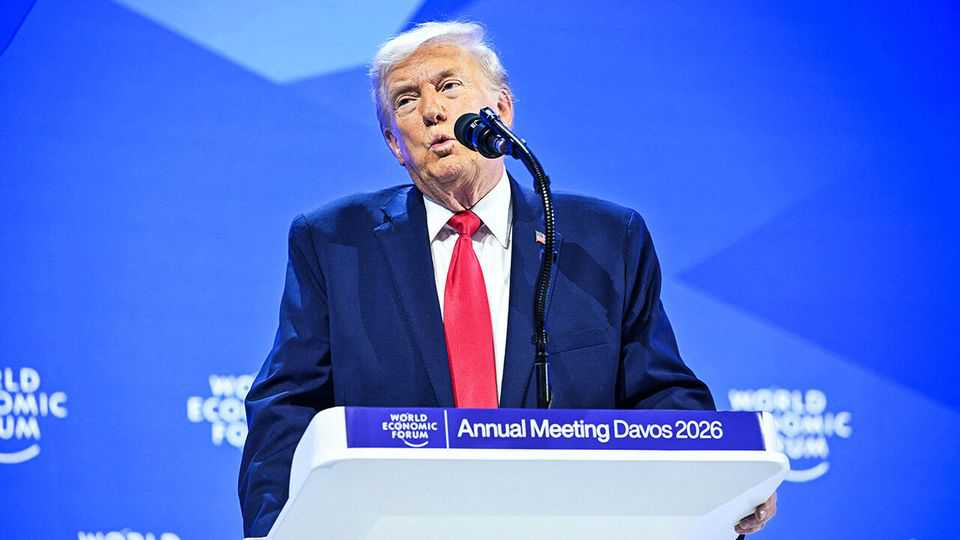
截至目前，已有少数国家接受该提议，包括埃及、以色列、土耳其、沙特阿拉伯和阿联酋。俄罗斯总统弗拉基米尔·普京正在考虑这一提议。永久会员资格需缴纳10亿美元会费。该董事会将聚焦于“有效的国际和平建设”，这可能对联合国构成挑战。它将监督一个创始执行机构的工作，该机构将包括美国国务卿马可·鲁比奥（Marco Rubio）、英国前首相安东尼·布莱尔（Sir Tony Blair）以及加沙委员会。该机构中不包含任何巴勒斯坦代表。以色列军队拆毁了位于被占领的西岸东耶路撒冷一处属于联合国近东巴勒斯坦难民救济工程处（UNRWA）的建筑群。以色列指责其与哈马斯合作，并禁止其在以色列、加沙和西岸地区运营。该机构称此次拆毁行为是“违反国际法”。■
伊朗在对政权的抗议活动遭暴力镇压后恢复了不安的平静。华盛顿的人权监测机构HRANA证实，已有超过4500人死亡、26000人被捕。实际数字可能远高于此。伊朗民众仍无法接入几乎所有互联网服务，电话和短信服务也持续受到干扰。美国司法部对明尼苏达州数名官员发出传票，指控他们涉嫌阻碍联邦官员执行移民遣返行动。涉案官员包括明尼苏达州州长蒂姆·沃尔兹（Tim Walz）和明尼阿波利斯市长雅各布·弗里（Jacob Frey）。特朗普再次威胁称，将动用《叛乱法案》授权的权力，派遣军队平息抗议活动。日本首相松山太郎（Takaichi Sanae）宣布将于2月8日举行提前大选。■
高市早苗（Takaichi）于去年十月通过执政党自由民主党内部领导权争夺战成为首相，目前民调支持率居高不下。民调同时显示，选民最担忧的是物价持续上涨。国防与安全议题也将在选举中占据重要位置。中国在台海紧张局势背景下限制对日本的稀土出口。枪杀前日本首相安倍晋三（Abe Shinzo）的凶手，同时也是高市早苗的导师，被判处终身监禁。安倍于2022年遇刺身亡。在阿富汗，伊斯兰国（Islamic State）声称对喀布尔一家中国经营的餐厅自杀式爆炸袭击负责，造成七人丧生。中国建议在该国的公民采取额外预防措施，避免前往高风险地区。■
澳大利亚议会通过法案收紧枪支管控，包括对买家实施更严格的背景审查及购枪回赎计划，以将估计约410万支枪支从流通中移除。同时强化仇恨犯罪相关法律。12月邦迪海滩犹太节日袭击事件造成15人死亡。曾于2024年12月短暂宣布戒严期间担任韩国总理的韩德洙（Han Duck-soo）因叛乱被判23年监禁。韩德洙在尹锡悦遭弹劾后暂代总统职务，随后本人也被弹劾。检方最初要求判处其15年监禁，并在尹锡悦的叛乱审判中要求判处死刑。卡拉奇购物中心火灾死亡人数升至50人，仍有数十人下落不明。■
巴基斯坦城市13年来最致命的火灾发生。中国获得批准，在伦敦建设其备受争议的新大使馆。经过数年的拖延，英国政府批准了该建筑项目，该建筑将位于伦敦塔附近。反对者称，该建筑将成为中国的情报中心，靠近伦敦金融区。政府表示，已评估了这些风险，并确保国家安全得到保护。首相基尔·斯塔默希望与中国加强经贸关系，并计划近期访华。至少43人在西班牙科尔多瓦省亚当兹附近两列高速列车相撞脱轨事故中遇难。这是该国高速铁路网络首次发生致命事故，该网络于1992年开通，是欧洲最完善的高速铁路网。■
欧洲议会投票决定将欧盟近期签署的与南美洲的《南方共同市场》贸易协议送交欧洲法院审查。投票结果接近，议员们因屈服于反对协议的势力（如农民群体）而受到批评。该协议的临时适用仍将继续生效，但议会须待法院审查完毕后才能正式批准。特朗普的高级特使史蒂夫·威特科夫与贾里德·库什纳在达沃斯与俄罗斯代表举行会谈，讨论结束乌克兰战争的提议和平计划。双方均称会谈取得积极成果。普京准备与特使会面，特朗普则计划与泽连斯基会晤。俄罗斯持续对基辅发动轰炸，导致该市大部分地区断电断水，而基辅正经历20年来最严寒的冬季。■
在危地马拉，一名毒贩团伙发动了一系列协调攻击，导致十名警察死亡。事态始于三座监狱的守卫被绑架。当安全部队夺回关押“狼王”（El Lobo）的监狱时，该帮派首领随即对危地马拉城周边的警察发动报复性袭击。总统伯纳尔多·阿雷瓦洛宣布进入为期30天的“戒严状态”。尽管总统丹尼尔·诺博亚领导的反犯罪行动，厄瓜多尔去年的谋杀案数量仍大幅上升，背后是帮派暴力的加剧。政府记录显示，谋杀案数量达到9,216起，较2024年增长30%。乌干达81岁的总统约韦里·穆塞韦尼在互联网断网及安全力量镇压的背景下举行的选举中被宣布为胜选者。■
穆胡齐·卡内鲁加巴（Muhoozi Kainerugaba）、其子及军队首领在社交媒体上吹嘘称，其部下已杀害22名反对派支持者，并表示希望博比·温（Bobi Wine）死。博比·温目前在藏匿中。塞内加尔在一场因体育道德缺失而备受争议的戏剧性决赛中击败了东道主摩洛哥队，夺得非洲杯。塞内加尔门将的毛巾在湿滑的场地上被摩洛哥球童抢走，他同时还遭到激光照射。尽管如此，摩洛哥仍因其体育道德获得奖赏。
§002 Business：本周商业原题：Business · 板块：The world this week · 栏目：本周
市场在唐纳德·特朗普撤回其关于接管格陵兰岛的威胁后反弹。此前，美欧之间可能爆发的破坏性贸易战令投资者恐慌，导致标普500指数下跌2.1%，纳斯达克综合指数下跌2.4%，创自10月中旬以来的最大单日跌幅。长期美国国债收益率在更广泛债券市场抛售中触及数月来最高水平，这一抛售由对日本债务的担忧引发。30年期日本国债收益率自2003年以来涨幅最大。国际货币基金组织（IMF）小幅上调了今年全球经济增长预测至3.3%。该机构表示，全球经济展现出“显著韧性”以应对关税，并称贸易紧张局势已缓解（此说法是在特朗普威胁对格陵兰岛征收关税之前）。
■
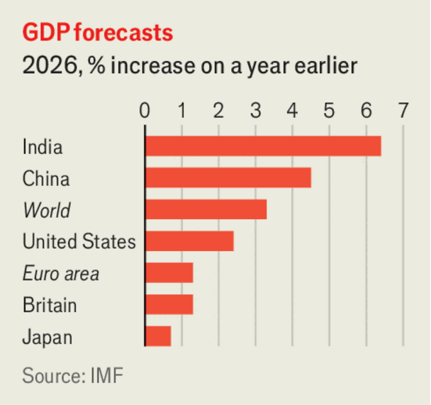
国际货币基金组织（IMF）表示，人工智能（AI）投资是推动增长的重要因素。其认为，科技股的潜在高估程度不如1995至2000年的互联网泡沫时期那么严重，但即便出现小幅回调，也可能对经济产生显著影响。中国2025年经济增速达到5%，官方确认实现政府设定的GDP增长目标。国内需求依然疲软，但出口激增带动了增长。与此同时，中国出生率降至1949年以来的最低水平（每千人5.63个），总人口数减少3.4m，稳定在约14亿人。英国12个月至12月的薪资就业人数下降184,000人，为疫情以来最大降幅。■
英国工党政府引发争议的《就业权利法案》遭到部分人士批评，特许人事与发展研究院表示该法案“阻碍”雇主。通胀治理再传坏消息，12月年度通胀率意外回升至3.4%，较此前3.2%有所上升。最高法院就特朗普是否拥有解雇联邦储备委员会董事丽莎·库克（Lisa Cook）的权力展开听证，指控其涉嫌抵押欺诈（目前尚未对库克提起指控）。大法官们对政府方的主张表示怀疑，将在数周内作出裁决。由贝索斯控股的太空公司蓝色起源（Blue Origin）宣布将发射5408颗通信卫星，为数据中心、企业及政府提供服务。■
名为TeraWave的项目将直接与埃隆·马斯克的星链网络（约1万颗卫星）竞争，但并非针对普通用户。保时捷去年销量同比下降10%，这是自2009年全球金融危机以来最严重的下滑，当时其电动车需求骤降，德国汽车制造商正重新聚焦于燃油车和混动车型。美国联邦贸易委员会决定就法官驳回其针对Meta的反垄断诉讼案提出上诉。2020年，联邦贸易委员会曾起诉Facebook收购Instagram（2012年）和WhatsApp（2014年），但去年11月一名法官裁定Meta并未在社交媒体领域形成垄断，因TikTok等竞争对手的存在。联邦贸易委员会坚持认为Meta“通过反竞争行为非法维持了个人社交网络服务的垄断地位”。
Snapchat母公司Snap就一项指控社交媒体算法导致用户成瘾的诉讼达成和解，协议条款未公开。Meta、TikTok和YouTube亦被卷入此案，案件将于开庭审理。社交媒体公司已向上诉法院申请推翻下级法院裁决，这些裁决使他们面临数千起成瘾索赔。此案被比作1990年代针对烟草公司的诉讼。Netflix调整了830亿美元收购华纳兄弟探索（Warner Bros Discovery）影视与流媒体业务的报价，将交易改为全现金形式，而非现金与股票混合。■
华纳兄弟董事会支持修订后的收购方案，以应对派拉蒙（Paramount）提出的敌意收购。派拉蒙已表示将直接向股东寻求对其收购案的批准。与此同时，奈飞（Netflix）宣布，其2025年最后三个月净利润达24亿美元，同比增长29%。目前奈飞全球付费会员数达32.5亿，相当于全球观众接近10亿人。其去年最成功的电影，也是有史以来最成功的电影，是《KPop恶魔猎人》。其他热门影片包括《弗兰肯斯坦》《我的牛津年》和《炸药之家》。■
§004 领导人原题：The true danger posed by Donald Trump · 板块：Leaders · 栏目：领导人
欧洲人原本期待一场激烈抨击，但达沃斯论坛上特朗普几乎表现得较为和解。他要求“权利、主权和所有权”归属格陵兰，但放弃了关税，排除了使用武力，并随后赞扬了新的“框架”和可能达成协议的前景。这对美国盟友来说应是个好消息。一场可能吞噬跨大西洋联盟的危机已有所缓解。但这种缓解能持续多久？这或许只是战术性后退。特朗普多年来一直觊觎格陵兰。在阐述其主张时，他对北约的蔑视态度应让欧洲各国首都提高警惕。格陵兰危机为所有国家提供了重要启示。
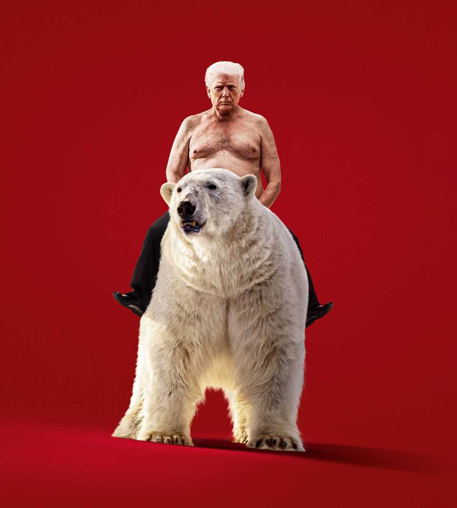
第一种可能是，特朗普将在压力下让步，但未必放弃其长期目标。第二种可能是，总统狭隘而悲观的世界观，以及他篡改历史的倾向，已削弱了曾支撑美国盟友关系的信任。最后，可以推断，在特朗普任内发生的每一次争执都可能具有存在性威胁。他预示着一场全球格局重塑，美国盟友必须为此做好准备。在格陵兰岛问题上，欧洲幸运地避开了这场风波，因为特朗普选择就几乎没有任何战略价值的奖品挑起争端。特朗普正确指出，随着北极冰层融化，全球航运将面临争夺。格陵兰岛是美国未来“黄金穹顶”导弹防御系统的选址。如果该岛归属美国，俄中两国都将不敢对其发动攻击。
格陵兰已有美国军事基地以威慑潜在侵略者。若该地区遭遇攻击，丹麦及其欧洲盟友有强烈动机加以保护。目前美国在格陵兰的行动已受现有条约约束，新框架下丹麦还可强化这些条约。在地图上勾勒出更多区域的额外好处微乎其微。所有这些帮助欧洲人解释，美国承担的潜在代价并不值得。特朗普关于征收关税的威胁使一些欧洲国家威胁反制。市场注意到贸易战和安全危机可能对美国造成的损害。当地公众普遍反对代价高昂的收购。在欧洲激烈游说下，国会罕见地表现出对特朗普的抵制态度。■
道理是，要让美国总统退让，就必须让他相信你会对他施加代价。在与特朗普的多数互动中，欧洲领导人往往以谄媚的态度应对，偶尔夹杂着克制的反对意见。这次他们更加果断，效果显著。但好消息到此为止。在达沃斯论坛上，特朗普提到要拥有格陵兰岛——这意味着他仍可能通过重新征收关税，甚至威胁使用武力来谋求筹码。即便他不采取行动，美丹两国若成功谈判出一项尚未获得主权的修订条约，欧洲人仍应留意特朗普讲话中的措辞。这暴露了他对欧洲及其当前跨大西洋联盟价值的隐含蔑视。特朗普称美国已为北约“支付了100%”，却从未获得任何回报。
美国财政部部长斯科特·贝森特抱怨称，自1980年以来，美国在防务上的支出比那些搭便车的欧洲国家多出22万亿美元。美国政府的国家安全战略警告称，欧洲正面临移民引发的“文明消亡”威胁，可能很快不再成为可靠的盟友。这与北约的历史和欧洲的未来背道而驰。确实，自冷战结束以来，北约欧洲成员国在防务上的投入确实不足。但在此期间，他们曾是遏制苏联扩张的屏障，并共同信奉民主与自由。无论如何，他们正在重新增加防务开支，部分原因是特朗普的施压，但主要原因是来自俄罗斯的威胁日益加剧。北约之所以成功，是因为其建立在互利与价值观的双重基础之上。北约《文章5》的集体防御承诺仅在9/11事件后支持美国时被触发过。
按比例而言，丹麦在阿富汗战争中损失的士兵比美国更多。欧洲为美国提供诸如德国拉姆施泰因空军基地等战略据点，以在全球范围内投射军事力量；它还捍卫美国利益，包括北极地区的权益。不幸的是，特朗普先生不太可能改变他视盟友为寄生虫、共同价值观是给傻瓜看的看法。这种态度势必导致进一步的对抗，无论是围绕格陵兰岛还是其他议题。因此，美国在欧洲乃至全球的盟友需要为一个孤立无援的世界做好准备。这首先意味着尽可能维护北约的完整性。打造硬实力需要数年时间，而特朗普先生却急于求成。问题在于，特朗普先生认为美国掌握着所有筹码，因为他认为欧洲和亚洲盟友比美国更难以承受与美国决裂的后果。他部分而言是对的。■
例如，如果美国拒绝向乌克兰出售武器并封锁情报，将导致乌克兰战败，并招致下一次俄罗斯的侵略。欧洲和亚洲在军事装备方面依赖美国。美国提供了北约40%的军事能力——而这40%是最重要的部分。美国向欧洲提供一系列对经济至关重要的服务和数字技术。欧洲应努力揭示特朗普思维的肤浅。它可以从列出美国可能遭受的损失清单开始——这远不止是美国消费者因更多关税而承担的成本。欧洲是价值1万亿美元的美国商品和服务的市场。它提供关键技术，包括芯片制造、电信设备、镜头、飞机等更多领域。欧洲间谍，尤其是英国的，为美国提供宝贵的情报。■
接下来，欧洲应警告美国人，特朗普所营造的敌对世界将带来何种后果。由于无法信任美国，德国、日本、波兰和韩国将加速重整军备，甚至可能寻求核武器。核扩散将削弱美国自身军备的价值，并抑制其外交手段。中国和俄罗斯不会认同特朗普对美国影响力边界与自身势力范围的界定。所有这些因素可能导致一场毁灭性战争，使美国难以置身事外。欧洲需要确保当投资者、选民和国会应对特朗普的自夸计划时，不仅关注欧洲的脆弱性，也意识到自身可能遭受的伤害。这意味着既要诉诸他们的自身利益，也要强调战争与和平的深层原则。■
投资者不愿蒙受损失，民众不愿节衣缩食，政客们也不愿被选民抛弃。不幸的是，美国的盟友关系可能难以承受总统以盟友毫无价值为由发起的持续角力。从内部看，欧洲将陷入分裂，各国将寻求与贪婪的美国不同的妥协；从外部看，俄罗斯和中国总统弗拉基米尔·普京与习近平将通过挑拨离间的行动削弱盟友的团结。过去数十年，美国的保护让欧洲人习惯了安逸，他们不再专注于硬实力，而是沉迷于安逸生活。这些时代已经终结。欧洲领导人应努力减缓跨大西洋联盟的瓦解，但也必须为北约不复存在的那一天做好准备。■
仅限订阅者：欲了解我们如何设计每周封面，请订阅我们的每周Cover Story通讯。■
§005 领导人原题：The odd thing about Modi’s mojo · 板块：Leaders · 栏目：领导人
印度总理纳伦德拉·莫迪（Narendra Modi）在2024年遭遇了挫折。其政党失去了全国多数席位，不得不开始与多个政党联合执政。接下来的12个月里，政策制定显得迟滞。有人认为唐纳德·特朗普（Donald Trump）的再度当选会增强莫迪的影响力——莫迪曾与这位美国总统关系密切。然而美国总统却对大多数印度出口商品加征关税，目前关税总额已达50%。但逆境以及满足联合政府伙伴的需求，似乎让莫迪变得更加务实。尽管他仍使用分裂性言论，但自选举失利后，他对印度穆斯林群体的挑衅或压迫性行动明显减少。
■
他将重点放在经济改革上，这些改革应有助于印度维持其高速经济增长。如果他能持续推动，印度民众将从中获益良多。政府预计，印度经济在即将于3月结束的财年中将增长7.4%。印度经济可能很快超越日本，到2028年或可超过德国。尽管面临美国关税压力，印度为期十年的制造业振兴努力已初见成效：目前印度组装的iPhone手机约占全球总量的五分之一。莫迪似乎意识到，要维持高增长仍需付出更多努力。过去几个月，其政府已推出破产改革措施，有望缩短冗长的纠纷，同时简化印度令人困惑的国家增值税体系，该体系下一袋爆米花可能适用三种不同的税率之一。■
官员们承诺将削减那些让腐败检查员轻易通过索贿来视而不见的繁琐程序，例如对一包饼干重量微小误差的刑事处罚。11月，印度出台了有助于改善劳工法的改革措施，清理了长期以来给印度企业带来扭曲激励的繁杂规则，促使企业保持小型化。政府正在推进一项法案，可能鼓励私营企业修复锈蚀的输电塔和老旧的变电站，从而降低电价。在国际层面，印度自去年年中以来已签署三项贸易协定：与英国、新西兰和阿曼。印度可能即将宣布与欧盟达成一项重大新贸易协议。它即将开启与加拿大的贸易谈判，并表示将允许外资在保险和核电领域更自由地竞争。■
印度终于开始修复与邻国中国的经济关系。中印关系在2020年因喜马拉雅边境冲突陷入僵局，冲突中士兵被殴打致死或溺水身亡。但去年莫迪总理时隔七年首次访华，与习近平会面。两国直航在10月重启，结束了长达五年的暂停期。多年来印度限制大量中国投资，并使中国高管获取签证变得困难。如今意识到需要中国的资金和技术，印度开始逐步放宽过度限制。莫迪总理是否会继续这一积极方向？近期邦级选举的压倒性胜利重振了其政党气势，同时外部世界的态度也趋于缓和。■
不仅与中国的紧张关系有所缓和，特朗普对印度的愤怒也因印度削减俄罗斯石油采购而有所缓解。危险在于，若莫迪政府无法再向民族主义支持者解释改革是为在不友善的世界中强化印度所必须的牺牲，其改革意愿可能减弱。近期的改革力度仍显不足，部分措施仅是修正近期错误。尽管印度平均关税率有所下降，但仍高于莫迪2014年首次执政时的水平。急需的农业改革仍被锁在“太难”标记的盒子里，企业获取土地的便利化改革也处于同样困境。印度糟糕的教育体系仍在浪费数百万年轻人的潜力，雾霾和交通拥堵则吞噬了城市化本可带来的部分红利。
无心之失仍屡见不鲜：本月印度最高法院的一项裁决令外国投资者感到不安，引发了关于资本利得税应缴税款的混乱。莫迪总理虽已有所克制，但其威权倾向仍未消失。然而，随着美国日益走向保护主义与政策反复无常，印度的改革转向仍值得肯定。莫迪本可对选举失利或特朗普的关税政策采取更不具建设性的应对方式。印度人似乎已认识到，打造更高效的经济体系才是获取全球影响力的最佳途径。莫迪应坚持经济务实主义，同时抑制分裂性冲动。■ 订阅《经济学人》的读者可注册我们的观点通讯，汇集本刊最佳评论、专栏文章、特邀评论及读者来信。
§006 领导人原题：Trump’s Board of Peace is a distraction from the real work in Gaza · 板块：Leaders · 栏目：领导人
特朗普声称在其第二个任期中结束了八场“无法结束的”战争。在某些情况下他夸大了自己的作用；在另一些情况下战争仍在持续。然而在加沙，他确实实施了停火协议，迫使以色列从人口密集区撤出，并迫使哈马斯释放其人质。不过，这仅仅是20点和平计划的第一阶段。停火协议生效后的三个月内，仅实施了第二阶段的一个要素。1月14日，巴勒斯坦加沙管理委员会（Palestinian National Committee for the Administration of Gaza）被任命。 ■
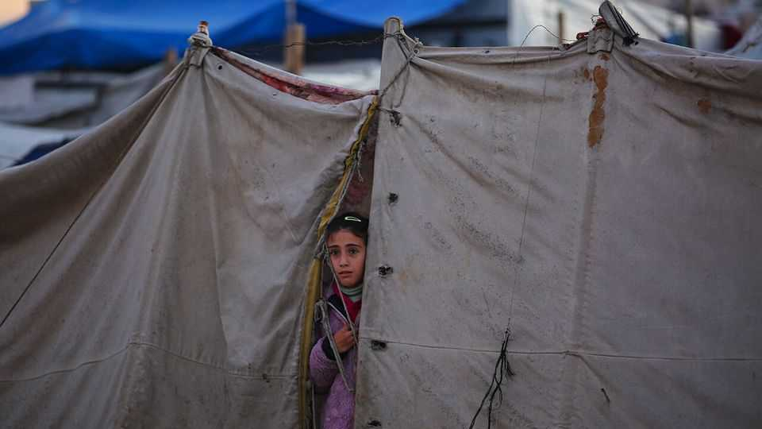
以色列尚未允许其15个成员进入被摧毁的加沙地带，更不用说在此地行使治理权，因此其实际权力究竟有多大尚不明确。加沙和平进程面临巨大障碍。哈马斯无意迅速交出剩余武器或放弃对加沙大部分地区的控制。以色列总理内塔尼亚胡今年将面临选民投票，他不愿进一步撤军。以色列仍控制着加沙超过半数的领土，并偶尔对该地区发动致命袭击。以色列不愿撤回部队或放弃任何控制权，只要哈马斯仍保有实力。特朗普推动第一阶段谈判，明确向双方提出要求。他随后对内塔尼亚胡施加个人压力，并通过哈马斯的资助国卡塔尔和土耳其对其施压。当任一方犹豫不决时，特朗普便宣称协议已达成，迫使对方反驳。■
他的强硬交易风格在两年外交努力失败后取得成功。然而此后，他的注意力逐渐转移。最近宣布的三个新和平缔造机构不太可能让进程重回正轨。特朗普任命的负责监督加沙的执行委员会成员大多擅长商业拓展，而非解决人道主义危机，其中没有一名巴勒斯坦人。这些机构之上将设立一个“和平委员会”，由世界领导人组成的私人俱乐部。成员资格需缴纳10亿美元会费。拥有否决权的主席，可能终身任职，正是特朗普本人。委员会章程哀叹道：“太多和平建设方式助长了永久依赖，并将危机制度化。”这无疑适用于大量传统外交。如果该委员会能成为章程设想的“灵活高效的国际和平建设机构”，世界应为之欢呼。
但一个专为某人不可遏制的虚荣心而设的论坛，是否能为联合国提供有用的替代方案？更可能的是，这将进一步分散对加沙困境的关注。该地区仍被以色列占领的荒漠与哈马斯控制的领地分割。这种局面注定让200万加沙居民长期陷于苦难，其中许多人仍无家可归，缺乏充足食物和医疗救助。这些条件极易引发新的战争。特朗普本人拥有迫使内塔尼亚胡与哈马斯领导人采取下一步行动的权力。他提出的加沙计划获得广泛国际支持。他应专注于此。为缓解加沙民众的苦难并防止战争重演，第二阶段的其余工作应尽快实施。应允许NCAG进入加沙，并为其提供所需资源，开始筹备重建工作。■
应组建并部署一支国际维和力量。必须启动一个可验证的解除哈马斯武装进程。以色列必须从加沙农田撤出部队，作为全面撤军的前奏。以色列应允许更多援助进入加沙地带。该地区应涌入粮食、药品和建筑材料。即便特朗普擅长运用强硬手段，实现这些目标仍非易事。但关注加沙问题是首要任务。在加沙取得成功将比任何其他举措更能提升总统的和平缔造声誉。■ The Economist的订阅者可注册我们的Opinion新闻简报，汇集了最佳的社论、专栏、特邀评论及读者来信。
§007 领导人原题：Chinese AI is a risk for Europe. So is shunning it · 板块：Leaders · 栏目：领导人
，DeepSeek还是一家来自杭州的 obscure hedge-fund-turned-tech-startup（ obscure hedge-fund-turned-tech-startup 译为“从对冲基金转型的科技初创企业”）。短短一周内，它便成为新一轮中国创新的代名词，推出的人工智能模型能力堪比硅谷的前沿水平，但构建和运营成本却低得多。经过过去一年在中国激烈竞争的市场厮杀，DeepSeek及其本土竞争对手们正将目光投向海外市场寻求利润。他们不会在美国找到最大利润空间，因为美国正日益脱离地缘政治界限，也不会在较贫穷的全球南方找到。这使得欧洲成为他们关注的最可能对象。■
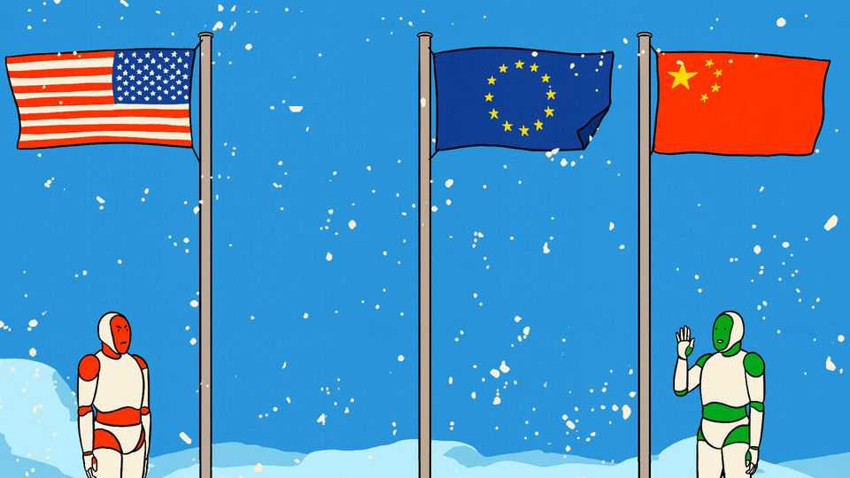
老欧洲对源自中国的新兴技术可能感到忧虑。中国电动汽车已开始蚕食德国和法国汽车制造商的传统美食。数个欧盟国家担忧DeepSeek的聊天机器人可能将欧洲企业与公民的数据转移至中国，因此试图限制其访问权限。没有人愿意依赖地缘政治对手来支撑日益关键的基础设施。这些担忧合情合理。但在人工智能领域，若能明智地加以利用，中国或许会成为欧洲的福音。欧洲企业应欢迎这场中国冲击，原因有三。首先，中国模型的性能已接近OpenAI、Anthropic和谷歌等公司所能提供的最佳水平——对多数用户而言已足够。谷歌AI负责人Demis Hassabis曾表示，中国人工智能仅比美国同行落后“几个月”。■
如同DeepSeek，大多数模型无需付费即可访问，且运营成本较低。这种成本优势源于其开放性——这也是它们应吸引欧洲企业关注的第二个原因。与美国领先企业推销的专有封闭模型不同，开放模型可轻松进行微调，并在本地基础设施上运行。使用这些模型可避免被单一供应商锁定的风险。若OpenAI或Anthropic倒闭，其客户将陷入困境。若DeepSeek停业，用户仍可自行在其数据和服务器上运行其模型的“参数”（即训练过程中学习到的参数），这亦缓解了数据被窃取的担忧。美国企业如Meta也提供开放模型。但中国正在引领这一领域。欢迎中国AI对欧洲而言还有最后一层益处：它提供了防止被排除在外（lock-out）及被锁定（lock-in）的保障。■
唐纳德·特朗普（Donald Trump）第二次就职前的一年，担心欧洲获取美国技术似乎荒谬。然而，随着他肆意利用跨大西洋联盟争夺格陵兰岛，一项限制美国AI企业欧洲业务的行政命令已不再难以想象。欧洲对美国技术的限制，包括AI所依赖的计算云，也变得合理。尽管在碎片化的世界中，欧洲最佳选择或许是培育本土AI产业，但短期内不会成为模型构建的超级强国。不过，它仍可成为技术应用领域的全球领导者。目前，37%的欧盟企业已报告使用生成式AI，与美国相当。在制造业领域，欧洲企业已领先。借助包括中国在内的开源模型，其优势或将进一步扩大。
欧洲政界人士似乎已意识到这一点。在缺乏活跃的AI巨头游说保护的情况下，早期禁止DeepSeek的尝试大多未能取得实质进展。今年1月，欧盟委员会启动了识别并清除阻碍开放模型发展的障碍的行动。但这一切无法确保欧洲实现技术自主。企业仍将依赖美国硬件，尤其是英伟达的芯片。中国软件仍伴随既有的风险。但对欧洲而言，眼下更紧迫的是拒绝依赖。■ The Economist订阅者可注册我们的Opinion通讯，汇集了最佳的社论、专栏、特邀评论及读者来信。
§008 领导人原题：Britain’s good idea for custom genetic medicines · 板块：Leaders · 栏目：领导人
罕见病个体来看确实罕见，但整体而言却远非如此。全球约有3亿人受其影响，许多疾病极具破坏性，大量病例令年轻生命悲惨终结。其中约80%由基因缺陷引发。基因组学（帮助医生发现致病突变）和基因药物（可编辑突变DNA或干扰其转化为蛋白质的过程）的突破使越来越多疾病变得可治。但患者却很少真正接受治疗。原因在于药企缺乏开发定制药物并推动监管审批的动力。 ■
对于专门大规模生产药品的企业而言，这一流程既昂贵又繁琐。自2018年以来，可能不到100种针对罕见病的定制药物获批生产，通常由绝望的家长通过慈善筹款直接支付费用。但情况不必如此。本月，英国药品和医疗产品监管局（MHRA）批准了一种新型临床试验。十名患有威胁生命的超罕见遗传神经退行性疾病患儿，将分别接受一种已知药物分子的独特版本。若试验成功，MHRA将不仅批准每种定制药物，而是批准整个生产流程。负责定制的EveryONE Medicines公司可据此为英国所有需要治疗且能被该基础化合物治愈的患儿生产相应变体。■
美国食品药品监督管理局（FDA）正采取类似做法。全球其他监管机构也应效仿英国的模式。监管机构的职责在于平衡患者风险与临床获益。若企业开展严谨的临床试验，涉及大量患者并设有安慰剂对照组，这种风险与收益的权衡相对简单明了。但监管机构对定制化治疗方案心存疑虑，尤其针对罕见病且缺乏既往临床数据的情况。在监管者眼中，这类治疗的风险难以量化，疗效也充满不确定性。英国药品和保健品监管局（MHRA）的创新之处在于认真对待定制化治疗的未知风险与缺乏治疗时必然产生的痛苦之间的权衡。或许某一天，一名儿童在使用定制药物后不幸去世，这将成为悲剧性事件。■
这不是反对此类治疗方式的论点——除非存在更安全的替代方案。英国的处理方式应推动创新，尤其在广泛采用的情况下。EveryONE Medicines认为，流程审批可将定制疗法的研发成本从200万至300万美元降至低于100万美元，研发时间从两三年缩短至不足九个月。随着价格下降，需求将上升，包括最终来自公立医院系统。结合更清晰的监管指引、政府表示愿意为此类治疗付费的信号，以及理想情况下新生儿的全基因组测序（英国也正开展一项大规模试验），将吸引更多生物科技公司进入市场。目前，一家新成立的生物科技公司已对MHRA的流程审批表示兴趣，该公司正开发基于基因编辑的其他罕见病定制疗法。■
各国越效仿英国，这种良性离心机运转得越快——拯救年轻生命的数量也越多。■ 订阅者可注册我们的Opinion通讯，汇集了我们的社论、专栏、特稿和读者来信的精华。
§009 简报原题：Donald Trump’s expansionist itch has undermined global security · 板块：Briefing · 栏目：简报
简报 | 冰与火 唐纳德·特朗普的扩张冲动削弱了全球安全 他已暂停对格陵兰的吞并计划，但无法消除由此引发的不信任感 ■
首先，唐纳德·特朗普重申：“唯有美国能够守护这片巨大的陆地、这片巨大的冰川，开发并改善它。”他在本周齐聚瑞士达沃斯世界经济论坛的政治领袖与工业巨头面前如此表示。“因此，我正寻求立即展开谈判，再次讨论美国收购格陵兰岛的事宜。”然而，数小时后，他便宣布让步：他在社交媒体上称，他与北约秘书长马克·吕特已就格陵兰岛达成“未来协议的框架”，因此他威胁对八国北约成员征收的关税将被撤销。《经济学人》发稿时，特朗普尚未披露其与吕特计划的具体细节。
事实上，他暗示相关细节仍在厘清中——这项任务他已交由副总统J.D.万斯（J.D. Vance）和国务卿马可·鲁比奥（Marco Rubio）等人负责。但可以明确的是，特朗普至少在现阶段正逐步退却，避免与美国最亲密盟友爆发一场旷日持久的冲突。然而，即便只是短暂地提出以武力从盟友手中夺取领土的设想，特朗普已严重损害了美国的信誉，进而威胁其安全。而这位反复无常的总统，随时可能再次改变主意，重燃这场极具争议的争端。自特朗普2017年上任以来，美国在冷战初期（75年前）建立的全球联盟体系便陷入缓慢发酵的危机。但对格陵兰岛（丹麦领土）的鲁莽行动却引发了五级警报。■
跨大西洋关系自苏伊士危机70年以来降至最低点。一系列升级的惩罚性措施和报复威胁着局势。特朗普似乎正面临失去整个大陆以换取一个岛屿的风险。自任期内首次提及收购格陵兰以来，他给出的各种理由都显得毫无根据。然而，近几周他对该领土的追求变得更为迫切和强硬。1月17日，他宣布将从2月1日起对丹麦及七国欧洲国家进口商品加征10%关税，这些国家曾向格陵兰派遣小规模部队，此举标志着此前主要停留在口头上的一系列行动出现了戏剧性升级。■
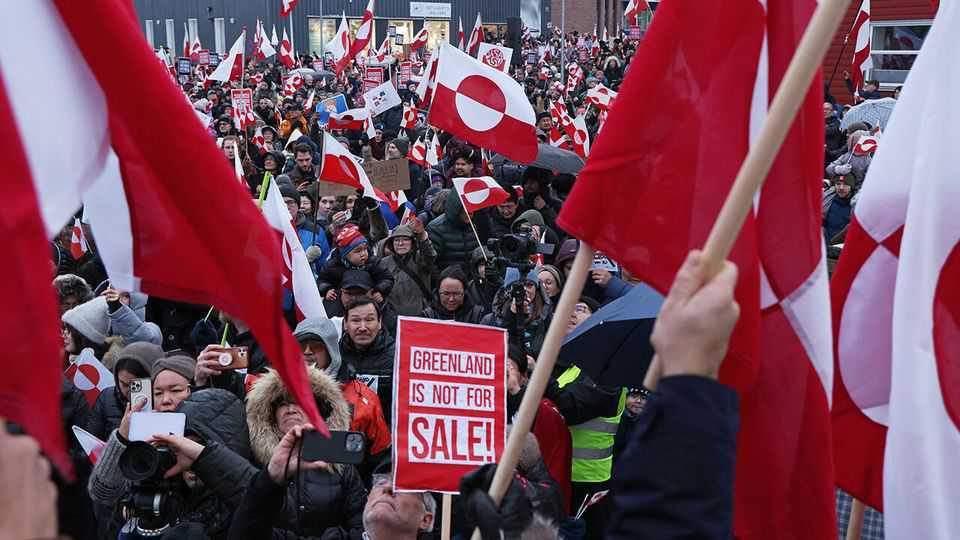
特朗普表示，如果格陵兰岛在6月1日前未归美国所有，关税将升至25%。“无法回头”，他几天前刚这么做时曾如此断言。格陵兰岛的人口和经济规模远小于美国50个州中最小的州，但局势依然重大。丹麦首相梅特·弗雷德里克森本月早些时候表示：“如果美国决定对另一个北约国家发动军事攻击，那么一切将停止，这包括北约以及二战后确立的安全体系。”美国与欧洲关系的恶化正被亚洲盟友以忧虑的目光密切关注。
特朗普政府推行着一种不切实际的双轨政策：一方面拥抱亚洲盟友和伙伴，谴责太平洋地区的中国胁迫行为；另一方面却轻视欧洲盟友和伙伴，甚至对大西洋上的丹麦施加压力。在最近的火奴鲁鲁国防论坛上，一场安全议题的峰会中，日本防卫大臣小渊惠三（Shinjiro Koizumi）发出警告，称“全球范围内的紧张局势已濒临战争边缘”，并强调“印太地区与欧亚大陆是不可分割的整体”。北约成员国之间曾多次发生争执。1974年土耳其入侵塞浦路斯，直接与希腊塞浦路斯人及部分希腊军队爆发冲突。希腊的回应是抗议性地退出北约一体化军事指挥体系达六年之久。1996年，希腊战斗机在爱琴海上空击落了一架土耳其军机。■
这些对峙对联盟的长期影响微乎其微。美国对格陵兰的威胁更为严重，因为美国是北约的政治和军事支柱。自北约成立75年来，始终有美军将领担任欧洲盟军最高司令（SACEUR）。北约为欧洲制定的防务计划——包括格陵兰——均由前SACEUR克里斯·卡沃利（Chris Cavoli）起草，假设了高度的美国参与。美军军官不仅占据北约联盟的顶层，而且深入渗透到联盟的各个层面。没有美国的空中力量和情报支持，北约部队将更难且成本更高地遏制俄罗斯的侵略。吞并格陵兰的威胁——无论是通过施压还是入侵——已使欧洲对《北约集体防御条款》（Article 5）的信任岌岌可危。■
在瑞士的演讲中，特朗普表示他对北约的价值持怀疑态度，并质疑欧洲国家是否会在他国危难时伸出援手——却选择性地忽略了9月11日恐怖袭击后，许多欧洲国家曾毫不犹豫地伸出援手的事实。若他正考虑肢解一个欧洲盟友，欧洲政府自然会好奇，他是否会愿意捍卫一个正被俄罗斯肢解的盟友？特朗普态度转变的动机尚不明确。鉴于他长期以来对盟友的轻视，很难想象他会突然后悔自己对美国联盟体系造成的损害。更合理的解释是，他担忧一场破坏性对等报复的螺旋升级。毕竟，当争端升级时，美元和美国股市曾大幅下跌，但特朗普宣布撤回立场后，市场迅速恢复了稳定。■
看起来这是华尔街人士所说的“TACO交易”（Trump Always Chickens Out）最新案例。若属实，总统选择退缩是正确的。过去一年中，许多欧洲领导人试图通过阿谀奉承来讨好特朗普，但此次他们的态度远不如往常温和。多位领导人发出声嘶力竭的声明，谴责地缘政治勒索并拒绝丛林法则。人们普遍讨论特朗普只对实力展示做出反应。失控升级的风险显而易见。欧洲领导人正在考虑的措施力度，也暴露出跨大西洋关系已遭受严重损害。例如，欧洲议会表示将暂停执行特恩伯里协议，这项去年欧盟与美国签署的贸易协定规定欧洲接受15%关税率却未获美方对等回报。■
欧洲对美商品的关税原定于2月上旬生效，涉及约930亿欧元（1080亿美元）的美国商品。这些关税现在几乎肯定将再次被推迟。一些欧洲领导人希望采取更严厉措施。法国总统埃马纽埃尔·马克龙（Emmanuel Macron）建议欧盟动用其最强大的经济武器——反强制工具（ACI）。这一机制此前从未被使用过，它将允许欧盟不仅对美国的关税采取对等措施，还可采取完全不同的报复形式，例如吊销银行牌照或限制出口用于制造先进计算机芯片的设备（这一领域荷兰的ASML公司拥有垄断地位）。此类举措几乎肯定会引发美国进一步的升级反应，而美国拥有充分的手段进行应对。■
美元霸权和美国金融体系的主导地位本可被用来制约欧洲银行和企业。数字反击可能利用欧洲对美国云服务商的依赖，等等。幸运的是，特朗普的让步意味着ACI暂时仍不会受到考验。但裂痕已促使此前难以想象的事情被认真考虑。例如，欧洲也在考虑其对美国的军事影响力。若失去如德国拉姆施泰因基地（ sprawling medical and logistical hub）或希腊索达湾（deep-water port）等欧洲基地，美国在非洲和中东投射军事力量将难上加难。美国于1月7日扣押一艘与委内瑞拉关联的油轮，就依赖于对英国空军基地和基地的访问，以及丹麦的未指明支持。■
美国或许可以借助中东等地的替代设施来取代其中一些设施。但这一过程将耗费数十亿美元，并耗时数年。而其中一些设施则无法被替代。美国在北极地区监测和应对威胁的能力——这显然是其寻求拥有格陵兰岛的主要动因——依赖于英国、冰岛、格陵兰岛和挪威等北约盟友的合作。特朗普曾援引“金穹导弹防御计划”作为美国必须拥有格陵兰岛的理由，该计划不仅依赖于已在格陵兰岛存在数十年的早期预警雷达，还依赖于如英国英格兰北部的 RAF Fylingdales 等基地。然而，利用这些依赖关系将面临困难，因为特朗普政府似乎已表现出减少对欧洲军事承诺的意愿——而这正是欧洲领导人不愿看到的。■
美国已停止向乌克兰提供直接军事援助，但允许欧洲国家以乌克兰名义购买美国武器，同时继续向乌克兰提供战场情报，协助其使用远程导弹打击俄军。这两项支持仍至关重要：若美国切断武器销售和情报支持，俄方在战场上的推进速度和乌克兰的伤亡都将加快，使乌克兰更接近潜在崩溃的边缘。前欧洲情报首长称此举将“造成灾难性后果”。事实上，曾有担忧特朗普可能进一步扩大其胁迫行动，甚至针对北约本身，据称他在2018年曾几乎完全退出北约。他可能首先削减驻欧洲美军规模，或宣布《北大西洋公约》第5条失效，直至格陵兰岛移交。■
若发生骤然破裂，欧洲各国空军在无法获得美国通信、目标数据和弹药的情况下，将难以充分发挥其最先进的F-35战机的作战效能。英国的情报体系、核威慑力量以及未来潜艇部队都将陷入危险。简而言之，寻找压力点的分析清楚地表明，美欧在军事上高度交织，因此双方信任的消解令人担忧。尽管欧洲一些领导人频频高谈阔论，但其中部分人曾担忧格陵兰过于渺小且不重要，不值得终止跨大西洋关系，他们还担心破裂可能促使俄罗斯发动（或至少试探）对欧洲防线的攻击。■
此外，他们深知欧洲在与特朗普正面冲突中面临的损失将比美国更为严重，无论是以贸易战的形式，还是以撤回军事支持的方式，尤其是对乌克兰而言。因此，欧洲领导人积极寻求所谓的“退出通道”，而吕特先生似乎已找到这样的路径。然而，这种退出通道的稳固性在缺乏更多细节的情况下无从判断。即便存在不利后果，特朗普未来仍可能重启对格陵兰岛的觊觎。尽管公众舆论和国会的反对意见，似乎难以阻止他继续这一企图。收购格陵兰岛的想法并不受欢迎：益普索（YouGov）为《经济学人》进行的一项针对1500多名美国人的调查（1月16日至19日）显示，仅29%的受访者支持购买格陵兰岛。■
国会议员，包括一些共和党人，曾对特朗普对待亲密盟友的方式表示不满。跨党派国会代表团访问哥本哈根和达沃斯，试图向欧洲人保证可找到多数人反对收购。但共和党人比其他美国人更支持特朗普的扩张主义。在《经济学人》民调中，58%的共和党人支持购买格陵兰岛。保守派参议员特德·克鲁兹是支持特朗普的代表之一，他告诉福克斯新闻：“我认为将格陵兰岛纳入美国国家利益是压倒性的。”一名众议员甚至提交了法案，授权特朗普采取“必要措施”将格陵兰岛作为美国第51州。特朗普的支持者习惯性地跟随他的决策，尤其是当这些决策似乎奏效时。■
我们的民调显示，仅34%的共和党人希望美国在去年伊朗先对伊朗发动空袭前采取行动，但事件发生后，有70%的共和党人表示支持此次空袭。特朗普推翻尼古拉斯·马杜罗担任委内瑞拉总统的举动，也促使右翼阵营出现了类似的态度转变。如果特朗普再次鼓动关于格陵兰的议题，欧洲领导人恐怕将再次陷入公众愤怒与现实依赖之间的夹缝——62%的德国人支持在与美国冲突中援助丹麦。“美国庞大的国力是任何欧洲首都的战略头脑都深刻理解的事物，”最近一次采访中，曾担任多位英国首相外交政策顾问的约翰·贝维如此说道。■
英国、法国和德国都“谨慎对待美国支持的撤退，以及欧洲在没有美国的情况下未来发展的设想”，他指出。但与此同时，他也补充道，三国也在“为所谓的‘有序过渡’从美国主导的安全伞中进行更多幕后规划”。例如，英国和法国正在悄悄深化在核武器政策上的合作。去年夏天，他们宣布将首次实现核力量的“协调”——这对历来将核武器政策严守秘密的法国而言是个重大突破。最近几周，多家瑞典报纸及社会民主党杂志的编辑都开始探讨北欧是否应发展自己的核威慑力量。“公开讨论这一议题的禁忌正在被打破”，一位瑞典专家表示。■
一位英国内部人士称，即便英法在乌克兰推动“自愿联盟”计划，其目的也具有双重性。表面上是为了在停火后协助乌克兰加强防御，实际上则是欧洲主导军事力量的初步尝试，该力量可能包括非欧盟成员国如英国、加拿大和土耳其。前联盟特使表示：“我希望主要的北约欧洲盟国正在秘密研究如何掌控北约的基础设施，同时等待美国政治体系恢复常态的可能性。” ■
§010 简报原题：Donald Trump’s grab for Greenland makes no sense · 板块：Briefing · 栏目：简报
格陵兰首府努克（Nuuk）的居民人心惶惶。“我担心遭到入侵，”在港口附近杂货店工作的安东尼低声说，“我不希望格陵兰变成战场。”附近狩猎用品店的店主表示，当地人正在囤积弹药。“人们感到害怕，”旅游公司老板卡斯珀·弗兰克·莫勒（Casper Frank Møller）说，“这里的人们正在和家人讨论是否要搬到丹麦。”格陵兰人或许能从美国总统唐纳德·特朗普于1月21日宣布的“已同意就格陵兰未来协议框架达成共识”中获得些许安慰。 ■
特朗普将格陵兰岛纳入美国版图的野心意味着什么，仍不清楚。当天早些时候特朗普表示：“我不必动用武力，我不想动用武力，我不会动用武力。”但他坚持认为控制该岛对美国国家安全至关重要，并再次提及所有权问题。在发表演讲前，努克（Nuuk）的格陵兰居民急于解释他们对被美国收购兴趣寥寥。一年前的民意调查显示，85%的格陵兰人反对这一想法——而态度似乎愈发强硬。托马斯·努卡（Thomas Nuka）叹了口气说，特朗普“试图像拥有所有人一样统治世界”。他补充道，美国原住民处境尤其糟糕——这尤其令人担忧，因为特朗普本人，如同约90%的格陵兰人一样，是因纽特人（Inuit）。从表面来看，像努卡这样的人的观点应具有分量。■
格陵兰约5.6万居民享有高度自治权，但丹麦仍负责其外交和防务。丹麦法律赋予格陵兰居民宣布独立的权利；按此推论，他们理论上也可选择加入美国。但特朗普总统对收购格陵兰的决心毫不掩饰，完全无视当地居民意愿。他一方面声称此举将使美国更安全，另一方面则断言格陵兰人在美统治下将更富裕。这两项主张均存疑。特朗普的军事论点模糊，他称俄罗斯和中国军舰“在格陵兰周边无处不在”，并指责丹麦仅靠“两辆雪橇犬拉的雪橇”便无法防卫该地区。■
他更具体地指出，拥有格陵兰是其提出的“黄金穹顶”计划的关键，该系统旨在保护美国免受导弹威胁。然而特朗普政府12月发布的最新国家安全战略中，对格陵兰只字未提。（该战略模糊地呼吁保护美国在西半球的“关键地理区域”准入权。）尽管俄罗斯武装力量正忙于乌克兰战争，丹麦情报评估却指出“其在北极的核心作战能力基本保持完整”。与北约一样，俄罗斯密切监控格陵兰、冰岛与英国之间的海上通道。但目前并无任何异常迹象。“我们已十年未在格陵兰见到中国军舰。”丹麦外交部长拉尔斯·洛克·拉斯穆森表示。
事实上，俄罗斯欢迎特朗普对格陵兰的觊觎，顽皮地将其比作2014年俄罗斯从乌克兰夺取克里米亚的行动。它或许认为，特朗普的举动正在扩大北约的裂痕，带来的好处远胜于俄罗斯自行在格陵兰展开冒险行动。无论如何，特朗普本人通过以乌克兰和平计划为由，呼吁在北极地区开展美俄联合采矿项目，实际上邀请了俄罗斯在北极地区更加强大的存在。中国破冰船和科研船确实频繁在北极水域活动，可能既有军事也有民用目的。但它们主要聚焦于阿拉斯加周边海域，这反而削弱了“美国主权能有效遏制类似活动靠近格陵兰”的论点。■
中俄海军和海岸警卫队舰艇在白令海的活动显著增加，该海域狭窄地分隔俄罗斯与阿拉斯加。2020年至2025年间，北美防空司令部（Norad）记录了95次中俄军机侵入北美防空识别区的事件。其中91次发生在阿拉斯加周边，4次靠近加拿大。所有事件均未涉及GIUK缺口。2024年，俄中核动力战略轰炸机联合巡逻队曾接近阿拉斯加领土140海里，令五角大楼感到不安。美国企业研究所（American Enterprise Institute）的海瑟·康利（Heather Conley）表示：“我们需要在阿拉斯加周边保持更持久的军事存在。那里近期最令人担忧的活动频繁发生。”尽管北极大国竞争日益激烈，美国官员承认格陵兰地区的威胁尚未迫近。■
然而，他们坚持认为必须加强防御以应对未来的威胁，因为其战略位置至关重要。北极冰盖为俄罗斯——以及未来中国的核导弹潜艇提供了藏身之所。然而，丹麦正在加强格陵兰的军事力量。10月，丹麦宣布计划投入丹麦克朗274亿（约合42.6亿美元）用于购置极地舰艇、巡逻机、雷达系统和无人机，以及新建军事总部。此外，还计划从美国购买16架F-35战斗机，成本再增加丹麦克朗290亿。同时，丹麦正在强化一支特种部队，该部队使用最合理的交通工具——狗拉雪橇——巡逻格陵兰的北极荒野。更重要的是，美国也有能力加强其在格陵兰的军事力量，丹麦已承诺在这方面给予其几乎完全的自主权。■
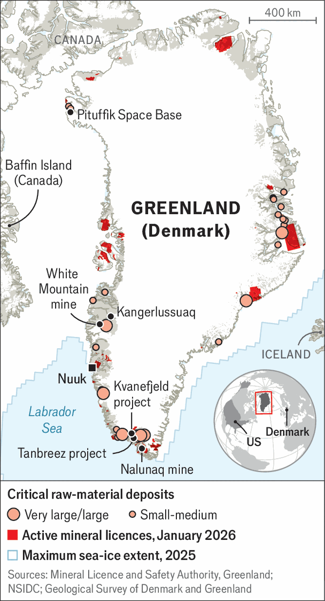
过去该岛拥有17个基地，如今仅剩一个位于皮图菲克的预警站（见地图）。金穹将依赖全球及太空的传感器网络。皮图菲克是关键节点，既用于追踪导弹，也用于与卫星通信。（欧洲航天局正在库格尔卢萨克建设自己的卫星地面站。）美国计划加强北极部队，但这些计划在很大程度上依赖与那些它正在疏远的盟友的合作，例如，美国正与芬兰合作建造新型破冰船。与此同时，皮图菲克基地的补给由一艘加拿大破冰船提供。特朗普试图掌控格陵兰的举措可能反而损害而非提升美国安全。同理，谈论收购格陵兰对格陵兰和美国的经济益处，纯属空想。
旅游和捕鱼业已发展为蓬勃的产业，曾经居高不下的失业率如今已微乎其微。投资持续增长。即便如此，格陵兰仍对丹麦构成财政负担，丹麦每年向该岛政府拨款近7亿美元，相当于格陵兰国内生产总值的约20%。这主要是因为格陵兰人是世界上最受补贴的人群之一。多数住房归政府所有，医疗免费。在约2.9万人的劳动力中，1.25万人受雇于政府。失业者可领取相当于最低工资90%的福利。实际上，四分之三的人口依赖政府。这一切使得美国以一次性付款收买格陵兰人的设想显得不切实际。丹麦的补贴每年每人超过1万美元。■
一些美国官员提出的以每位居民10万美元购买格陵兰岛的提议，实际上相当于丹麦福利制度的十年开支。尽管特朗普在达沃斯论坛上明确表示，美国需要格陵兰岛是为了国家安全而非其矿产资源，但其政府其他官员则指出，该岛拥有丰富的稀土和其他宝贵资源。然而，采矿繁荣的可能性极低。冰川覆盖了格陵兰岛约80%的面积，使矿场勘探和开发成本高昂且困难。该岛的交通基础设施匮乏：没有两条城镇之间有公路连接，限制采矿活动仅限于可由船只抵达的沿海地区。20世纪以来，至少有18座矿场关闭，往往因成本过高或物流问题。如今岛上仅有两座仍在运营的矿场。■
纳卢纳克（Nalunaq）是一座金矿，于2014年关闭，2024年因金价飙升重新投产。另一座白山（White Mountain）则生产一种名为anorthosite的矿物，是玻璃纤维和涂料的原料。该矿自投产以来便面临种种挑战。在早期阶段，该矿不得不从英国、丹麦等地雇佣工人，成本高昂（尽管如今约80%的员工为本地人）。“一切都很复杂，”运营白山矿的Lumina公司总裁马丁·哈内斯（Martin Hannes）表示，“特别是冬季的运输几乎不可能。”格陵兰岛的两个主要稀土项目在正式投产前就遭遇重重困难。位于格陵兰岛南部的Kvanefjeld稀土项目自2007年以来已投入超过1亿美元用于开发。2019年，项目方申请了采矿许可证。■
格陵兰政府因担心该项目可能将铀释放至附近的农田和峡湾而予以阻拦。另一家临近的稀土矿项目——塔恩布里兹（Tanbreez）的运营商表示，他们在2027年正式投产前将投入2.9亿美元。美国政府运营的出口-进口银行（Export-Import Bank）正在考虑为该项目提供1.2亿美元贷款。一旦投产，运营成本可能高昂：与其他地区的稀土矿不同，这里的矿藏储存在一种名为欧迪阿尔石（Eudialyte）的红褐色矿物中，从中提取稀土元素较为困难。目前尚无人商业性地处理这种物质。根据澳大利亚MinEx Consulting公司2016年的估算，北极地区开矿的成本可能比低纬度地区同等项目高出两到三倍。
例如，位于格陵兰以西、加拿大努纳武特地区巴芬岛的玛丽河矿（Mary River mine）自2014年起便开始开采铁矿石，但据称在2016至2019年间累计亏损达3.1亿美元。气候变化可能使部分物流变得更容易，例如延长海域无冰期。但同时也会带来问题。除最南端外，格陵兰大部分海岸线覆盖着永久冻土，这种土壤全年保持冻结状态。融化中的永久冻土已给其他国家的矿工带来困扰。2020年，俄罗斯矿业巨头诺里尔斯克镍业公司（Norilsk Nickel）的一座柴油储油罐因地基塌陷而坍塌，向河流湖泊泄漏了21000吨燃料。格陵兰的石油和天然气看似颇具吸引力，但开采这些资源将面临巨大挑战。■
格陵兰东部蕴藏着估计相当于300亿桶石油的资源，但该地区环境极端恶劣，连格陵兰本地标准都难以达到。曾勘探过格陵兰的石油巨头，包括壳牌（Shell）、Equinor和埃克森美孚（ExxonMobil），均已撤离。这表明即便美国获得格陵兰主权，也难以期待显著的经济回报，反而可能承担沉重负债。格陵兰地位的改变可能引发北约裂痕，使美国被迫独自承担防御成本。其现有唯一基地皮图菲克（Pituffik）的运营费用预计未来十年将达到40亿美元。任何大规模的防御设施扩建都将因北极地区建设难度而成本高昂。■
或许与建设北极新基地最接近的工程案例是玛丽河矿（Mary River mine），仅运输基础设施建设成本就高达125亿美元。一位美国官员估算，要在格陵兰岛建设并维护五个军事基地，成本将达200亿至300亿美元。再加上以现值计算的约100亿美元，用于未来30年持续支付丹麦对格陵兰岛居民的慷慨补贴，若美国接管格陵兰岛，这将是一笔明显不划算的财务交易。尽管这些成本看似多余，但对美国这样体量的经济体而言仍可承受，但此举对美国安全及国际地位造成的损害将是难以估量的。■
越仔细审视特朗普无疑视为世纪交易的房地产项目，就越会发现它与上世纪90年代和2000年代他在酒店和赌场项目上的诸多尝试颇为相似：初看光鲜亮丽，但因债务沉重、隐性成本高昂，最终大多沦为灾难。■
§011 简报原题：Western leaders navigate a lonely world · 板块：Briefing · 栏目：简报
中等规模自由民主国家正面临2026年可能成为孤立的一年。西方领袖们如今需要美国的保护，却不得不承受这位昔日盟友的嘲讽与威胁，如同侍从忍受年迈暴君的羞辱。要使这种孤立感更加彻底，当今另一股大国力量——中国，既不会也不会成为西方的替代盟友。加拿大总理马克·卡尼（Mark Carney）于1月20日在达沃斯世界经济论坛上发表公开演讲，呼吁中等国家在自愿结盟中合作。他直言：“我们正处于断裂而非过渡期。”
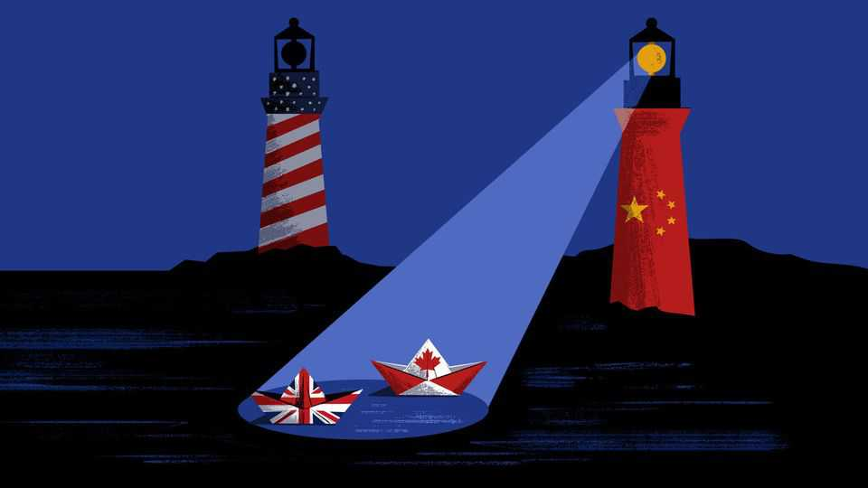
■
他指责那些最强劲的国家将经济、金融和供应链依赖关系当作武器。在大国竞争的世界中，处于中间地带的国家有两种选择：要么彼此争夺青睐，要么组建志同道合的集团以自保并管理风险，卡尼表示。对他而言，这意味着减少对美国的经济依赖。他提到已与中国和卡塔尔签署的战略伙伴关系协议。不过，卡尼并未声称中国能彻底解决对美国的依赖问题。中国以利益为导向、漠视价值观的做法，对波斯湾等地区的交易型中间国家具有吸引力。但对那些旨在维护基本价值观、尊重人权并“秉持原则且务实”的国家而言，卡尼的话，中国仅能提供部分缓冲。
加拿大央行行长卡尼于1月14日至17日访华期间表示，加拿大将以优惠条件进口49,000辆中国制造的电动汽车。这与美国试图将中国电动汽车排除在北美市场之外的100%关税政策背道而驰。加拿大于2024年加入该政策，屈服于美国作为加拿大逾三分之二出口品买家的影响力。作为对卡尼让步的回报，中国表示将增加对加拿大农产品和化石燃料等商品的采购，显示出改善过去十年间一度冰封的双边关系的意愿。尽管美国保守派评论员等曾轻率指责卡尼偏袒中国、对抗特朗普，但中国对卡尼的欢迎态度距离达成新的大交易仍有很大距离。■
卡尼在北京期间感谢中国建立了一个“为我们应对新世界秩序奠定基础的伙伴关系”。然而，中国领导人习近平并未回应卡尼的友好表态，而是简短地建议加拿大应基于尊重建立双边关系。中国官方媒体指出，过去双边紧张局势已向加拿大揭示了重要的“现实”。另一中等强国英国计划于1月下旬派遣首相访华。尽管已有八年时间未有英国政府首脑访华，但基尔·斯塔默的使命预期成果有限。在英国政府内部，有人认为斯塔默将为英国商业利益打旗号（预计会发布关于苏格兰威士忌或三文鱼的积极消息），并逐步恢复英国领导人应与全球第二大经济体保持接触的常规认知。■
他可能在低调地寻求在生命科学和绿色技术领域更深入的合作，尽管迄今为止中国投资仍受限于美国游说团体的阻挠，以及国内关于中国风力涡轮机或其他技术是否危及国家安全的争论。英国官员已做好准备，应对媒体对“凯尔屈膝”（Kow-tow Keir）向“中国独裁者”（Chinese tyrants）献媚的标题报道。此前已有预演，1月20日，反对党议员指责政府“投降”，因批准了中国在伦敦塔附近建设大型使馆的长期延迟项目。保守党议员和媒体纷纷抨击中国可能利用“巨型使馆”窃取靠近该地的通信电缆，或攻击英国境内的异见人士，甚至将部分人关押在使馆计划中披露的地下室房间内。■
民主国家的安全机构确实将中国的情报人员和黑客视为无与伦比的威胁，无论他们是否窃取机密、收买政客、窥探关键基础设施，或对海外中国公民进行监控和骚扰。但对“超级大使馆”的恐慌是错误且无力的。中国并不需要外交场所才能入侵电缆，它可以从租用的仓库中完成。英国的网络情报机构堪称世界一流，认为中国计划中的设施是可管控的威胁。若中国在大使馆地窖关押囚犯，将是极其危险的举动。更简单地说，允许一个大国建造大型大使馆，恰恰体现了自信而非屈服。■
20世纪30年代末，英国容忍了纳粹德国在梅格巷上空的宫殿式大使馆，尽管其大使乔阿奇姆·冯·里宾特洛普因追求绥靖派贵族并向希特勒行礼而遭人憎恨。尽管国内政治在一定程度上解释了基尔爵士在中国的低调议程，但低野心也具有结构性特征。若英国希望对特朗普式的霸凌行为进行对冲，中国几乎无济于事。英国对美国最严重的依赖涉及核威慑、战斗机和包括云计算在内的数字服务等资产。英国与其他西方国家一样，短期内不会购买中国武器或数据存储服务。即便在更温和的领域，中国将供应链武器化的记录也使得将对美依赖转为对华依赖变得无济于事。■
如果对冲如此困难，自由民主国家是否能通过威胁违背美国并更紧密地与中国站在一起，从而获得地缘政治优势？主要障碍是中国方面的谨慎态度。北京官员们蔑视地提到，他们曾相信西方领导人关于减少对美国依赖的承诺，结果却目睹这些领导人在美国发出警告后仍选择顺从。对习近平而言，如同对特朗普一样，权力才是关键。在当今美国中等盟友感到孤立的时期，中国并非救世主。■ 更正（1月21日）：中国新设的伦敦大使馆所在地附近有通信电缆，而非直接位于其下方。致歉。《经济学人》订阅者可注册我们的Opinion电报，汇集了最佳的社论、专栏、特稿及读者来信。
§012 读者来信原题：Could Europe take on Russia without American help? · 板块：Letters · 栏目：读者来信
请通过电子邮件发送信件至letters@economist.com 了解我们如何处理您的信件 我读了大卫·乔伊和道格·查尔默斯关于欧洲能否在没有美国帮助的情况下对抗俄罗斯的专栏文章（《邀请函》，1月5日）。我担忧作者们使用虚构情景，聚焦于俄罗斯可能侵占拉脱维亚领土的假设性冲突。这种情景遵循一种模式，即选择靠近俄罗斯边境的某个地点，无论是达维普尔斯、纳尔瓦还是苏瓦尔基走廊，来展示与俄罗斯潜在冲突的可能性。 ■
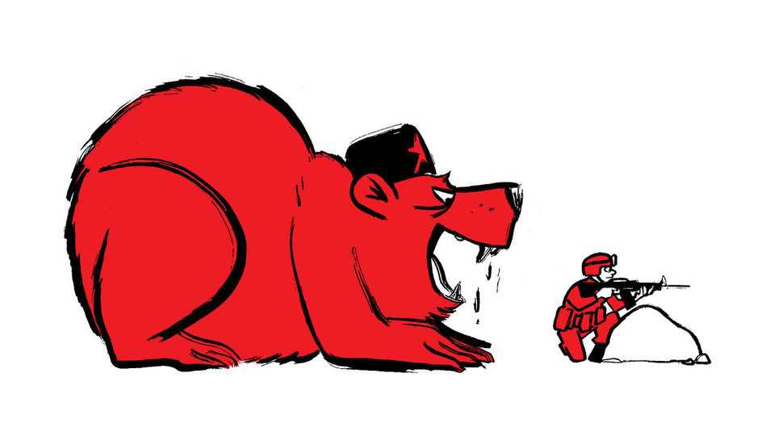
2014年春季，随着俄罗斯非法吞并克里米亚，大量假设性情景被反复刊登。如今这些情景显得尤为空洞，因为它们忽视了波罗的海国家在安全与防务能力上的重大进展。过去十年间，拉脱维亚（与爱沙尼亚、立陶宛，以及波兰和芬兰类似）在军事基础设施、边境安全及与北约部队的协同作战能力方面进行了大量投入。拉脱维亚的国防开支在过去几年一直保持在GDP的2%以上，2026年将达到GDP的5%。这种对能力的实质性投资，加上北约多国部队在我国内的显著存在，构成了安全与威慑的坚实框架。■
如果该专栏的意图是提高更广泛欧洲受众对增加军事开支必要性的认知，那么我认为这一场景偏离了重点。提及波罗的海国家的几个区域性城市，对伦敦普通市民而言很难以令人信服的方式展现威胁。这种做法甚至可能适得其反，被企业视为评估波罗的海地区机遇时的警示信号。更有效的方式应是探讨所有盟国当前面临的共同挑战，例如网络威胁、混合战争或破坏行动，以及全欧洲加快国防支出的迫切需求。北约2025年峰会上达成的国防投资承诺具有历史意义。现在是兑现承诺的时候了。马里斯·里埃克斯坦斯 拉脱维亚驻北约大使 布鲁塞尔■
我接受您对诺和诺德在减肥药市场落后原因的解释（《一夜成名的诅咒》，12月20日）。但这家药企与泡泡玛特（及其令人费解却成功的Labubu娃娃）并不可比。泡泡玛特成立16年，没人知道它是否能撑过下一个十年。诺和诺德已进入第二个世纪，由一家以诺和诺德的稳定性为主要目标的慈善机构控制，同时致力于医学研究。您未提及增长或股东价值；但它们仍随之而来。无论如何，成为历史上最大药品市场的第二名难道就那么糟糕吗？20世纪大部分时间里，埃利利（Eli Lilly）都是胰岛素市场的领头羊。■
■丹麦的乌龟（Novo）却执着于生产更高质量的胰岛素，或许正是由于其非财务目标，最终摘得桂冠。希望诺和诺德现任管理层能同样专注于下一个世纪而非下个季度。Faisal Sheikh 蒙茅斯资本 首席执行官 伦敦 你指出人工智能正在缩短新药研发路径（“想象力工厂”，1月10日）。然而，这场革命尚未惠及癌症患者。肿瘤学临床试验仍像一场彩票，患者将健康乃至生命储蓄耗尽在可能从未对自身生物学特征有效的疗法上。你描述的合成患者（或数字孪生）技术代表了进步，但其根本局限在于无法充分考量个体的生物复杂性。
当前医疗方法通过人口统计和病史来匹配患者，本质上是利用高科技筛选历史类似案例。但两名临床特征完全相同的患者对同一种药物的反应可能截然不同。这是因为临床特征反映的是患者本身，而非其肿瘤；反映的是患者过往病史，而非未来发展趋势。通过建模个体肿瘤的分子机制，而非依赖历史对照组，人工智能能更有效地预测哪些疗法在首次用药前就可能奏效，无论是在临床试验还是常规治疗中。这种模式要求临床医生、研究人员、资助方和监管机构共同承诺，优先推进机制性理解而非人口特征匹配。■
Dr Irina Babina首席执行官ConcrBath
AI设计的分子在早期安全试验中显示出80%-90%的成功率，远高于历史平均的40%-65%。这对负责这些早期试验的初创公司来说是个好消息，但不会大幅降低药物获批的总成本，因为大部分资金支出发生在后期阶段。随着潜在药物在研发管线中推进，风险大幅上升。如果AI能在后期阶段提高成功率，将显著降低成本。正如你所说，要等到数年后才能验证这一点。阿什利·穆伦（圣地亚哥）“长达十年的爱恋终告结束”（12月20日）探讨了世界对酒精的钟爱可能终结的方式。这值得在历史上饮酒重要性方面添加注脚。彼得大帝不仅饮酒，更将饮酒制度化。■
军事改革和法院任命是在漫长的欢乐聚会中解决的。塔列朗（Talleyrand）饮酒成瘾，也确保其他人同样如此。拿破仑战争后的欧洲大部分地区并非在会议厅中，而是在浸泡着勃艮第红酒和香槟的晚宴上重新安排。安德鲁·杰克逊（Andrew Jackson）的就职典礼上，公众和酒精同样受到欢迎，但最终演变为醉酒骚乱，永久改变了美国政治仪式。布尔拉赫，瑞士（Bülach, Switzerland） 我同意巴贝奇（Babbage）（12月24日）的观点，认为《银翼杀手》（Blade Runner）是一部具有里程碑意义的科幻或哲学电影。另一个关键情节转折是，许多人认为主角里克·德卡德（Rick Deckard）本身是一名合成生物（而非机械）人类或复制人，却对此毫不知情。因此，该电影的核心残酷之处在于，一个复制人被派去杀害其他复制人。■
所有同事都清楚这一点，这也是他们蔑视他、拿纸折和火柴棍做的独角兽戏弄他的原因，这指的是复制人所拥有的基因工程造梦。德卡德实际上是个奴隶，不知晓自己的出身，追捕着与他处境相似的复制人，他们因生物定义的自由缺失而被束缚。《银翼杀手》中关于操控、无约束的企业或权威权力以及个人权利的哲学主题，随时间推移而愈发凸显，而非减弱。道格拉斯·哈金博士 墨尔本 除了你提到的高强度间歇训练计划（Well Informed，1月10日），5BX健身计划也是一种塑形的好方法。该计划于1950年代为加拿大空军开发，仅需11分钟，高强度且无需间歇，不涉及负重。■
我59岁时曾坚持四个月训练，当时身体状态达到最佳。虽然过程并不轻松，但结合步行训练，我成功减重了37磅（16.5公斤）。——泰德·布洛姆菲尔德 加拿大里士满
在本人经验中，《经济学人》1月3日刊发的“如何为马拉松训练”一文，最佳建议是穿着印有自己名字大字的衬衫。无论你的训练配速是快是慢，到了18英里处，再没有比完全陌生人为你加油“加油，乔纳森！”更有效的事了。——乔纳森·布里厄尔 纽约
你关于自助书籍的报道让我想起彼得·德鲁克（管理顾问界泰斗）曾说过一句妙语（《自我沉迷》，1月3日）。德鲁克用一句俏皮话同时讽刺了两个群体：他指出记者将自助书籍作者称为“大师”，是因为他们拼写不出“江湖骗子”这个词。——彼得·苏特斯 南非布雷达斯多普
■
§014 亚洲原题：The remarkable recovery of Narendra Modi · 板块：Asia · 栏目：亚洲
16个月前，纳伦德拉·莫迪显得沮丧。在刚刚失去全国选举多数席位后，这位印度领导人不得不依靠地区政党。其联盟对艰难改革缺乏热情。一些评论家断言这是“莫迪巅峰”。潜在继任者开始密谋。如今形势大为不同。莫迪的联盟赢得了多项州选举，反对派陷入混乱。其政府重新找回了干劲。去年，政府宣布大幅简化印度的商品与服务税，并改革了其繁复的劳动法。■
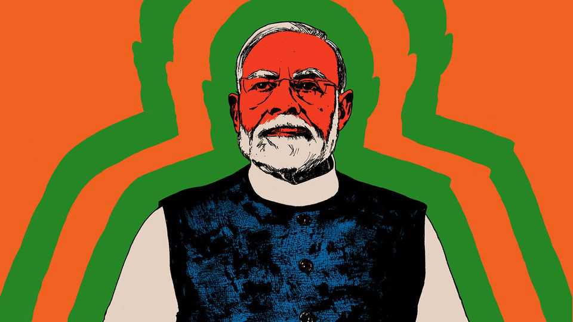
印度正放松核工业监管、推动蓬勃发展的电子产业并签署贸易协定。印度经济表现远超预期。75岁的莫迪（Modi）已担任最高职务近12年，如今预计将在2029年再度参选。总理的目光瞄准了贾瓦哈拉尔·尼赫鲁（Jawaharlal Nehru）创下的任期纪录，若能实现将在2031年超越。他也在思考自己的历史地位。其中仍突出的是一个鲜明的文化议程，旨在重振印度，特别是印度教的自豪感。然而，随着印度面临日益增长的国际压力，他更将重心放在推动经济发展上，以实现2047年跻身发达国家行列的目标。要了解莫迪如何反弹，可从那场艰难的选举结果开始。■
印度人民党（Bharatiya Janata Party，BJP）在下议院的席位数从303席降至240席（共543席），莫迪曾宣称将超过400席。然而，事后分析称这预示着联盟政治新时代的到来，这种局面曾持续25年，直到2014年印度人民党获得绝对多数。但这些分析并未准确反映现实。印度人民党的得票率仅下降不到1个百分点，从37.4%降至36.6%。其唯一全国性对手国大党（Congress party）得票率仍仅为21.2%。即便如此，印度人民党仍迅速总结经验。选举期间，通货膨胀率维持在5%（过去一年洋葱价格飙升50%）。政府已采取措施改善粮食供应与分配。不过，党内高层并未因此将2024年选举结果解读为削减印度教民族主义的信号。■
在集会上，莫迪及其同僚仍使用尖锐分裂的言论，往往针对印度穆斯林的排外情绪。但政府迄今未推出多项激化矛盾的新举措。此前有担忧称可能出台更多拆除清真寺建寺庙的计划，如莫迪于2024年1月在阿约提亚为一座寺庙举行祝圣仪式时曾引发类似争议。在基层印度教组织全印自力更生协会（Rashtriya Swayamsevak Sangh）内部，许多成员希望莫迪兑现承诺，推行统一民法——这是印度教民族主义长期追求的目标，实质上将废除穆斯林家庭法。截至目前，莫迪尚未迈出这一步。相反，他将运动重心转向了“让印度强大”的理念。这一策略也受益于严峻的外部环境。■
5月，印度在克什米尔发生一起血腥恐怖袭击后，与巴基斯坦爆发了为期四天的空袭与导弹冲突。这使总理得以扮演爱国强人角色。8月，唐纳德·特朗普又对印度加征额外25%关税（此前已征收25%），以此惩罚印度使用俄罗斯石油。这些关税正在打击印度出口商，从钻石切割工到服装制造商。你可能会认为莫迪因处理不好印度最大的贸易伙伴而受到指责。但大多数印度人却支持他对抗特朗普的立场。他还将外部压力作为改革的借口。他主张，若要让印度制造商具备竞争力，必须释放劳动力、降低电力成本。削减贸易壁垒同样重要。本月峰会上，印度希望与欧盟达成协议，终于能敲定这项交易。■
莫迪领导的联盟在这一过程中展现出出人意料的稳定性。他的盟友大多是小规模的地方政党，他们乐于以忠诚换取资源支持。他们在某些领域遏制了印度人民党（BJP）的倾向，例如在统一民法典问题上。反对派的弱势也使得艰难的经济改革变得更容易。针对新劳动法的抗议声势被有效遏制。在选举方面，执政联盟展现出无情的攻势。在11月比哈尔邦州选举前夕，约210万女性选民的银行账户中转入了10,000卢比（约合110美元），该计划名义上是支持企业家。尽管这种交易性买票行为在法律上是允许的，但其挑战了选举规范，并将加重政府财政负担。印度国大党领袖拉胡尔·甘地则提出了不同的解释。■
他指控政府实施“选票诈骗”，并声称印度人民党（BJP）正在全国范围内操控选举。确实，政府削弱了印度选举委员会的独立性，且选举监督者报告了一些不规范现象。此外，莫迪确实展现出专制倾向。值得注意的是，自他上任以来，对政客的刑事调查数量增长了四倍；2022年的一项调查发现，约95%的涉案人员属于反对党。然而，甘地并未提供广泛舞弊的证据，分析师也未发现确凿证据。这一指控可能沦为国大党的政治工具。按任何标准衡量，莫迪仍是真正受民众支持的领导人，约70%的印度人认可他。■
甘地先生未能在2024年的成果基础上，构建出有力的批评或属于自己的经济与文化平台。施里纳德大学（Chennai）的拉胡尔·维玛表示，甘地先生是莫迪最出色的竞选搭档。莫迪先生的主导地位并不稳固。包括喀拉拉邦、泰米尔纳德邦和西孟加拉邦在内的多个邦将在今年春季举行选举。这些选举将比比哈尔邦的选举更具挑战性。尽管通胀已有所缓解，但人们对就业不足的不满情绪依然存在。关于零工经济从业者工作条件的抗议活动已引发。更强大的反对派将有助于监督政府履行职责。但目前莫迪仍占据上风。希望莫迪总理能认识到，推动经济增长是巩固其政绩的最佳途径。如果他能做到这一点，他第三个任期或将通过加速国家经济增长，显著改善印度人民的生活。■
订阅Essential India，我们的免费每周通讯，随时掌握印度相关报道。■
§015 亚洲原题：Japan’s popular new prime minister gambles on a snap election · 板块：Asia · 栏目：亚洲
田中真由子的自信可谓空前。自去年10月执掌执政的自由民主党（LDP）并成为日本首位女性首相以来，其内阁的支持率在多数民调中持续超过70%。1月19日，上任不足百天之际，她在记者会上证实了日本媒体长期流传的传闻：她将提前举行日本众议院选举，定于2月8日举行。此次选举将成为日本战后最短的选举周期。而距离上一次选举也不过一年多时间。■
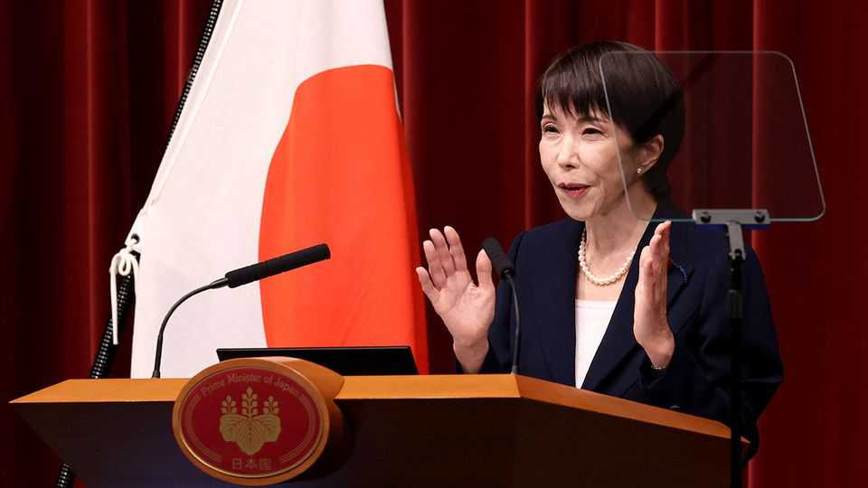
高桥真美（见图）表示，必须给予选民机会批准她的领导地位及其在当选日本自民党（LDP）领袖后组建的新执政联盟。“让人民决定是否由高桥真美担任首相”，她宣称。她承诺推行激进的产业政策，并推动改革以增强日本的国防能力。她还呼吁减税并结束“过度紧缩”。她扩张性议程可能获得强有力授权的前景，令债券市场震荡，日本长期债券收益率达到历史高点。高桥真美押注自己能在人气尚存时巩固权力。她希望带领自民党在众议院获得比目前与执政联盟伙伴共同拥有一席优势更强的席位优势。■
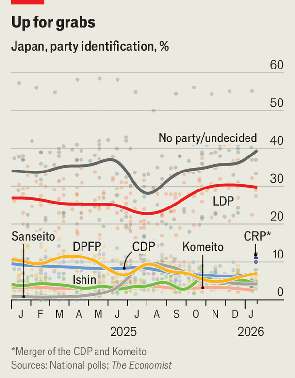
问题是她的个人魅力是否足以帮助其政党（该党派人气不如她本人）抵御新反对联盟及民粹组织的挑战。岸田文雄直率的言论与平民出身的背景，与此前男性领导人的个性形成鲜明对比。在30岁以下选民中，最近一项民调显示其政府支持率超过90%。截至目前，她的主要政策成果包括一项充满各种福利的补充预算，旨在缓解通胀带来的痛苦，以及巧妙应对外国领导人访日，包括唐纳德·特朗普。在最近一次涉及台湾的外交摩擦中，她顶住中方压力的表现，可能也进一步巩固了她的地位。但岸田文雄深知，这种赞誉可能转瞬即逝。而那些尊重她的人，未必支持她的政党。■
自民党（LDP）长期以来主导着日本政坛，但近年来丑闻损害了其形象。在大岛聪被选为党首后，自民党长期的联合执政伙伴公明党（Komeito）结束了长达26年的合作。恶性通胀以及社交媒体在竞选中的日益重要，也使日本政治竞争更加激烈。自大岛聪担任党首以来，自民党的支持率略有上升，达到约35%。这一数字远高于日本其他政党的支持率。但与2024年10月众议院选举时的水平基本持平——那次选举中，自民党最终失去了绝对多数席位。大岛聪决定提前举行选举的做法让党内一些资深成员感到担忧。“我对解散的时机感到有些困惑，”自民党重量级人物大岛聪承认道。■
自民党反对派正伺机而动。以宪政民主党为首的中左主要反对党本月与公明党联手组建了名为“中间改革联盟”的新派系。该联盟令部分自民党成员感到不安，主要因为公明党获得日本佛教团体“创价学会”（Soka Gakkai）支持，而该团体在部分地区具有关键影响力。新兴民粹派政党则构成另一重威胁。以“人民民主党”（Democratic Party for the People）为代表的中派民粹政党，以及右翼极端民族主义团体“自己动手党”（Sanseito），在过去两次选举周期中均取得显著进展。但自麻生太郎上任以来，这两党民调均出现下滑。然而推动其崛起的深层因素——尤其是移民担忧与通胀问题——依旧十分强劲。■
如果自民党能在众议院重新获得绝对多数席位，高桥女士将更有余地推进其政策主张。市场认为这一可能性较高，这从债券市场的波动中可见一斑。然而，高桥女士似乎对风险并无任何幻想。她表示，已将自己作为首相的地位置于险境。■
§016 亚洲原题：Who really won the war between India and Pakistan? · 板块：Asia · 栏目：亚洲
战争迷雾往往让人们难以看清冲突期间的真实情况。有时，这种模糊性甚至会在枪声停息后仍持续存在。这正是去年5月印巴之间四天边境冲突的现状。这位作者最近采访了多位印度军方和安全部门官员，探讨该国从“辛杜尔行动”中吸取的教训。这些观点与巴基斯坦方面得出的结论截然不同。这种分歧大大增加了两国下次爆发冲突时误判的风险。
■
去年的危机始于与巴基斯坦有关联的恐怖分子在印控克什米尔屠杀26人。两周后，即5月7日，印度对巴基斯坦境内与极端组织有关联的九处地点发动空袭，其中包括旁遮普省的一些地区，该省是该国人口最多的省份。这比2019年印度在上次冲突中发动的空袭更为激烈，当时仅打击了有争议领土中的一个地点。双方在5月10日宣布停火前，曾互射无人机和导弹。双方都宣称取得某种胜利。印度似乎成功摧毁了最初设定的所有目标（2019年时，印度被认为未能击中）■
“复杂而创新的导弹攻击”于5月10日发动，克里斯托弗·克拉里（Christopher Clary）在一份针对华盛顿斯蒂姆森中心（Stimson Centre）智库的详细报告中写道，该攻击“似乎已基本克服了巴基斯坦的防空系统”。相比之下，他指出，当天巴基斯坦发射的多数或全部弹道导弹要么偏离目标，要么被拦截，这从缺乏证明其造成重大损害的卫星图像中可推断得出。然而巴基斯坦仍可合理宣称，此次冲突中己方付出高昂代价。5月7日冲突首日，巴基斯坦击落了数架印度战机——可能多达五架。更重要的是，它从军事失利中抢得外交胜利。印度至今仍对唐纳德·特朗普反复声称通过威胁双方征收关税而结束危机的言论感到愤怒。■
他们也因特朗普公开拥抱巴基斯坦陆军参谋长阿西姆·穆尼尔（Asim Munir）而愤怒。在冲突后，穆尼尔晋升为陆军元帅，巩固了国内权力，并精明地提名特朗普角逐诺贝尔和平奖。人们或许可以猜测，印度下次会更加谨慎。自冲突以来，由于关税争端、印度购买俄罗斯石油以及特朗普对停火协议的炫耀，印美关系已恶化。同期，巴基斯坦则加深与美国的联系，并与沙特阿拉伯签署了一项雄心勃勃的防务协议。一名官员表示，停火当日，西方政府“仅差数小时”就将建议公民避免前往印度旅行，这本会令印度企业恐慌。然而《樟树》（Banyan）在德里的对话显示，许多印度人对此看法截然不同。■
印度官员认为，到5月10日，巴基斯坦已处于劣势。一些人认为，巴基斯坦当天未能突破印度防线，证明其选择已所剩无几。“这次我们同意暂停，”一名印度军方官员表示。“下次，我们期望的最终状态可能更为强硬。”印度官员并未否认未来冲突可能升级为核战争的风险，但他们强调自己对底线有清晰认知。一名官员解释称，印度拥有“升级矩阵”，详细列明哪些目标可能引发何种回应，哪些则可能触及红线。“从那场战斗中，我们吸取的重要教训之一是，常规与核武器之间存在空间，”另一名高级官员表示，“有足够的余地可供操作。”当然，其中部分表态或许只是气势。■
任何战争中，各方都有动机夸大自身战果、淡化损失，至少是为了增强威慑力。但印巴双方对此次冲突的认知却存在巨大鸿沟。巴基斯坦可能认为印度在下次冲突中更可能率先让步，美国将迅速介入，战后外交谈判仍将偏向巴基斯坦。一些印度人则认为本国在5月10日同意停火是错误的，应继续施压。所有这些表明下一次冲突可能更加难以预测，也更加危险。■ The Economist的订阅者可注册我们的Opinion通讯，汇集本刊最佳评论员文章、专栏、特稿及读者来信。
§017 亚洲原题：Homegrown apps are making dating in India less awkward · 板块：Asia · 栏目：亚洲
想象一下，你带着网恋对象去赴第一次约会，结果发现对方带来了自己的母亲。在印度，这种经历并不少见。该国独特的约会文化催生了本土的约会应用——至少这是众多创业者的看法，他们试图通过这些应用将孤独的心灵与金钱联系起来。据一项统计，印度已有超过2500家婚恋交友初创企业，可能是全球最多的。从纸面上看，印度是婚恋交友公司的热门市场。该国拥有14亿人口，平均年龄为30岁，移动数据价格低廉。知名西方约会应用大约十年前开始进入印度，当时充满期待。
他们成功吸引了用户，却难以从婚恋市场中获利。过去18个月，一些大型外国应用开始有意识地与印度脱钩。印度企业家认为，这并不令人意外，毕竟这些应用原本是为外国市场设计的。在约会领域，许多年轻印度人感到自己夹在传统与现代之间。大量年轻人仍接受父母安排的婚姻，部分人甚至在婚礼前仅与未来配偶见几次面。如果他们曾在线寻找爱情，很可能是在父母监督下进行的。而新的世界则呈现另一种景象，印度人正试图掌控自己的爱情生活。■
广泛约会颇具吸引力，但实际操作中却充满隐患。"印度的流行文化实际上美化了诸如跟踪这样的行为。看看我们的电影就知道了，"曾任职于婚恋匹配公司Bumble的萨马尔皮塔·萨马德（Samarpita Samaddar）表示。在印度，许多西方约会应用被视为寻找随意性关系的工具（这在印度人看来属于禁忌）。而本地开发的约会应用则瞄准一个被称为"相亲结婚"的市场。Fluttr便是其中一款应用，其目标用户是二三线城市的有抱负的年轻人。Fluttr创始人卡苏克·班纳吉（Kaushik Banerjee）表示，这些用户已不再接受父母为他们挑选的伴侣，但他们"完全与西方应用文化脱节"。为触达印度英语精英阶层以外的用户，Fluttr提供七种语言版本。不擅长情话？AI工具会为那些口拙的追求者代笔创作情诗。■
用户无需担心遭遇粗俗的性暗示；一款脏话过滤系统有助于保持聊天的纯洁性。竞争对手Juleo（朱利奥）也承诺安全：它声称利用印度政府备受推崇的数字身份系统，以确认所有高大英俊的花花公子是否真的是他们声称的身份。因此，印度初创企业是否已找到盈利之道？尚未。就连运营了数十年的传统婚恋平台也似乎难以实现巨额利润。问题在于，印度人“对痛苦的忍耐力极高，以至于会为了免费应用而忍受一切”，关系教练Simran Mangharam（西姆兰·芒哈拉姆）解释道，她曾运营过现已停运的印度约会网站Floh。“我们只在真正撑不住时才会付费。” ■ 订阅我们的免费周报Essential India，以掌握印度最新动态。
§018 亚洲原题：Ageing farmers threaten South-East Asia’s growth · 板块：Asia · 栏目：亚洲
很少有父母希望子女最终从事农业劳动
本月，马来西亚推出了针对年轻创业者的补贴计划。但该国重新启动的创业计划并非面向普通科技人才：它只面向那些喜欢弄脏鞋底的人。其目标是吸引更多年轻人投身农业——马来西亚并非孤例。印度尼西亚、菲律宾和泰国也推出了类似的农业计划。多年来，东南亚各国政策制定者一直在推动工人从农田转向工厂。如今他们面临的新问题却是：从事农业的人口正在老龄化。马来西亚的平均农民年龄为60岁，菲律宾则为56岁。
■
从整个东南亚地区来看，三分之一的农业工人年龄在55岁或以上——这一比例较十年前不足五分之一显著上升。从某些角度看，这反映了积极趋势。由于大量年轻人在城市找到更好的工作，农村劳动力出现短缺；同时，因农村医疗条件改善，留守人群寿命延长。然而，农村人口老龄化正威胁着一个关键领域：该地区各国农业部门贡献GDP占比达9%-22%，并吸纳约30%的劳动力。随着农民年龄增长，其生产率往往下降。关节老化并非唯一隐患：年长农民更少尝试新型种子品种或新设备。2024年发表的一项针对中国农民的研究发现，老龄化与生产率下降相关，因年长农民更少采用新技术。■
一些政府担心，这些因素可能危及粮食供应。亚洲开发银行（ADB）的Aiko Kikkawa表示，东南亚并不缺粮食。但她警告称，粮食安全风险必须被认真对待，尤其是在贸易战日益加剧的背景下。解决办法之一是确保农民拥有合适的工具，并接受培训以在年事渐高时仍能保持高产。东南亚的农民往往耕作的土地规模过小，难以积累资金用于机械化。改善信贷获取或机械租赁方案将有所帮助。增加培训同样重要。政府也在试图吸引年轻人重返农业领域。但这样做可能收效甚微，而且实际操作难度很大。城市工作不仅薪酬更高，还赋予更高的社会地位。■
许多家长希望孩子远离农活：2020年一项针对菲律宾稻农的调查显示，约三分之二的家长不希望子女继承父业。要使农业成为更具吸引力的职业，农场必须扩大规模——以实现规模效应、证明购置机械的投资价值并提高收入。据亚洲开发银行（ADB）研究，日本通过整合农田部分缓解了农业人口老龄化问题。然而在东南亚，这一挑战将更为严峻，因为该地区土地持有量本就更为分散。小农户往往缺乏养老金，他们仍紧抓土地作为对不可靠社会保障体系的对冲手段。随着生育率下降和预期寿命延长，东南亚其他行业也可能面临同样的人口结构挑战。■
官员如何应对老龄化农民，将为他们处理更广泛的老龄化趋势提供线索。■
§019 特朗普的冒险主义令中国不安原题：Donald Trump’s adventurism is unsettling China · 板块：China · 栏目：中国
去年审视其地缘政治成绩单时，习近平有理由感到乐观。中国领导人在美国对华贸易战中顶住压力，于阅兵式上描绘新世界秩序蓝图，并阻挠试图将一家总部位于香港的公司从巴拿马运河港口驱逐的行动。如今，对习近平而言，局势更加令人不安。美国在委内瑞拉逮捕尼古拉斯·马杜罗，使中国失去了南美最亲密的伙伴和该地区最大的军售客户。此举还影响中国约4%的原油进口，并可能迫使中国核销约100亿美元贷款。
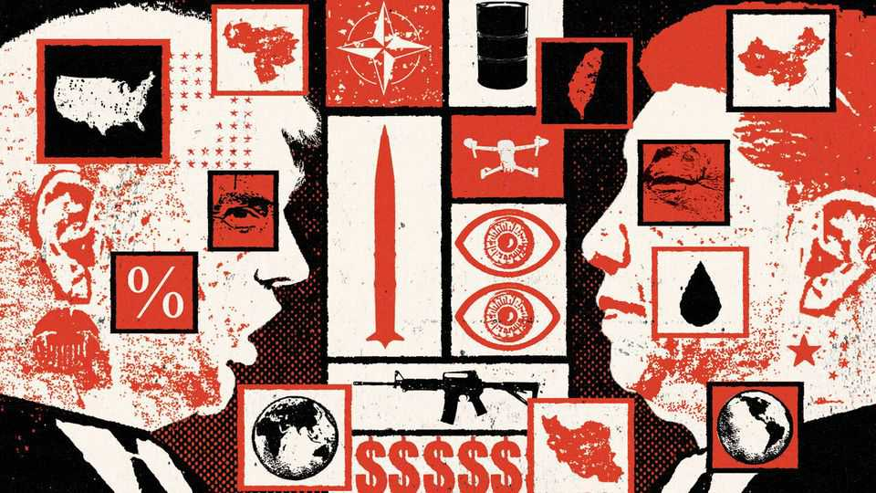
■
特朗普威胁限制中国在西半球的存在，使中国其他利益面临风险，包括港口、卫星地面站以及数十亿美元的贸易。与此同时，在伊朗，美国主导的制裁与军事威胁引发的动荡正动摇另一专制政权。伊朗去年曾为中国提供12%的石油进口，支撑着中国在中东的影响力。习近平可能希望特朗普的冒险主义最终适得其反，使美国陷入多起危机，从而分散其对中国关注的精力。若美国重启对格陵兰的争夺，中国将乐见（可能致命）的后果，损害北约及美欧关系。但如同美国的西方盟友，中国如今也明白安抚特朗普并不能保证其日后保持克制。■
习近平不愿在缺乏对美国意图更明确认知的情况下，牺牲更多中国利益。中国领导人因此面临前所未有的两难处境：是更坚决地反制美国的胁迫，以保护远在海外的利益？还是牺牲全球影响力，寄望与特朗普达成协议，以应对中国更紧迫的优先事项——经济问题，以及或许两岸统一进程？两位领导人今年至少会晤三次，包括4月在北京举行的峰会。尽管中国军力持续增强，但其缺乏发动拉美或中东武装干预的能力，也无力向友好政府提供足够武器以确保其生存。■
中国对拉美和亚洲地区的军售仅占其全球军售的很小比例。增加军售需要时间，以及买家的大额资金投入，或中国不愿提供的大规模贷款。此外，作为中国在南美最大武器买家的委内瑞拉，如今已成为其他潜在买家的警示案例，因其中国制造的防空雷达似乎未能达到预期效果。不过，中国仍有其他手段可以阻碍美国的目标。特朗普政府承诺将中国排除在委内瑞拉的石油行业之外。但目前已有中国工程师和技术人员在该行业运营，可能需要他们来稳定并提升产量。其中一家中资合资企业单独就占委内瑞拉产量的10%以上。■
中国近年来作为委内瑞拉最大原油买家的地位，也赋予习近平一定的谈判筹码，鉴于特朗普政府已允许部分原油销售恢复。毕竟，全球对委内瑞拉粘稠含硫原油的需求有限。中国企业在委内瑞拉关键基础设施的其他领域也深度参与，例如其移动通信网络依赖华为和中兴两家中国电信巨头的技术。中兴还开发了委内瑞拉的“祖国卡”系统，用于追踪选民模式、监控社交媒体和配给食品。另一家中国企业向马杜罗政权提供了网络审查系统。美国干预的讽刺之处在于，尽管没有恢复民主的计划，它如今却依赖这种压制性中国技术来维持政治稳定。■
在拉丁美洲其他地区，中国可采取措施提升友好政府的稳定性。这可能包括提供更多设备和培训，以帮助保护领导人、加强情报工作并强化执法。近年来，中国已在该地区采取过类似举措。此外，中国还可分享更多情报，并利用其通过社交媒体操纵舆论的能力，煽动反美情绪。在伊朗，中国也可增强政权维持控制的能力。在最近的骚乱之前，中国已悄然帮助扩展了监控体系，利用无人机和人脸识别软件。中国公司还加强了伊朗的互联网管控，该政权已利用这些手段实施通信封锁。
除非伊朗政权被推翻，否则这种合作很可能会持续，中国中东问题专家范红达（Fan Hongda）表示。更直接遏制美国在中东行动的方式可能是通过也门胡塞武装，该武装受伊朗支持，其导弹和无人机袭击红海航运，导致全球贸易中断达2023年至2025年。尽管中国始终否认支持胡塞武装，但美国指责中国公司协助该武装获取无人机部件和卫星图像，以锁定美国军舰和国际商船。然而，如今公开阻碍美国目标的危险似乎更大。■
中国学者正迅速重新评估特朗普对风险的偏好。“我们传统上认为，在扩张阶段，美国可能会采取类似伊拉克和阿富汗的大规模入侵行动，”近期在电视采访中，中国国家安全委员会相关智库的拉美问题专家孙燕峰（Sun Yanfeng）解释道。他指出，委内瑞拉行动表明“美国行使霸权的方式及其战术已发生重大变化”。这将影响中国在4月可能与特朗普会面的策略。在抵制美国关税攻势后，中方官员曾自信能就贸易协议达成相对有利的条件，甚至可能在台湾问题上达成新共识。两者仍有可能实现。■
任何协议的可行性也可能取决于中国在多大程度上抵制特朗普政府的全球计划。一个潜在的变数是特朗普最近威胁要对与伊朗贸易的国家征收的25%关税。那么问题在于这些全球计划的范围有多大。北京中国人民大学国际关系专家金灿荣（Jin Canrong）撰文指出，美国今年仍有可能对伊朗发动军事打击。他认为特朗普政府将加大对古巴、哥伦比亚、尼加拉瓜和巴西（再次）等左翼政权的压力，并预计美国也会在非洲攫取更多资源，或至少阻止中国获取这些资源。尽管代价高昂，但若能换取自身的影响力范围，中国仍可能承受得起。■
美国未必能在所有行动中取得成功。即便成功，它所针对的许多政府仍需与中国开展业务往来。但默许这种做法将意味着对习近平全球战略的大幅调整。如果最终发现美国意图主导西半球，同时拒绝中国在亚洲的主导地位，那么习近平的克制可能反而成为代价高昂的错误。 ■ 订阅者可注册我们的新周刊《鼓楼》，了解世界如何看待中国，以及中国如何看待世界。
§020 中国原题：Which Chinese provinces splash their cash? · 板块：China · 栏目：中国
终于，中国政府希望提振国内消费。截至目前，成效并不明显。1月19日发布的数据显示，2025年GDP增长5%，主要得益于出口的强劲增长。而家庭消费增速仅为4.2%，落后于GDP增速。中国某新闻网站的标题问道：“到底还有谁在花钱？”文章展示了一张引发热议的图表：中国各省被划分为“敢花”、“乐花”、“谨慎”或“害怕”消费的类别。确实，各地区的消费习惯差异显著。■
黑龙江（Heilongjiang），这片位于北方的寒冷省份，人均可支配收入为31,000元（约4,453美元），其中75%被挥霍一空；而位于西部的雪域西藏（Tibet）居民收入相近，但仅61%用于消费。将地区划分为挥霍者与吝啬者是个颇具吸引力的思路，尤其因为这可能为提振消费政策指明方向。要实现这一目标，关键在于弄清造成差异的原因，以及哪些因素能“有力推动消费”，并明确其地理分布。《经济学人》已尝试进行此类分析。我们首先考察各地区居民的消费意愿。图表1展示了消费收入占比与收入水平的关系，呈现出预期趋势：收入越高的省份，其消费占比越低。不过引人注目的是，这一趋势存在显著偏离。■
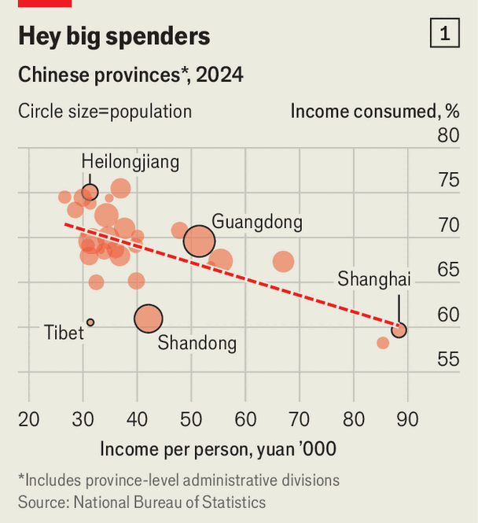
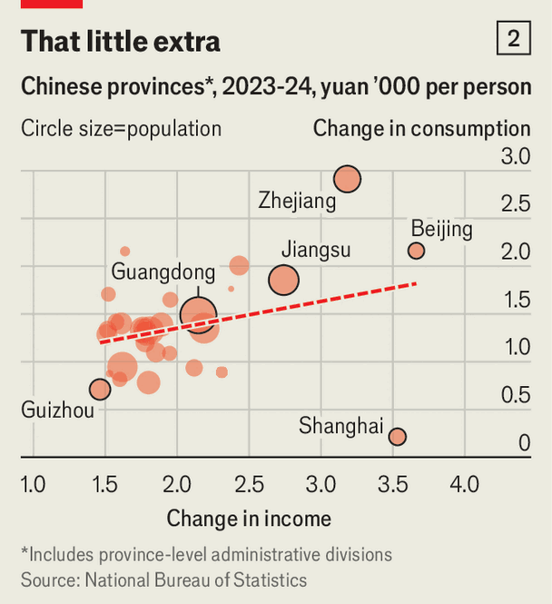
广东居民将收入的70%用于消费，比遵循普遍趋势高出3个百分点。考虑到其经济体量，这意味着广东省对全国消费的贡献比预期高出1740亿元。相比之下，山东省居民消费表现平平，他们拖累全国消费约3270亿元。不过，更为关键的是边际效应：消费如何随收入变化而波动。图表2展示了2023年至2024年最新数据中的这一关系。按此衡量，沿海省份浙江在推动全国消费方面发挥着重要作用：2024年平均收入增长3200元，浙江居民消费了其中的2900元。而地理上紧邻浙江的上海居民则相对节俭，收入增加3500元，但消费仅增加200元。■
广东和山东此前分别是中国消费领头羊和落后省份，如今两者均接近消费趋势。决定这种边际消费热情的因素有哪些？数据显示几个关键因素至关重要。初始收入越高，居民对额外收入的消费意愿反而越低。这合乎逻辑——上海居民年均支出高达53,000元。因此，城市化程度更高的省份，由于城市中富裕人群密集，似乎也更少将额外收入挥霍一空。其他因素同样重要。若一省有大量失业保险参保居民，边际消费对他们的吸引力似乎更强。与此同时，抚养比偏高的地区——每个劳动者需赡养更多人口——显然对额外消费的意愿较低。
我们的初步分析表明，中国当局应将重点放在收入水平较低且省内农村人口占比高的地区，以提振消费。同时，还支持其他干预措施，例如强化社会保障网络，减轻育儿和养老的财务负担。然而，即便如此，这些措施可能仍不足以帮助中国实现2026年的GDP增长目标，该目标预计仍将接近5%。这将给当局施加压力，迫使其采取行动。如果政府也可被分类，中国的政府或许需要成为那种“敢于”发放刺激政策的政府。■ 订阅者可注册我们的新刊《Drum Tower》，了解世界如何看待中国，以及中国如何看待世界。
§021 中国原题：What’s a good man worth in China’s marriage market? · 板块：China · 栏目：中国
中国婚恋市场中，一个优质男性的价值几何？
一条病毒式传播的社交媒体帖子揭示了令人不适的现实
本月早些时候，云池池（Yun Chichi）在小红书（Xiaohongshu）上发布了一则关于优质单身男性的婚恋信息，列举了他诸多优点：他拥有一辆车，并在医院有一份稳定的工作；父母有良好的退休金保障；不抽烟不喝酒，会做饭且性格温和。他堪称完美人选。理论上，如果她想将这位男士纳入自家家族（一种罕见的婚配模式），在中国婚恋市场中，她应支付多少彩礼？真正的棘手之处在于，她实际上是在描述自己。
■
但她在揭晓真相前，相关评论已迅速涌入。有人表示这位追求者价值数百万人民币，或适合医院院长的女儿。真相曝光后，该帖子迅速被删除，揭示了一个令人不适的现实：那些让神秘男子成为传奇的品质，本应是女性所具备的。在中国历史上，爱情一直带有交易性质。传统上，媒人会考虑家庭地位、财富和习俗。在一些农村地区，“嫁妆”至今仍被支付。但自1976年毛泽东去世后，中国人逐渐获得更多选择与自己共度一生的自由。据上海社会科学院刘文荣的本地研究，到2001年，不到12%的人愿意与自己不爱的人结婚。
浪漫情怀在现实考量面前逐渐被遗忘。如今，上海25%的男性和23.6%的女性表示愿意与不爱的人结婚。中国经济放缓或许解释了部分观念转变。拥有学位不再保证获得好工作，截至11月，青年失业率已升至16.9%。许多家庭期望男方拥有房产，因此经济困境打击了大量年轻人的婚恋前景。在这种环境下，年轻一代行事更加谨慎。上海约半数未婚女性表示，除非父母认可自己的选择，否则不会结婚。许多人干脆回避婚恋市场的社会与经济压力。2025年第一季度仅有180万对夫妇登记结婚，同比下降约8.1%。■
25至29岁人群中未婚比例超过50%，这令政府忧心忡忡，因为几乎所有中国儿童都是在婚姻中出生的。1月19日，政府表示，出生率已降至1949年以来的最低水平，每千人5.63个（死亡率为每千人8.04个）。官员们希望的是庆祝，而非哀悼。■ 订阅者可注册我们的新周刊《Drum Tower》，了解外界如何看待中国，以及中国如何看待世界。
§022 中国原题：Xi Jinping is carrying Deng Xiaoping’s authoritarian torch in China · 板块：China · 栏目：中国
习近平权力的迹象笼罩中国。最新迹象出现在1月17日，中国共产党反腐败监察机构宣布，去年共惩处了983,000名个人，创下了年度新高。在他铁腕统治背后，是其领导力的强大力量。“习近平思想”已写入宪法。各级官员都宣称效忠于他作为党的“核心”。学生们背诵他的治国箴言，这类智慧可谓层出不穷。其治理思想的第五卷著作去年已出版。所有这些已不再令人惊讶。■
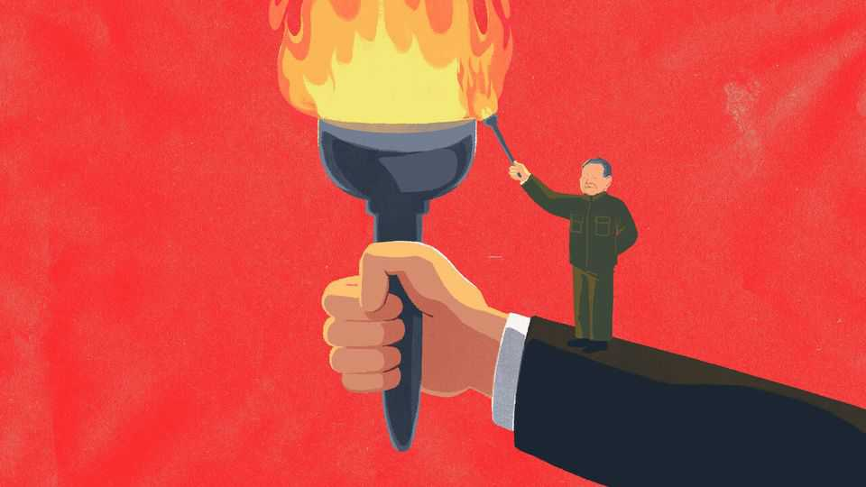
当这些迹象初现时，令中国观察家们震惊。它们预示着中国从邓小平领导的改革开放时代，转向更接近强人统治的模式。因此，谈及中国近现代史，习近平的执政则划出清晰的分界线。中国现代发展始于邓小平于1978年启动的“改革开放”政策。2012年习近平掌权后，中国的发展轨迹发生转变。官方称其为“新时代”，但多位外部学者则称之为中国的“逆向改革”，即习近平将意识形态与严密控制重新引入各个领域。无论使用何种术语，习近平上台前与之后的中国，呈现出截然不同的面貌。著名中国问题专家裴敏欣（Minxin Pei）的新书《破碎的中国梦想》则提供了新的视角。■
裴宜理的叙述并未强调分歧，而是着重展现从邓小平到习近平的延续性。邓小平作为中国至1989年为止的最高领导人，曾做出一系列重大决策，为习近平的崛起铺平道路。裴宜理的著作还指出，两位领导人之间存在本质的连续性：始终将强化党对中国的控制作为核心目标，只是所处背景不同。习近平与前任最明显的区别是废除了总统任期限制。这一改变于2018年初实施，使他得以至今仍担任公职——目前正处于第三个五年任期的中期，而此前两届任期通常被视为上限。习近平或许梦想终身执政，其能力可追溯至邓小平。1980年代邓小平曾明确表示，不设定年龄和任期限制作为党内最高层的硬性规定。■
这样做会削弱他的权力。习近平拥有三个官方职务：中共中央总书记、中央军委主席和国家主席。但只有最后一个——国家主席或总统职位——设有任期限制，而且这三者中它历来最为次要。此外，1989年至2002年领导中国的江泽民已表明，即便放弃其他职务仍可保留中央军委主席职位。从这个角度看，习近平继承的并非刚性的规则，而是薄弱的惯例。裴敏欣（Pei）认为，有人最终打破这些惯例是“注定会发生的事”。习近平的领导风格也延续了邓小平的改革路线。邓小平任期的简要概括是：他是一位政治保守派，不愿挑战党对政权的控制，但同时又是一位经济自由派，愿意引入市场机制。■
邓小平更倾向于政治保守主义。他清洗了胡耀邦和赵紫阳等自由派领导人，因其被视作思想松懈，最臭名昭著的是1989年下令军队对天安门广场抗议活动实施血腥镇压。在经济政策领域，邓小平的目标并非培育资本主义经济，而是借助贸易和投资的力量来强化中国。因此，邓小平对市场的试探纯粹是工具性的，市场只是其手段而非目的。即便中国财富成倍增长，邓小平的经济改革仍不彻底。时至今日，法治和资本市场仍受制于党。事实上，中国私营部门的成功增长形成了一个悖论：私营经济越发展，邓小平及其继任者就越缺乏改革经济体制的动力。
邓小平确保了党牢牢掌握列宁所说的“制高点”，即对金融、能源、电信和交通的国家控制。习近平则利用这些制高点，例如掐断中国昔日强大的房地产开发商的信贷，同时向半导体产业投入巨额资金。他表明，无论私营部门多么繁荣，都必须屈从于他对未来的愿景。在这一叙事中，邓小平与习近平最大的差异在于时代背景。邓小平决心在毛泽东的混乱统治使党与国家陷入混乱后重建二者。同时，他受到限制，因为仍有其他拥有革命背景的领导人活跃在政坛，能够制约邓小平。
习近平认为，必须重塑党与国家，因为经济成功使二者变得臃肿且纪律涣散。与邓小平相比，他的对手面临的约束更少。在习近平崛起之前的几十年里，各派系之间的平衡曾使党内精英阶层保持稳定，甚至陷入僵局。习近平证明，强硬的领导人能够强行突破这种局面。在裴敏欣看来，邓小平若看到中国当前局势，可能会感到些许羡慕：“他一定会想像习近平那样行事。”习近平在工业和军事实力方面大力建设，正如邓小平所期望的那样，同时进一步巩固了党的主导地位。批评者认为习近平使中国倒退。但真正的问题在于，邓小平及其继任者从未将中国推向一些乐观者曾经预期的那样远。■
《经济学人》的订阅者可注册订阅我们的Opinion新闻简报，汇集了我们最佳的社论、专栏、客座文章和读者来信。■
§023 中国原题：China hits its GDP target—in a weird way · 板块：China · 栏目：中国
在动荡的世界中，中国做出了可预见的举动。根据1月19日发布的数据，中国2025年经济实现了官方设定的增长目标，与前两年如出一辙。GDP增长5%，尽管中国人口下降速度甚至快于预期。增长得益于创纪录的贸易顺差，达到近1.2万亿美元，尽管中美关税战仍在持续（见图表1）。去年中国出口的强劲表现弥补了其他支出来源的疲软。政府曾设定“大力提振消费”的目标，但家庭并未配合。
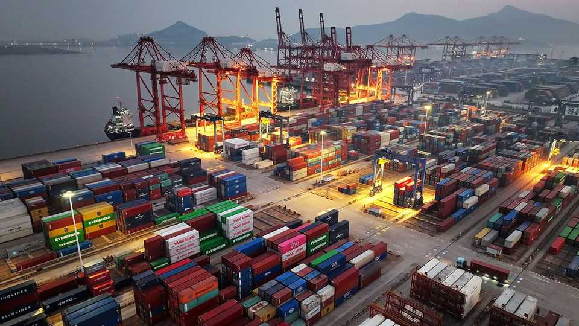
他们2025年的储蓄率（32%）甚至高于前一年（31.7%）。中国消费者并非已经拥有他们心中所想的一切。在新闻发布会上，国家统计局负责人康毅指出，中国每100户家庭仅有53辆私家车，而美国则拥有197辆私家车和其他“轻型载重”车辆。中国以往主要依赖投资支出维持经济增长。但根据官方数据，固定资产投资（FAI）自1989年以来首次出现下降（见图表2）。房地产投资持续下滑，伴随基础设施投资减少和制造业投资微弱增长（0.6%）。整体数据糟糕到许多经济学家都对其真实性表示怀疑。
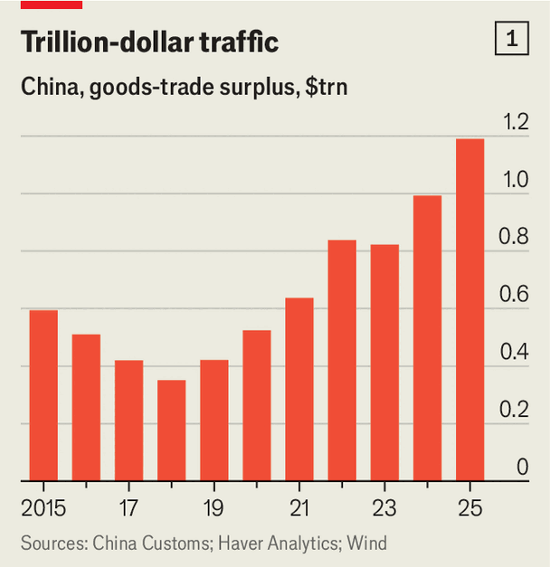
另一项官方投资指标——资本形成总额——显示，去年资本支出仍持续扩张，尽管增速缓慢。康先生表示，投资占中国整体增长的0.75个百分点，即总增长的七分之一。若此数据成立，投资实际增长需达约2%。两项统计间的显著差距可能部分源于技术性差异。FAI未考虑通胀，不包含库存且包含土地购置。但也有观点认为，中国地方政府可能为弥补过去高估的FAI增长，现在有意低估其增速。康先生指出，中国内需疲软与供给强劲形成突出的“矛盾”。要化解这一矛盾，超级大国仍需依赖外国购买其无法在国内售出的商品。■
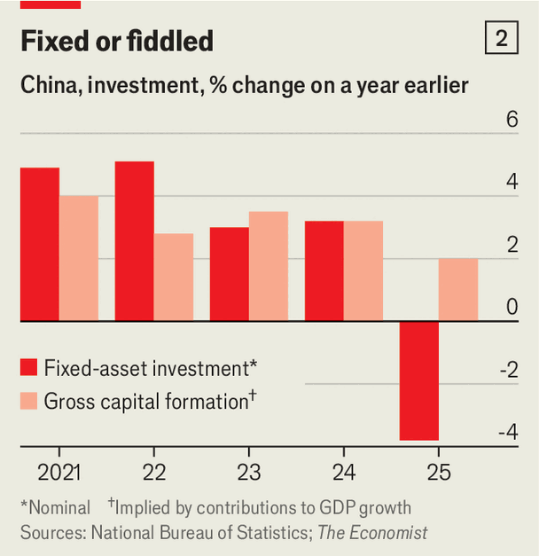
一些中国贸易伙伴正逐渐失去耐心，担心中国商品的大量涌入会摧毁本国产业。例如，墨西哥今年年初便对来自其贸易协定国以外国家（中国是其中主要对象）的逾1400种商品加征最高达50%的关税，其中包括汽车零部件、玩具、牙线，甚至扑克牌。万亿美元级的贸易顺差也再次引发人们对所谓中国“王牌”——其严格管控的汇率机制的关注。由于需求疲软和持续通货紧缩，中国商品价格相对于其他国家的价格持续下跌。经此调整后，中国汇率在2022年3月至2025年7月间贬值超过18%。■
人民币实际（通胀调整后）汇率的下跌使中国出口商品价格更具竞争力，从而“加剧外部失衡”，国际货币基金组织总裁克里斯塔利娜·格奥尔基耶娃（Kristalina Georgieva）上月指出。这一批评可能正逐渐被中国领导人所重视。他们已开始向贸易伙伴做出一些让步：例如减少对出口企业的税收优惠。中国还与欧盟达成初步协议，为电动汽车出口设定价格下限。在加拿大总理马克·卡尼（Mark Carney）访华期间，中国同意削减对加拿大油菜籽（芥花籽）的关税，并将该国龙虾、螃蟹和豌豆排除在报复性关税之外，至少持续九个月。中国还小幅升值了人民币。■
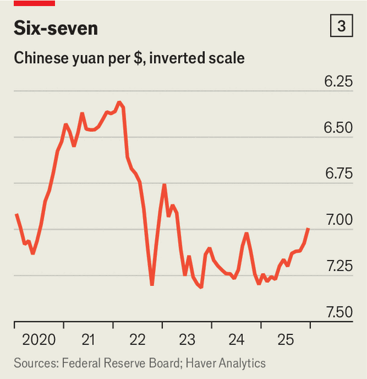
2025年中与美国达成关税休战协议后，人民币在贸易加权基础上开始升值。美联储的鸽派转向进一步巩固了这一趋势。2025年底，人民币汇率首次跌破七比一（见图表3）。更坚挺的汇率可能缓和中国贸易伙伴的担忧，但也会加剧中国的通缩压力。人民币升值将缩小中国的外部失衡（出口与进口差额），但会恶化其内部失衡（生产能力与实际需求之间的差距）。高盛分析师许荣荣认为，应对这一矛盾的最佳方式是进一步实施财政刺激政策，并推进中国社会保障体系的改革。财政刺激将提振中国消费，同时推动经济增长和通胀。■
国内物价上涨将推升实际汇率，正如通缩曾导致其贬值。就连国际货币基金组织（IMF）也对此表示关注。"我们强烈支持政府出台财政和货币政策措施……以推动向更多国内消费转型，"乔治耶娃女士上月表示。1月19日，该基金首席经济学家皮埃尔-奥利维耶·戈林查斯（Pierre-Olivier Gourinchas）敦促中国通过增加对房地产行业的清理投入（而非制造业补贴）来实现经济再平衡。中国始终如一地实现增长目标，但达成目标的方式往往出人意料。去年出口强劲令所有人震惊，而今年中国或许需要通过听从IMF的建议来制造一次意外。■
如需了解经济学、金融和市场领域最重要的新闻的专家分析，请订阅我们的周度专属通讯《Money Talks》。■
§025 美国原题：The meaning of “America First” is in flux · 板块：United States · 栏目：美国
人们曾认为特朗普本质上是孤立主义者或“限制主义者”，一种轻量级的孤立主义。他在第一任期对中东发动空袭，这可以归咎于围绕他的新保守派。随后总统重返白宫，却对委内瑞拉、尼日利亚、伊朗、伊拉克、叙利亚、索马里和也门发动攻击。他曾发起一项不切实际的对格陵兰岛的争夺，但本周在达沃斯世界经济论坛上似乎有所缓和。国际关系理论家们现在将他比作19世纪的现实主义者，四处搜寻自然资源。
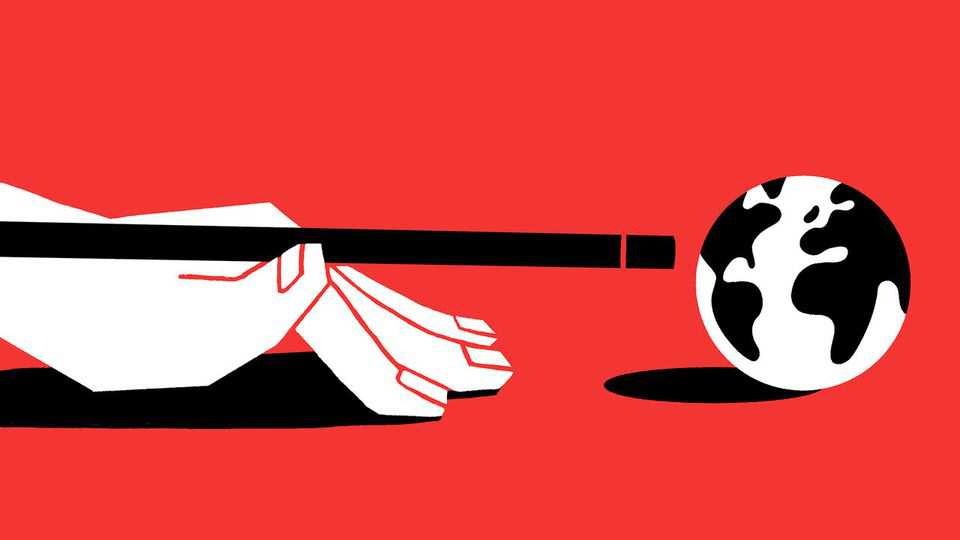
有些人认为他热衷于掌控和为权力而行使权力。特朗普先生行事凭直觉，而非意识形态。他小气且热衷于将自己的名字刻在建筑和地图上。他对格陵兰岛的渴望部分源于他被忽视诺贝尔和平奖的提名，部分则源于他想要超越托马斯·杰斐逊的路易斯安那购地案。他称该岛对国家安全至关重要，美国必须拥有它才能加以防御——这一观点他在达沃斯论坛上向人群表达时如此说道：“心理上，谁他妈愿意去捍卫一份许可证协议或租赁协议？”他的这一行动可能摧毁北约，但这只是次要的。然而，对更注重策略的MAGA思想家而言，这却是核心目标。
确实，特朗普的灵活态度掩盖了这样一个事实：在MAGA运动内部，关于美国应如何行使全球权力，正逐渐凝聚并相互竞争着不同的意识形态。他的副总统J.D.万斯（J.D. Vance）更强调克制，对欧洲自由民主国家抱有更大蔑视。其他顾问如马可·鲁比奥（Marco Rubio）、斯蒂芬·米勒（Stephen Miller）则展现出不同的反应模式。这些观点值得深入审视，因为它们将超越特朗普本人的个性，持续影响未来。"美国优先"（America First）曾意味着对华鹰派立场、蔑视多边组织以及对乌克兰漠不关心的态度，这种态度可能看起来像亲俄倾向。这些仍是重要原则。但如今"美国优先"也意味着通过打击贩毒集团主导西半球、攫取格陵兰岛的稀土矿以及控制委内瑞拉石油。■
最后一段内容完全是新的。在竞选期间，特朗普对穿越美墨边境的拉美移民表现出极大兴趣，但对拉美大陆本身却毫无兴趣，乔治华盛顿大学的朱利安·沃尔勒（Julian Waller）指出。在欧洲，特朗普政府日益倾向于利用自身影响力，以“改革”（即施压）自由民主国家，使其更加符合“MAGA化”（Make America Great Again）的倾向。特朗普称“美国优先”意味着他个人的决定，唯一的约束是他的“个人道德”。他有坚定的信念：反对无休止的战争、国家建设、贸易逆差和搭便车的盟友。但除此之外，他态度灵活。他想背弃乌克兰，但又希望获得和平奖，不被看作失败者。他行事冲动：在观看福克斯新闻关于被围困基督徒的报道后，就对尼日利亚的伊斯兰极端分子发动了空袭。■
他对共和党的控制意味着他的选民必须适应他的矛盾之处。任何寻求更连贯世界观的人可以转向他的幕僚团队。于12月发布的国家安全战略（NSS）阐明了他们的优先事项。这份文件是他们试图为老板的直觉辩护、填补意识形态空白，同时推动自身主张的尝试。其中包含两项尤为引人注目的信念声明：特朗普推论（后被称作唐罗道），主张美国在西半球的主导地位；以及对欧洲“文明消亡”的警告。唐罗道在推翻委内瑞拉总统尼古拉斯·马杜罗（Nicolás Maduro）的行动中初见成效。该行动的主导人物包括鲁比奥先生（Rubio）、国务卿和强硬派顾问米勒（Miller）。鲁比奥先生是传统共和党人，也是古巴移民之子。■
他对推翻该地区共产主义独裁政权、播种民主的热忱，既深且私。他身上体现出新保守主义鹰派传教士般的热情——这正是他在参议院任职14年时的作风。米勒先生对西半球的兴趣源于移民问题。在国内，他主导了政府的遣返机器，其戏剧化操作和所谓聚焦罪犯的策略，解释了加勒比海偷渡事件及将贩毒集团指定为外国恐怖组织的举措。正如国防优先智库（Defence Priorities）的詹妮弗·卡瓦纳格指出，委内瑞拉行动标志着一项国内议程的“外部化”，即借助军事力量强化毒品与移民执法。其终极目标是实现全球范围的控制，包括美国本土城市。■
在国家统计局（NSS）发布后，一些人解读特朗普政府正在采取势力范围策略：美国在西半球保持主导地位，而让中国和俄罗斯在各自后院自由行动。英国伯明翰大学的帕特里克·波特（Patrick Porter）认为这是误读，因为这意味着全球的相互划分。实际上，特朗普政府似乎更倾向于在亚洲展示力量。限制派感到沮丧。去年特朗普政府成功促使欧洲国家承诺将国防开支提升至GDP的5%，并借助预算技巧实现。凯南（Ms Kavanagh）认为这不是胜利，她的阵营希望美国彻底退出欧洲。■
Sumantra Maitra（曼特拉·迈特拉）另一位与特朗普政府成员关系密切的分析人士主张建立一个“休眠的北约”，美国在欧洲的角色应是“最后的平衡者”而非永久驻扎。迈特拉认为，若特朗普撤回乔·拜登向欧洲增派的约2万美军，将是美国采取这一路线的明确信号。他预计实质性责任转移至少需要十年时间。与此同时，特朗普政府正对美国的保护承诺设置条件。去年在慕尼黑演讲中，范斯（Vance）列举了部分条件，其言论充满对欧洲政府的蔑视。他称欧洲需直面“内部敌人”，即所谓“觉醒精英”——这些人审查言论、支持开放边境，并拒绝与极右翼民粹主义者联合执政。《国家情报战略》（NSS）重提了这些议题。■
文章警告称，若欧洲无法自我纠正，20年后将变得“面目全非”。在发布《国家网络安全战略》（NSS）后，美国国务院对一位前欧盟委员、数字服务法（Digital Services Act）的制定者实施了签证禁令。MAGA阵营指责此举压制其观点。范斯先生是政府中最为坚定的MAGA思想家，其思想反映了新右翼的意识形态氛围。该群体的观点往往深受天主教影响，常带有悲观情绪和文化焦虑。■
美国复兴中心（Centre for Renewing America）新右翼智库成员Nathan Pinkoski表示，与中国的战略竞争使MAGA群体陷入“身份危机”，他们眼中的西方正因大规模移民和政治正确而衰弱。“作为文明，我们甚至不再清楚自己究竟为何而存在。”他说，“若想在地缘政治对手面前有所作为，我们必须先解决自身问题。”他预计，一旦“察觉欧洲文明传统正在偏离”，将采取强硬的制裁和其他经济手段。然而MAGA内部仍存在矛盾，尚未厘清这些矛盾。对抗欧洲在与中国的战略竞争中并无助益。■
美国无法同时退出欧洲防务并迫使欧洲人按照MAGA模式治理。马特拉（Maitra）表示：“负担转移与文明政治难以并行。”他称支持第二种模式的倡导者“与他们所抨击的鹰派毫无区别”。他的预测是，这场斗争将“本质上席卷”MAGA。他说，民主党人的立场很容易理解，他们是国际主义者。另一方？尚无定论。■ 了解美国政治动态，请订阅《The US in brief》，这是我们的每日简报，提供对最重要政治新闻的快速分析；以及《Checks and Balance》，每周分析美国民主现状及选民关注的核心议题。
§026 美国原题：Lisa Cook’s job at the Federal Reserve looks safe · 板块：United States · 栏目：美国
约翰·帕尔默（Jerome Powell）担任美联储主席，如今正面临联邦调查，他在1月21日从公众席位上观看了最高法院对这位处境艰难的同事丽莎·库克命运的审议。2023年，乔·拜登任命库克担任美联储理事的14年任期。同年8月，时任总统唐纳德·特朗普试图解雇她，指控其在房贷申请中作出虚假陈述。当时特朗普写道，因“在金融事务中存在欺诈和可能构成刑事犯罪的行为”，他决定解雇她。
与特朗普第二任期中几乎其他所有被解职的官员不同，库克女士（库克）仍保有其职位。9月，她获得联邦地区法院的禁令，阻止其被解职。当上诉法院拒绝介入后，特朗普向最高法院提交了紧急申请。大法官们未批准总统立即解雇库克女士，但10月1日，他们决定听取该案件的口头辩论——这是对紧急申请的罕见举措。本周，似乎没有大法官明确站在特朗普一方，但多数人对案件复杂性表示担忧。（“存在百万个棘手问题，”桑托姆布罗法官指出。）特朗普援引的法律条文允许因“正当理由”解职。然而，这种基于正当理由的解职与允许其他机构负责人仅因“不称职、渎职或滥用职权”被解职的法律条文如何协调？■
州长任职前的行为是否重要，还是仅限于其“在职期间”的行动？何种形式的通知（如推特动态？）和听证会足以构成正当程序？特朗普是否正遭受库克女士持续担任美联储主席所造成的真正“不可挽回的损害”？双方的论点交锋中，特朗普的总检察长约翰·索尔与共和党诉讼专家保罗·克雷门特展开激烈辩论。索尔此前在最高法院为特朗普的政策议程赢得多场胜利，但经过近两小时的质询后，特朗普诉库克案似乎注定将不利总统。索尔声称库克女士将两处住所均视为主要居所，这“质疑”了其“担任美联储主席的适格性”。但首席大法官约翰·罗伯茨对此表示怀疑。■
如果库克女士的失误被认定为“无意之失”，这种错误是否足以构成法律规定的“正当理由”？无论如何，首席大法官继续指出，这些事实是否重要，鉴于索尔先生声称法院既不能重新审视何为“正当理由”，也不强制要求官员恢复职位？从左至右的法官们在索尔先生的陈述中反复探讨这些悖论。卡瓦诺大法官引导索尔先生回答一系列关于美联储独立性目的的问题，似乎意在提醒总统不得过度干预设定利率的机构。金斯伯格大法官则质疑，特朗普是否“只需说‘库克，你被解雇’”便无需提供任何通知或听证会？■
允许总统宣称“我因事态严重而解除你的职务”，她表示，这给州长“没有任何方式”检验她是否因“政策原因”被解职。大法官艾米·康妮·巴雷特（Amy Coney Barrett）则提到了此案更广泛的影响。她承认自己“是法官而非经济学家”，但专家警告称，若法院支持特朗普，可能引发经济损害。萨厄先生向她保证不必担心，因为库克女士被解职后，“股市连续三天上涨”。宾夕法尼亚大学法学院教授凯特·肖表示，这一互动表明大法官们深陷政治与经济漩涡——“这对认为法院应专注法律的人来说是个真正的问题”。乔治城大学法学院教授史蒂夫·弗拉德克认为，法院最终会围绕一项狭隘裁决与特朗普对立，回避许多最复杂的问题。■
对莎瓦女士而言，特朗普的“名义损失”或许能让他找到一种更高效的流程来解雇库克女士——这种流程更有可能经受住司法审查。■ 保持对美国政治的敏锐洞察，订阅我们的每日简报《美国简报》（The US in brief），获取最重要的政治新闻快速分析；以及每周简报《权力制衡》（Checks and Balance），深入探讨美国民主现状与选民关切的核心议题。
§027 欢迎来到机器受众的世界原题：Welcome to the wild world of skijoring · 板块：United States · 栏目：美国
粉丝们挥舞着叮当作响的牛铃，小心翼翼地绕过冒着热气的马粪堆，向看台走去。他们俯视着赛道上身着牛仔帽、带流苏马裤和雪地服的运动员。摊贩们兜售印有“Will shake my ass for cowboys”字样的运动衫。这是犹他州海伯城一个阳光明媚的日子，首届职业雪地骑马拉滑板巡回赛即将开始。雪地骑马拉滑板是赛马与冬季奥运会的结合体。骑手骑着马，通过绳索牵引滑雪者穿越雪地障碍赛道，以最快速度完成比赛。滑雪者必须在雪地赛道中穿梭过门架，收集环状物并跃过障碍——全程紧抓绳索，命悬一线。 ■
失误频发。解说员说：“如果你比赛结束时不需要牙科治疗，那就算成功。”六站巡回赛将在二月于盐湖城迎来收官之战。落基山脉地区滑雪与牧场文化的结合使雪地拖曳成为天然契合的运动。但这项运动并非起源于美国。“Skijoring”一词源自挪威语，意为“滑雪驾驶”。爱好者们认为这项运动起源于斯堪的纳维亚地区的原住民，他们利用驯鹿在冰封的土地上拉拽前行。1928年冬季奥运会在圣莫里茨展示这项运动后，其逐渐流行开来。布莱恩·加纳德估计，他在2017年创办海伯城赛事时，美国西部仅有约十几场相关比赛。当时仅有约1500人参与。今年，加纳德和他的合作伙伴预计会有10000人到场。
目标是在2034年犹他州奥运会上展示这项运动。顶尖运动员通常具备滑雪或高山滑雪的经验。训练几乎不可能进行。蒂芙尼·哈里斯（Tiffany Harris）和詹姆斯·迪隆（James Dillon）是一对夫妻，他们认为冲浪滑雪和雪地摩托运动或许能帮助他们训练。但他们表示，无法在每小时40英里速度下模拟马匹不稳定的步态。滑雪者必须学会何时攀爬绳索靠近马匹，何时需要更多余地来完成跳跃动作。“这门运动有其艺术性，”有志成为职业选手的布雷森·特雷特说。经验是宝贵的资产。记者亲见的最快成绩出现在“世纪组”比赛中，该组别要求滑雪者与骑手的年龄总和至少达到100岁。并非所有观众都是牛仔或滑雪爱好者。有一群人则在等待朋友参赛时，用电池供电电视观看NFL季后赛。■
初学者只需听一听队伍名称就能大致了解这项运动。在“Blazing Saddlez”（烈焰马鞍）和“50 Shades of Hay”（五十种干草色）之后，还有“Two Idiots and a Rope”（两个傻瓜加一根绳子）。■ 要了解美国政治动态，可关注《The US in brief》——我们每日政治简报，提供最新重大政治新闻的快速分析，以及《Checks and Balance》——每周专栏，探讨美国民主现状及选民关切的核心议题。
§028 美国原题：Ed tech is profitable. It is also mostly useless · 板块：United States · 栏目：美国
堪萨斯州麦克弗森中学（McPherson Middle School）曾因教育科技而受挫，但2022年校方决定再次尝试。他们从州内推荐清单中选用了名为IXL的数字课程，承诺能根据每位学生水平进行个性化教学，带来快速进步。该校将大部分课堂独立数学作业交由该系统完成。“我们认为它会非常神奇，”校长英格·埃普辛（Inge Esping）表示。事实并非如此。埃普辛女士说，该系统“并未真正带来改变”。
学生们认为该课程重复、僵化且乏味——一旦使用学校发放的笔记本电脑，分心便成为难以抗拒的诱惑。学校先是封锁了YouTube和Spotify，随后又限制学生间的电子邮件往来。但孩子们总能找到变通方法，教师们也对新增的监控职责感到不满。2025年，正如家长长期呼吁的那样，学生们交出了笔记本电脑，仅在极少数情况下才被允许使用。如今铅笔和纸张成为主流，IXL仅偶尔用于快速补充教师已教授过的数学技能。IXL发言人表示，该校的经历“并不符合我们在堪萨斯州和全美范围内的观察”，并称其课程表现优于同行。据研究人员称，麦克弗森的经历正是教育科技风险的缩影。自苹果公司50年前开始向学校推广计算机以来，教室里已充斥着各种技术。■
近九成高中生和八成四小学生成人学校发放的电子设备；五分之四的幼儿园儿童也获得了这类设备。关于注意力碎片化和数据安全的担忧正在加剧。尽管教育科技公司声称技术能带来显著的学习成果，但独立研究已明确表明，技术在校园中很少能提升学习效果，甚至常常损害学习效果。由斯坦福大学的丽贝卡·西尔弗曼领导的2024年一项元分析，对119项早期阅读技术干预措施的研究进行了评估，发现这些研究描述的项目在标准化测试中最多只能带来边际提升。大多数研究几乎没有效果、无效果或产生有害影响。神经科学家贾雷德·霍瓦特在其著作《The Digital Delusion》中，已对涵盖数万项研究的元分析进行了综述。■
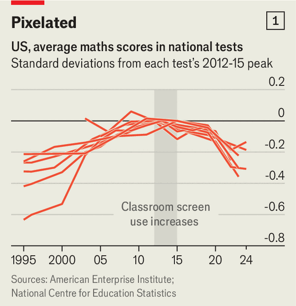
他的结论是：“在几乎所有情境下，教育科技都无法达到有意义学习影响的最低门槛。”学校中技术普及程度的提升更多源于激进的营销，而非严谨的实证依据。教师们如今每天都会收到大量免费技术产品的推广。2024年，美国学校在教育科技上的支出达到300亿美元。全球范围内，教育科技行业规模达1650亿美元。技术确实能节省教材成本并简化备课流程。但授权和培训成本累积，许多教师却感到被繁琐的行政流程和仪表盘所困扰，而非获得解放。长期趋势表明，课堂设备的普及可能与阅读及其他学科成绩的显著下滑存在关联。21项全国性基准测试的分数自1994年起持续上升，直到2012-15年间达到顶峰，此后随着屏幕使用量激增，分数开始下滑（见图表1）。
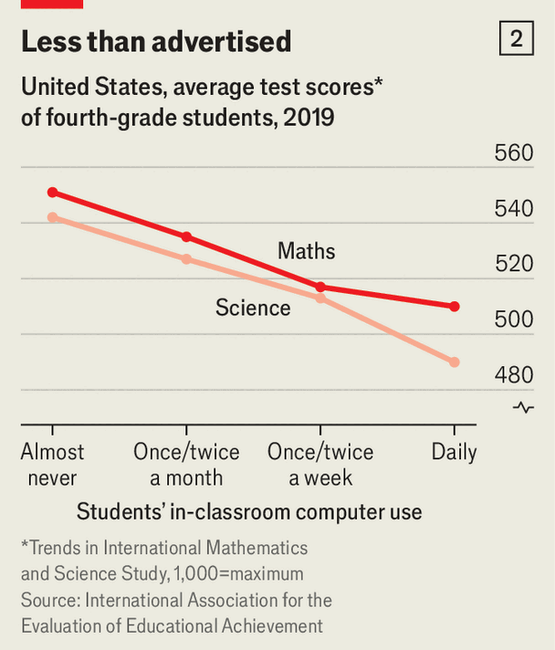
在2011至2019年主要数学、科学和阅读能力评估中，校内计算机使用量增加与较低的分数相关。相比之下，几乎不使用或完全不使用计算机的班级学生通常得分最高（见图表2）。注意力分散是可能原因之一。另一原因是某些工具过度强调游戏化而忽视教育本身，导致儿童更关注赢得分数而非掌握概念。但更隐蔽的问题包括数字工具削弱课堂中的人际连接与同理心。证据表明，应用程序在两个领域可通过练习支持学习：一是针对特定学习障碍，二是狭窄领域内有明确对错答案的自适应辅导，如拼写和算术。
但尽管学生通过重复练习在游戏内有所提升，他们却难以将知识迁移到其他情境，如标准化考试中。常识认为，在技术应用上应区分不同年龄段群体。“对年幼儿童而言，最重要的莫过于与人类互动，”北卡罗来纳大学的杰弗里·格林指出。对于年长群体，埃斯平女士与北卡罗来纳州学区督学罗德尼·特里茨则主张“有限且有针对性”的使用。“天平已向设备决定作业方向倾斜，而非相反，”特里茨先生表示。2013年，比尔·盖茨曾表示，要判断教育科技是否真正有效，可能需要十年时间。十年时间过去，数百亿美元投入后，答案正变得愈发清晰。
倡导者兼厌倦家长艾米丽·彻金（Emily Cherkin）指出：“如果这笔钱都用于教师身上，会怎样呢？” ■ 订阅我们的每日简报《美国简报》（The US in brief），获取对最重要政治新闻的快速分析；以及每周专栏《制衡》（Checks and Balance），深入探讨美国民主现状及选民关切议题。
§029 美国原题：Donald Trump’s siege in Minneapolis is floundering · 板块：United States · 栏目：美国
很少有事情会让警察比批评其他警察更感到不适。然而，当明尼苏达州布鲁克林帕克市（Brooklyn Park）警长马克·布鲁利（Mark Bruley）于1月20日的记者会上走上麦克风时，他的焦虑显而易见。他强调自己并非要批评所有联邦警察，但随后话锋一转。他指出，其所在城市的居民——包括美国公民——正被联邦特工无故拦查骚扰，他称此为侵犯民权的行为；所有投诉者并非白人。他说：“这种情况必须停止。”
据布雷利先生所述，一名其下属的警察在非执勤期间遭到拦截。移民与海关执法局（ICE）特工将她的车包围，持枪要求她出示移民文件（尽管她是一名公民）。当她试图用手机记录事件时，一名特工将她的手机打落在地。直到发现她是一名警察，局势才得以缓解。特工随后离开，但并未道歉。布雷利先生表示：“我希望能告诉您这是一起孤立事件，但事实上，站在我身后的许多警长都曾遭遇过类似情况。”他的话，连同明尼阿波利斯地区十余位警长的表态，反映出联邦移民执法行动“Operation Metro Surge”在双城地区已失控。■
自12月以来，约3000名联邦特工被部署至该市，规模远超以往在芝加哥、夏洛特和新奥尔良的行动。据国土安全部称，此举已导致至少3000人被捕，并伴随一系列令人作呕的视频流出。1月7日，抗议者蕾妮·古德（Renee Good）在车内被一名移民与海关执法局（ICE）特工连续射击，该特工同时持手机与手枪作案。1月14日，YouGov发布的民调显示，70%的美国人观看了蕾妮·古德遇害的视频。目前超过半数美国人对移民与海关执法局持负面看法。1月21日达沃斯论坛上，就连唐纳德·特朗普也似乎意识到了这一问题。他称：“我们实际上帮助了明尼苏达州很多，但他们并不感激。”前一天，他将蕾妮·古德遇害称为“悲剧”。
他随后表达了希望其父（他称其父曾支持自己）继续成为“特朗普狂热支持者”的期待。特朗普此前曾称戈德女士为“职业煽动者”；国土安全部部长克里斯蒂·诺姆（Kristi Noem）则称她为“国内恐怖分子”。即便在遇害事件发生前，城市内部的反对声浪已迅速增长。正如芝加哥秋季的情形，数千名市民已组织起来，交换关于突袭行动的信息。某团体运营着每日直播电台，引导抗议者跟随联邦特工、吹哨子并拍摄画面。其他居民则为躲藏在室内的移民提供食物，并驾车将无证移民的儿童送至学校。多个学区已开始提供远程教学。商铺橱窗张贴的告示写着：未经搜查令，不欢迎ICE特工。这些手段似乎正在阻碍联邦特工行动。■
1月20日的记者会上，格雷格·博维诺（Greg Bovino）——这位边境巡逻官员近年来成为移民行动中冷酷无情的面孔——承认了行动的成效。他称抗议者为“无政府主义者”“暴徒”和“煽动者”，并表示这些群体“组织得更好一些”，使执法环境变得更为复杂。他抱怨称，执法人员连买咖啡都受到限制。谈及被逮捕的众多美国公民时，他辩称这些公民应为自身行为负责，因为他们“接近、参与或卷入”抗议活动。然而私下里，一些州共和党人对ICE（美国移民与海关执法局）使用的手段感到不安，担心这会损害他们的政治立场。在行动开始前，明尼苏达州的民主党人正因一场大规模的欺诈丑闻承受压力，该丑闻涉及州政府未能对政府资金受益人进行基本的审核。
1月5日，明尼苏达州州长蒂姆·沃尔兹（Tim Walz）宣布退出连任竞选。特朗普政府试图将丑闻与移民问题挂钩——许多涉案者为索马里裔。但就连特朗普本人也在Truth Social上抱怨，人们已不再关注欺诈指控。明尼阿波利斯市长雅各布·弗里（Jacob Frey）则有自己的看法：“我推测，特朗普政府高层某人可能下令‘去明尼阿波利斯逮捕并驱逐一批索马里人’。”但他指出，明尼阿波利斯绝大多数索马里人都是美国公民，因此行动收效甚微。结果联邦特工开始随意盘查抗议者和外貌略显异域的民众，而这些人中多数最终被证实是公民。接下来会发生什么？欺诈调查似乎将陷入停滞。■
1月13日，联邦首席检察官乔·汤普森（Joe Thompson）与另外五名检察官一同辞职，据称是因接到调查Good女士妻子的指令。然而遣返计划却未见停滞迹象。司法部已向该州六名民主党官员发出传票，包括沃尔兹（Mr Walz）和弗莱（Mr Frey），以调查他们是否不当干预美国移民与海关执法局（ICE）工作。1月21日，联邦上诉法院解除对警方向示威者使用催泪瓦斯的限制。这 hardly 是退让的信号。■ 关注美国政治动态，请订阅《The US in brief》，这是我们的每日简报，提供对最重要政治新闻的快速分析；以及《Checks and Balance》，每周简报聚焦美国民主现状与选民关切议题。
§030 美国原题：Why Minneapolis is at the centre of Donald Trump’s immigration crackdown · 板块：United States · 栏目：美国
寒潮如此猛烈，连密苏里河都结冰了，明尼阿波利斯的旅游业正迎来淡季。因此，特朗普决定派遣约3000名联邦移民官员涌入该市，似乎对酒店和餐馆来说是个利好消息。但一些为这些官员打扫房间或倒酒的服务人员，自身却可能成为被拘捕的对象。■
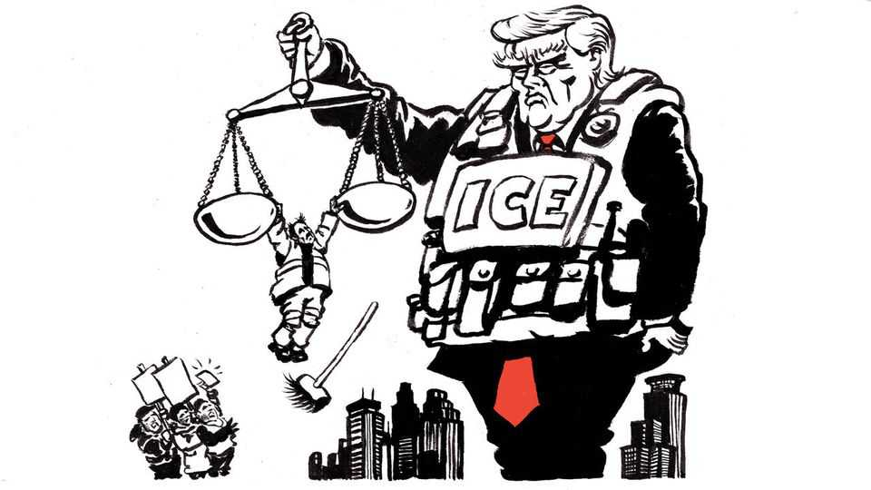
这就是为何瓦德·吕内堡（Wade Lüneburg），代表酒店业工人的工会地方分会政治主管，不得不亲自将食物送到明尼阿波利斯市躲藏工人家庭手中。在敲门前，他会先发一张自己戴着红色工会帽的照片，以确保居民确认他并非联邦特工。“他们无处不在，”凯瑟琳（Catherine）说，她通常在酒店厨房工作，开门后她这样说道。“我们哪儿都找不到安全的地方。”与此同时，一名16岁少年在公寓楼门口接过了吕内堡送来的洋葱、胡萝卜、罐头食品和玉米卷饼。他是公民——现在随身携带护照——但他的父母并非如此。■
他注意到他们每隔几分钟就会掀开窗帘查看联邦特工是否出现在停车场，因此他停止上学，希望能帮助应对危机。他说：“他们通常非常擅长隐藏情绪，但我知道他们现在非常害怕。我不知道该如何应对。” 对于在联合酒店工会第17分会任职37年的吕内堡先生而言，这一切毫无道理。他说：“诚实善良的劳动者不应该承受这样的冲击。” 他驾车返回市中心，穿过一街区接一街区的舒适独栋住宅区，他指出打扫酒店客房是份辛苦的工作。“我看不到原住民——也就是原住白人——主动申请这些酒店的工作岗位，”他说。■
移民官员的部署规模远超特朗普此前派往芝加哥的警力——后者是明尼阿波利斯及其邻近城市圣保罗警察力量总和的三倍。然而，整个州的无证移民人口估计仅约10万，相较德克萨斯州（200万）和佛罗里达州（120万）而言规模较小。后两者避开了戴着面具的官员在街头要求市民出示证件、向示威者喷射胡椒喷雾并投掷闪光弹、破门搜捕所谓罪犯（有时实为守法公民）的骚乱。穆罕默德·阿卜杜勒-阿哈德（Muhammad Abdul-Ahad）运营着一个反暴力组织，他不禁发问：“为何是明尼苏达州？为何是明尼阿波利斯？”■
他正守在一处纪念地，那里是蕾妮·古德（Renee Good）于1月7日被移民海关执法局（ICE）特工射杀的地点，当时她正试图驾车逃离。阿卜杜勒-阿哈德（Mr Abdul-Ahad）在思考这处纪念地是否与附近纪念乔治·弗洛伊德（George Floyd）的场所存在关联，后者因警察跪压致死引发2020年全球抗议警察暴力的浪潮。民主党参议员艾米·克罗布彻（Amy Klobuchar）表示，“我们州的任何人都难以理解这一事件。”她认为明尼苏达州的政治文化或许能提供答案。“我们州的一个独特之处在于，普通市民——包括乔治·弗洛伊德案中一位年轻女性——会前往事发地开始录像，即使被要求离开，他们仍坚持记录。”克罗布彻女士说。明尼阿波利斯正对ICE的入侵展现出类似免疫反应的态势。■
工会、非营利组织、教会团体和普通市民已形成密集网络，支持各类移民，无论是否持有文件，提供食物、追踪移民与海关执法局（ICE）车辆，并以侮辱和警告声驱赶执法人员，用口哨提醒移民注意。明尼苏达州的团结与抵抗政治源于至少两个来源，一个古老，一个近期。该州民主党被称为“民主党-农民-劳工党”（Democratic-Farmer-Labor, DFL），因其根植于20世纪初的农业与劳工民粹主义。历史的讽刺在于，正是大量涌入的斯堪的纳维亚移民——正是特朗普声称希望更多引进的群体——催生了这种左翼政治。如今，该党派中心已转移至明尼苏达州首府明尼阿波利斯，因为“农民”（F）群体在该州已不再是民主党的主要选民；而“劳工”（L）群体也在减弱，尽管像吕内堡（Lüneburg）这样的坚定支持者仍存在。■
最近的事件是乔治·弗洛伊德（George Floyd）之死，这一事件让即使是城市中的特权阶层也意识到法律如何被滥用、权利如何被架空，明尼苏达大学法学院教授埃马纽埃尔·马乌莱翁（Emmanuel Mauleón）表示。“人们突然意识到，当执法部门越界时会发生什么，”他说，“以这种方式保护彼此的信念，我想正是源于那个时刻。”对特朗普政府而言，是反对者在滥用法律。他们称戈德女士（Ms Good）为国内恐怖分子，意图追捕特工。他们为ICE（移民与海关执法局）的行动辩护，称这些措施是防止无政府主义者阻碍执法所必需的。在现代总统中，特朗普在面对反对时热衷于提高政治温度，这一点是独一无二的。■
无论这一结果是否蓄意为之，明尼阿波利斯的镇压行动可能引发左翼的过度反应，表现为地方上的违法抵抗以及民主党在全国范围内重启“废除美国移民与海关执法局（ICE）”的呼声，正如2020年有人呼吁废除警察一样。民调显示特朗普的镇压行动目前不受欢迎，但同时也表明选民在移民问题上仍更信任国会共和党人。无论法院最终认定明尼阿波利斯的哪一方违法，这场较量最终都是一场政治博弈。输掉这场博弈的将是率先过度使用牌的那方。但没有人会真正获胜。■ 订阅者可注册我们的观点通讯，汇集了最佳的社论、专栏、客座评论及读者来信。
§031 美洲原题：Mexico’s mighty left-wing government is floundering · 板块：Americas · 栏目：美洲
随着尼古拉斯·马杜罗被推翻，古巴和尼加拉瓜的政权摇摇欲坠，受菲德尔·卡斯特罗影响的左翼势力曾主导拉丁美洲，如今正逐渐消退。然而在美国南部边境，另一种形式的左翼政治不仅依然存在，而且蓬勃发展。墨西哥的“更多纳”（Morena）政党比20世纪席卷加勒比地区的马克思主义-列宁主义要温和得多，意识形态也更少，且成员年龄更年轻。该党在墨西哥几乎没有真正的对手。它成立于2011年，旨在将创始人安德烈斯·曼努埃尔·洛佩斯·奥夫拉多尔送入总统职位。
自2018年实现这一目标以来，该党已主导墨西哥政治。联合其盟友，该党控制着墨西哥32个州中的24个。在两院立法机构中均占据超级多数席位，每院均超过三分之二的席位。该党常被与统治墨西哥长达七十年的机构革命党相提并论，直至2000年。但随着Morena日益根深蒂固，其拯救墨西哥脱离严重问题——强大贩毒集团、腐败和疲软经济——的前景却愈发渺茫。该党及其领导人仍广受支持，问题是这种支持能持续多久。安全与腐败是当务之急。克劳迪娅·希内鲍姆（Claudia Sheinbaum）作为洛佩斯·奥夫拉多尔（López Obrador）指定的继任者，采取了有效策略，使凶杀率数年来首次下降。但唐纳德·特朗普（Donald Trump）希望看到快速成果。■
他指控墨西哥政界与贩毒集团形成了“不可容忍的联盟”。多名莫雷纳（Morena）官员，包括参议员和州长，均面临可信的涉毒关联指控。尽管特朗普难缠，但他为谢因鲍姆提供了打击腐败的契机，但针对本党人士仍属不易。要使墨西哥永久性更安全、更廉洁，需重塑安全与司法体系，这将耗费巨资。这正是问题所在。在莫雷纳执政期间，墨西哥财政枯竭。其经济增长长期落后于拉美邻国及亚洲同类新兴经济体，但莫雷纳执政的这十余年却是近四分之一世纪中最疲软的时期。国际货币基金组织（IMF）预计，2026年墨西哥经济将增长1.5%，约为拉美地区的平均水平一半。■
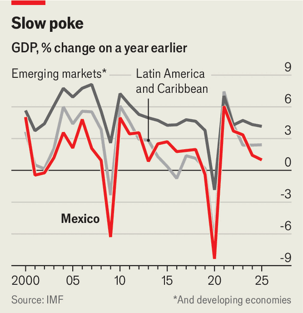
希内布姆的“墨西哥计划”，这一旗舰发展策略正陷入困境：2025年投资达到国内生产总值的22%，低于25%的目标。鉴于经济增长乏力且缺乏复苏迹象，很少有人相信政府能在她任期结束前（2030年）维持大规模福利支出。这些福利补贴支撑着更多纳党（Morena）的民意基础。与劳动制度改革（包括大幅提高最低工资和限制外包用工）相结合，这些措施在2018至2024年间使超过1300万墨西哥人（占全国1.32亿人口）摆脱贫困。期间最低工资已翻三倍，达到每天315比索（18美元）。一项将工时从48小时减至40小时的提案已提交国会审议。但同期墨西哥的财政赤字从约2%的GDP攀升至2024年的四十年高位5.7%。希内布姆承诺将赤字降至2.5%，但至今尚未实现短期目标。■
财政紧缩削弱了希内布姆女士在特朗普先生面前的筹码。墨西哥经济增长高度依赖美墨加协定（USMCA），这是一项自由贸易协定，将于今年接受审查。1月13日，特朗普先生称其“无关紧要”。他正确指出了墨西哥的问题在于法纪松弛和腐败。但面对财政紧张叠加经济疲软，希内布姆女士无法迅速解决这些问题。若特朗普先生真的退出USMCA，将彻底扼杀墨西哥满足其要求的希望。希内布姆女士在解决这一困境时面临的部分挑战源自国家复兴运动党（Morena）本身的特性。尽管该党纲表面左翼色彩浓厚，但党员结构松散，纪律薄弱。■
该党在早期曾无差别地吸纳候选人，因为其“只在乎胜利，不在乎遗产或基础建设”，墨西哥城大学（CIDE）的贾维尔·阿帕里西奥（Javier Aparicio）表示。该党的成功很大程度上依赖于洛佩斯·奥夫拉多尔（López Obrador）的个人魅力。公民运动（Morena）创始人之一、现任妇女部长希塔拉莉·埃尔南德斯（Citlalli Hernández）称，“最大的挑战”是保持该党对自身价值观的忠诚。谢因鲍姆（Sheinbaum）已开始展现自身影响力。2025年通过的反裙带法禁止政界亲属担任公职，被视为削弱洛佩斯·奥夫拉多尔盟友的举措。然而，其影响力依旧存在，谢因鲍姆的政治身份仍受该运动所构建的框架约束。公开决裂可能削弱她的手腕。反裙带法的实施被推迟至2030年。权力本身即是统一目标。■
洛佩斯·奥布拉多尔（López Obrador）削弱了选举委员会等监督机构的权力，声称自己是为“人民”行事。Morena党则否认这一点。赫尔南德斯（Ms Hernández）表示：“我们无意掌握绝对权力。”公民运动党（Citizens’ Movement）的帕特里夏·梅卡多（Patricia Mercado）对此持怀疑态度，该党是左翼中间派政党，与Morena无联盟关系。她说：“我认为他们想继续掌权，Morena内部许多人相信只有他们才能改变国家。”希内鲍姆（Ms Sheinbaum）看起来比洛佩斯·奥布拉多尔更不专制，但她推动了洛佩斯·奥布拉多尔的司法体系选举计划，并正在推进选举制度改革，包括削减政党公共资金以及减少按比例代表制选举的议席数量。■
这一切对莫雷纳党来说是利好。民调专家洛雷娜·贝塞拉（Lorena Becerra）表示：“我不清楚他们的动机是什么，但结果将是民主竞争的减少。”墨西哥人对莫雷纳党的主导地位并不在意。谢因鲍姆的民调支持率尚未跌破70%。但裂痕开始显现。一系列丑闻让该党关于反腐和紧缩政策的承诺显得空洞。人们对犯罪问题的担忧正在上升。谢因鲍姆缺乏洛佩斯·奥夫拉多尔的个人魅力。这使得过去被忽视的问题——增长缓慢、药品短缺、教育体系落后——更难以被忽视。去年莫雷纳党在几场本应获胜的地方选举中失利。“蜜月期已结束，”阿帕里西奥先生说，“你必须兑现承诺。”迄今为止，这并非莫雷纳党的强项。■
订阅我们的拉美专属通讯El Boletín（《简报》），以了解塑造这一迷人而复杂地区的各种力量。■
§032 美洲原题：Canadian soldiers are subject to Donald Trump’s orders · 板块：Americas · 栏目：美洲
1月17日，五角大楼“组建”了来自第11空降师的两个步兵营，驻扎在阿拉斯加。该师被称为“北极天使”，专门执行寒冷气候任务。最多可部署1500名士兵支持移民与海关执法局（ICE）及其他联邦特工在明尼阿波利斯的行动。该市已因唐纳德·特朗普的移民政策收紧以及本月一名37岁美国女性瑞妮·古德（Renee Good）被ICE特工射杀事件，成为抗议者与联邦当局冲突的焦点。但美国士兵并非唯一响应号召的人。
加拿大少将罗伯特·麦克布里德（见图）担任第11空降旅作战行动副指挥官。他所担任的职务，凸显了加拿大军人在特朗普的命令、加拿大军队的职责和公众舆论之间陷入尴尬处境的现状。加拿大与美国已持续数十年互派军事人员。除联合特遣队、情报共享及北约、北美防空司令部等组织外，加拿大国防部（DND）也常将加拿大武装部队（CAF）成员派往美军单位参与交流计划，有时长达数年。“交换军官在特定单位中担任固定职务，并需服从美国军队的命令与纪律。”加拿大退伍军人兼军事律师米歇尔·德拉普（Colonel-Maître Michel Drapeau）如此解释。
他曾在弗吉尼亚州的联合军种参谋学院学习，他表示当时自己仅在“军服颜色”上与美国同行不同。如今差异已更加明显。特朗普近期的一些命令与加拿大武装部队的价值观不符，也违背了加拿大的国家利益。在“南方尖刀行动”中，美国炸毁了涉嫌贩毒的船只，导致超过100人死亡；逮捕委内瑞拉独裁者尼古拉斯·马杜罗并非加拿大政策；特朗普威胁以武力夺取格陵兰岛的行为正在给北约带来压力，促使加拿大总理马克·卡尼考虑派遣加拿大军队前往格陵兰岛。派驻海外的加拿大军人需同时遵守美国命令和加拿大军事法律与程序。■
过去在联合行动中，加拿大士兵若接到与加拿大军事规章冲突的命令，可援引“豁免”程序（caveating）免于执行。这对其在外国武装部队中的行动施加了严格限制。德拉普上校认为并希望加拿大部队未参与组建第11空降旅（11th Airborne）。“加拿大主权必须放在首位，”他说，“如果允许这样做，将会引发严重后果。”截至本文发表时，加拿大国防部及总理办公室尚未就加拿大军人（包括麦克布里德将军在内）是否被豁免作出回应。
在文章发表后，加拿大国防部发表声明称：“目前没有现役军人参与明尼苏达州的行动，未经加拿大政府批准，他们也不得参与此类行动。截至目前，尚未收到相关请求。”加拿大武装部队近期公开表态显示，有多位高级军官赴美交流。包括麦克布里德将军在内，至少六名少将、一名海军少将和三名中将被派驻美国陆军、空军、海军、太空军及国防部。低级别人员的交流情况通常不公开，但可能有数百名加拿大士兵在美国服役。公开信息显示，部分人员已被部署至执行特朗普多项争议性命令的美军单位。
一位加拿大皇家空军飞行员正与美国空军进行交流，驾驶C-17环球霸王III运输机，这是一种可执行战术空投和空运任务的大型运输机。独立分析师兼研究员史蒂芬·沃金斯（Steffan Watkins）表示：“飞行数据表明，美国空军C-17运输机从美国境内[国土安全部]设施飞往萨尔瓦多的CECOT基地。”文章发表时，加拿大国防部尚未回应是否加拿大飞行员参与过这些任务的提问。1月21日，加拿大国防部称“加拿大武装部队未参与”。沃金斯指出，数据还显示E-3G哨兵预警机在委内瑞拉附近活动。这些飞机通常配备多国机组人员，包括加拿大籍飞行员。这些飞机曾用于“南方尖刀行动”（Operation Southern Spear）。■
此外，加拿大人员也参与佛罗里达州基韦斯特联合机构任务部队南方司令部（Joint Interagency Task Force South）的工作，为包括加勒比地区在内的各项行动提供情报支持。南军区公共事务官员表示，“有关加拿大武装部队（Canadian Armed Forces）人员部署地点及任务内容的提问应直接向加拿大武装部队询问。”加拿大部队与美国在加勒比地区已有密切合作。自2006年起持续运作的“CARIBBE行动”（enhanced counter-narcotics operations）即为典型，加拿大武装部队定期派遣舰艇和飞机赴加勒比地区执行反毒品任务。加拿大与美国海岸警卫队在搜救、监视及打击毒品和人口贩卖方面保持常态化合作。特朗普政府的强硬态度已使这种合作面临质疑。■
他多次威胁吞并的举动也迫使加拿大武装部队首次在超过一个世纪以来制定应对美国入侵的计划。这可能仍只是一个假设性担忧。加拿大参与特朗普的外交冒险并非如此。■ 编辑注（1月21日）：本文已根据国防部长办公室的评论进行更新
§033 美洲原题：The collapse of a Brazilian bank ensnares politicians and judges · 板块：Americas · 栏目：美洲
丹尼尔·沃卡罗在2019年成为巴西中型银行Banco Master总裁后开始挥霍无度。此后几年，他大肆购置房产、私人飞机、豪华酒店和足球队，甚至在女儿15岁生日宴会上豪掷300万美元。随着香槟不断流淌、私人飞机里程不断累积，一些人开始质疑Banco Master为何能如此迅速扩张。该银行的商业模式基于销售银行存款凭证，这是巴西广受欢迎的固定收益产品，但其提供的利率异常高。
危机在9月初初现端倪，当时Vorcaro先生突然试图出售这家银行。他找到了一位买家——巴西联邦区政府控制的巴西银行（Banco de Brasília，BRB）。然而当央行深入审查这笔并购细节时，却发现Banco Master缺乏流动性。调查人员发现，该银行曾以超过20亿美元的价格将毫无价值的信贷组合出售给BRB。不久后，Vorcaro先生试图搭乘私人飞机前往迪拜时被逮捕。巴西存款保险基金将向储户赔付75亿至100亿美元，这是巴西历史上最大规模的存款补偿。这场风波本可就此终结，但Banco Master的崩盘影响远不止银行业。原因在于Vorcaro先生多年来与巴西精英阶层建立了密切关系。■
此案揭露了巴西利亚（巴西首都）政界、金融巨头与司法部门之间的关联，损害了最高法院和国会的声誉。阴谋在11月中央银行下令清算巴西国家银行（Banco Master）后不久开始出现转机。联邦审计法院（TCU）成员若昂塔纳·德·耶稣（Jhonatan de Jesus）声称，中央银行行动过于仓促。该审计机构成员由国会任命，他下令调查中央银行是否可选择其他替代方案而非清算。一位参与此案的资深检察官表示：“此类干涉中央银行的权威非常罕见且令人担忧。” 若昂塔纳·德·耶稣与掌控国会的意识形态灵活派系“Centrão”关系密切，该派系长期存在腐败问题。Centrão政客们在巴西国家银行破产前曾试图保护其免受清算。■
前总统雅伊尔·博尔索纳罗（Jair Bolsonaro）的前首席幕僚塞罗·诺格雷拉（Ciro Nogueira）试图阻挠国会针对Banco Master的调查，并推动一项赋予国会罢免央行行长权力的法案。与此同时，右翼民粹主义者博尔索纳罗派系的巴西利亚州长伊巴内斯·罗查（Ibaneis Rocha）则积极支持BRB收购Banco Master，尽管多数分析师对此表示强烈反对。（一名法官随后因潜在政治干预解除了BRB首席执行官的职务。）维奥卡罗（Vorcaro）的连襟法比亚诺·泽特尔（Fabiano Zettel）——同样正接受调查——是博尔索纳罗2022年竞选活动的最大个人捐款人，同时也是右翼圣保罗州长塔尔西西奥·德·弗雷塔斯（Tarcísio de Freitas）竞选活动的首要捐款人。当调查人员打开维奥卡罗的手机时，发现了更多与权力核心的关联。■
银行与由亚历山大·德·莫拉es（Alexandre de Moraes）妻子经营的律师事务所签订了一份为期三年、价值2400万美元的协议。一位法律专家表示，该协议的模糊性及巨额金额在巴西标准下“并不正常”。不久后，一家报纸披露，莫拉es法官在巴西央行行长加布里埃尔·加利波洛（Gabriel Galípolo）参与巴西大师银行（Banco Master）清算前，曾多次致电或会面。莫拉es及其妻子否认有任何不当行为。总检察长以缺乏不当行为的证据为由，叫停了对这对夫妇的调查。莫拉es称他与加利波洛的会面仅涉及与巴西大师银行无关的事务。然而其专横作风已引起关注。■
1月14日，他启动对巴西金融情报机构和联邦税务部门的调查，以查明是否泄露了相关合同信息。公众舆论并未因此改善，其同事何塞·安东尼奥·迪亚斯·托弗利法官（José Antonio Dias Toffoli）也陷入类似争议。这位法官曾叫停针对巴西政界精英的多起反腐调查。托弗利法官与巴西民法银行（Banco Master）律师同乘私人飞机出行的时间，恰逢最高法院通过抽签系统指定他负责该银行案件。随后曝光的细节显示，泽特尔（Mr Zettel）在托弗利兄弟名下度假村投资逾100万美元。目前尚无证据表明托弗利知情，他本人也未对此公开表态。然而这些关联加深了巴西选民对本国最高法院缺乏公正性的质疑。■
为应对这些疑虑，巴西最高法院新任主席爱德森·法钦（Edson Fachin）提出，由法庭采用借鉴德国宪法法院模式的伦理准则。法钦的同事们对此嗤之以鼻。这场肮脏闹剧的唯一明确赢家是巴西央行行长加利波洛（Galípolo），他始终拒绝施压要求救助巴西民法银行（Banco Master）。耶稣（Jesus）被迫撤回调查。此后，加利波洛要求立法机构赋予该银行超越现有运营自主权的行政、预算和财政自主权。此举将赋予央行更强大的金融监管权力，并摆脱巴西政府可疑的幕后操控。■ 注册订阅《El Boletín》电子简报，了解塑造拉美这一复杂地区的各种力量。
§035 中东与非洲原题：After Iran’s massacres, tensions grow inside the regime · 板块：Middle East & Africa · 栏目：中东与非洲
表面看来，一切又归于平静。政权重新确立了控制。恐惧的天花板短暂破碎后已被修复。戴面具的男子在首都德黑兰实施事实上的军事管制，并在黄昏至黎明期间实施宵禁。安全部队搜查屋顶上的Starlink卫星天线，并突袭涉嫌支持抗议活动的公司。检查站遍布抗议活动最初爆发的中小城市。家长们支付“子弹税”——数千美元的赎金——以取回被射杀子女的遗体。
死亡人数持续攀升。总部位于华盛顿的人权监测组织hrana（人权观察）已核实超过4,500人死亡和26,000人被捕。德黑兰市民，包括官员，称实际死亡人数可能接近20,000人。1989年中国领导人通过在天安门广场附近处决数千人，成功平息了大规模抗议活动。伊朗似乎正重演这一剧本。伊斯兰共和国的权力结构至今未变。当选总统马苏德·佩泽希安最初曾短暂称示威活动为合法，但随后其谨慎态度被神权政权及其执行者的力量所取代。担任最高领袖36年的阿里·哈梅内伊指责抗议者从事叛乱活动，并为处决他们辩护。其顾问认为，前国王在1979年因缺乏决断力且选择逃亡而失势。哈梅内伊目前未显露重蹈覆辙的迹象。然而，表面之下，该体制已受到冲击。■
■官员及亲信称伊朗精英圈内“议论纷纷”，一位常往返伊朗、与高层人士保持联系的旅人如此描述。他说：“一条底线已被突破，现状已难以为继。”一位与部分官员关系密切的开心果种植户表示，神职人员已陷入民众鲜血的泥沼，他们自己挖好了坟墓。街头的震惊正逐渐转化为愤怒，“处死哈梅内伊！”的呼喊声再次响起——白天在葬礼上，夜晚在屋顶上。在伊朗内外，伊朗人正在勾勒可能的权力更迭路径。在政权内部，多数讨论聚焦于让86岁的哈梅内伊退居幕后。即便在屠杀事件发生前，内部人士已抱怨其在与美国核谈判中的固执立场。
他们坚持保留象征性福利计划，认为此举错失了2025年可能解除制裁的协议。“我们预计最高领袖将在3至12个月内下台，”一位仍在伊朗运营的股市投资者表示，他引用最高领袖的年龄和不受民众欢迎程度作为依据。其他人则将目光投向国外。“我们过去担心会变成委内瑞拉，”在公务员常去的咖啡馆里，有人开玩笑说，“现在却担心不会了。”改革派仍希望颠覆政治等级制度，将权力从宗教领袖转移至世俗总统。有人主张设立宪法象征性元首；另一人则提议将“伊斯兰”从共和国中剥离，挽救国家残余机构。“削减神学院经费及其傀儡毛拉的开支，”一位神学院毕业生如此认为，他主张通过节省开支避免国家破产。多数人更倾向于由强势人物领导的宫廷政变，而非由软弱总统主导的政变。■
建议的人选包括议会议长穆罕默德·巴格赫·卡利巴夫（Mohammad Bagher Qalibaf），他曾是伊斯兰革命卫队（IRGC）的指挥官，以及资深权势人物阿里·拉里贾尼（Ali Larijani），他是什叶派宗教学者之子，现任国家安全委员会主席。两人均育有子女，部分子女曾试图或正在北美生活。然而由于恐惧情绪高涨，任何行动都必须在安全部队的庇护下进行。据信伊斯兰革命卫队仍约有17万名成员；由巴列维王朝建立的正规军约有40万人。关于卫队成员因拒绝命令而被处决的说法尚未经证实。但伊斯兰革命卫队并非铁板一块，其指挥体系在去年夏天以色列战争中遭到破坏。一些人可能选择自保而非效忠。一名官员坚称：“伊斯兰革命卫队对伊朗忠诚，而非对哈梅内伊忠诚。”反对派也在为“后选举”时代做准备。■
目前，雷扎·帕尔拉维（Reza Pahlavi，前国王之子）是最引人注目的人物。他填补了政权在国内镇压造成的空白，也在一定程度上弥补了流亡海外的君主派威胁所留下的空缺。但他的抱负正面临来自广泛进步派阵线的挑战，该阵线对君主派承诺民主持怀疑态度。该阵线声称呼应了伊朗活跃的民间社会的声音，2009年正是这些声音促使数百万民众走上街头反对舞弊选举，迫使政权放松强制头巾规定。2022年“女性、生命、自由”抗议活动后，该阵线推动政权放宽强制头巾规定。尽管缺乏强有力的领导人，该阵线仍获得教师工会、卡车司机工会、学生、女权活动人士以及数千名政治犯的支持，其中包括去年底再次被监禁的诺贝尔和平奖得主纳尔吉斯·穆罕默迪（Narges Mohammadi）。变革蓝图正在酝酿中。■
自由网络（Azadi Network）是由“妇女、生命、自由”运动活动家发起的女性领导集体，该组织近日将在伦敦发布一份39页的《民主转型框架》。该框架提议在国际监督下进行100天的过渡期，随后举行受监督的选举，选出宪法委员会并任命七人领导委员会。1月18日，14名宗教人士和知识分子发布独立宣言，呼吁政权“停止镇压、转向民主”。至少一名签署者要求对哈梅内伊（Khamenei）因近期屠杀事件接受审判。在政权摇摇欲坠之际，各派系间的竞争可能使反对派自身瓦解。2024年，荷兰研究机构gamaan的一项调查显示，89%的受访者支持民主，但对民主的具体形式存在分歧：26%倾向世俗共和国；21%希望与君主制结合；20%支持伊斯兰共和国。■
许多人支持巴哈林（Mohammad Pahlavi）是因为他具有较高的知名度。另一些人则担心用一个独裁者取代另一个独裁者。“如果我们不发声，就会重蹈1979年的覆辙，那时我们跟随霍梅尼（Khomeini）走上了放弃民主梦想的道路，”一位资深女性异议人士帕拉斯特·弗鲁哈尔（Parastou Frouhar）说道，她往返于德国与伊朗之间。目前，哈梅内伊（Khamenei）仍掌握实权。他依靠约1300万选民的支持，这些选民在上届选举中支持强硬派，并像念珠般紧随其后。更广泛的选民群体或许仍宁愿选择专制以换取秩序，期待有限让步，例如赦免政治犯，可能为渐进式转型铺平道路。然而，悬而未决的是唐纳德·特朗普（Donald Trump）。一支规模堪比去年夏季袭击前集结的海军特遣舰队正逼近伊朗海岸。■
一位与政权关系密切的商人表示，与其由外部强加的毁灭，不如内部变革。■ 订阅《中东简报》，每周获取关于这个复杂且具有深远影响的地区最新动态。
§036 中东与非洲原题：Trump’s grandiose peace plans may spell more pain for Gaza · 板块：Middle East & Africa · 栏目：中东与非洲
“我们的目标是在接下来的日子里让民众露出笑容，”巴勒斯坦加沙行政委员会（NCAG）于1月16日启动时，阿里·沙阿特如是说。然而加沙民众近期并无笑容可言。尽管沙阿特怀有此愿，但新成立的机构恐怕难以改变现状。这是加沙最接近政府的组织，但尚不清楚它何时能接管民事事务。截至目前，以色列尚未允许其15名成员进入该地区，他们的首次会议在开罗举行。 ■
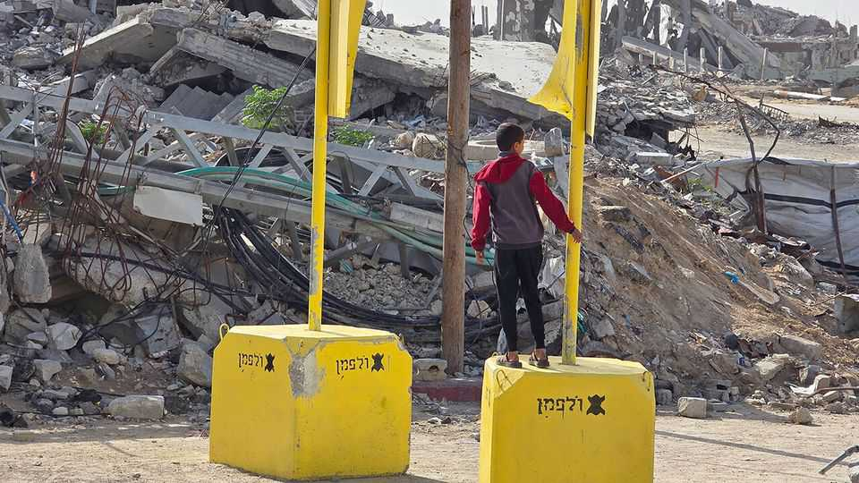
自加沙脆弱停火协议生效三个多月来，唯一可见的进展是ncag（非领土、非武装组织）的亮相——该组织名义上由“技术官僚”组成，既不隶属于控制加沙地带近半区域的伊斯兰组织哈马斯，也不隶属于巴勒斯坦权力机构。白宫已宣布设立不少于三层的官方机构。第一层是“加沙执行委员会”，成员包括土耳其外长哈坎·费丹、卡塔尔外交官阿里·阿尔·萨瓦迪、埃及情报局长哈桑·拉沙德。其上则设立“创始执行委员会”，成员包括特朗普的地区特使史蒂夫·威特科夫、美国国务卿马尔科·鲁比奥、总统女婿贾里德·库什纳以及前英国首相托尼·布莱尔。部分成员将同时担任两层机构职务。■
值得注意的是，这两个机构中都没有任何巴勒斯坦人。唯一一位以色列人是一位伦敦的投资者。由特朗普先生担任主席的“和平董事会”将负责监督所有事务。总统已邀请多位世界领导人加入，包括以弗拉基米尔·普京为代表的知名和平使者，后者是俄罗斯总统。到目前为止，只有少数国家接受了邀请，包括以色列、阿联酋、匈牙利和白俄罗斯。永久会员资格的费用为10亿美元。其章程中未提及加沙。相反，该机构致力于“有效的国际和平建设”，看起来像是对联合国的挑战者。这一切并未表明加沙将出现更加持久且有意义的和平。内塔尼亚胡总理已对土耳其和卡塔尔官员在加沙执行委员会中的存在表示反对，因为这两个政府一直支持哈马斯。■
特朗普的20点和平计划第二阶段本应包含比ncag（国家协调政府事务委员会）更多内容。原计划部署国际稳定部队（isf），迫使哈马斯开始解除武装，以色列撤出更多部队，并至少迈出重建被毁加沙地带的第一步。然而这一切并未实现。取而代之的是，以色列在加沙地带建立了连串防御工事，并将直接控制的“黄区”扩大至约55%。这片区域已沦为一片荒芜之地，仅少数加沙人——与以色列合作的部族和犯罪团伙成员——仍在此生存。以色列国防军（idf）正在加沙内部深处建设永久性据点，铺设供水和排污管道。以军官员称，他们可能会长期驻扎。■
在加沙其余地区，大部分人口正经历着残酷的严冬，主要居住在帐篷或仅勉强修补的被轰炸建筑中，哈马斯掌握着主导权。该组织招募了数千名新战士，并对持不同政见者实施暴力镇压。加沙大部分农田位于以色列划定的黄区，当地人口依赖有限数量的援助组织和私人公司提供的食品和药品。以色列尚未透露何时会允许急需的建筑材料进入加沙。以色列官员警告称，由于无人解除哈马斯武装，以色列国防军（IDF）将不得不再次进入加沙“摧毁哈马斯”。据加沙卫生部门统计，战争期间已有超过7万人死亡。自停火协议生效以来，又有400多人在交火和以色列空袭中丧生。■
目前至少美国正在阻止以色列发动另一次大规模行动。特朗普的各类委员会如何助力这些努力尚不明确。■ 注册订阅《中东简报》（Middle East Dispatch），每周获取关于这个复杂且影响深远地区的重要动态。
§037 中东与非洲原题：How the Kurds lost control of north-eastern Syria · 板块：Middle East & Africa · 栏目：中东与非洲
底格里斯河畔的库尔德女性战士雕像被推倒，美国提供的悍马车被遗弃在道路旁。数日内，曾是美国在十年反伊斯兰国（IS）斗争中伙伴的叙利亚民主力量（SDF）库尔德武装崩溃，随之终结了库尔德人在叙利亚的自治实验。崩溃始于叙利亚民主力量与大马士革长达一年的谈判陷入僵局。■
1月6日，政府军与叙利亚民主军（Syrian Democratic Forces，简称SDF）在阿勒颇（叙利亚第二大城市）的库尔德人聚居区爆发冲突，促使政府增派部队。不到一周后，叙利亚民主军撤离了阿勒颇。叙利亚部落察觉时机已到，决定脱离库尔德人阵营，转而与叙利亚政府结盟。这标志着叙利亚民主军的终结。该组织对伊斯兰国（Islamic State，简称IS）的军事行动曾获得国际赞誉，但随后试图治理叙利亚阿拉伯人占多数地区的政治计划却难以为继。如拉卡（Raqqa）等东北部城市，虽由库尔德人从伊斯兰国手中解放，但当地拥有大量逊尼派部落人口，对叙利亚民主军的统治感到不安。近年来，叙利亚民主军逐渐变得更加专制。
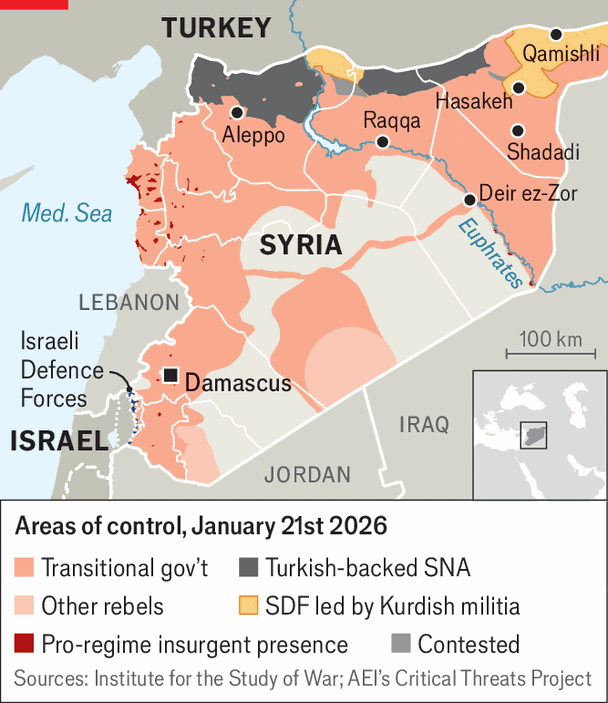
庆祝叙利亚新总统阿赫迈德·阿尔-沙拉（Ahmed al-Sharaa）并挥舞叙利亚革命旗帜的行为成为被逮捕的理由。“这是我们获得解放的时刻，”拉卡的一位阿拉伯律师说道。当政府军抵达拉卡和代尔祖尔北部时，该地区大部分已落入部落武装之手。数以千计的阿拉伯籍sdf招募士兵投诚。战斗几乎不存在。与此同时，阿赫迈德·阿尔-沙拉发布总统令，承认库尔德人文化权利，削弱了sdf的谈判地位。sdf的处境堪忧。其部队将被解散，战士将被编入叙利亚军队；不会设立以库尔德人为主的部队。在对抗中建立的自治政府将被纳入新国家。数周前，该组织曾被提出更优条件：为其领导人马兹卢姆·阿布迪（Mazloum Abdi）提供三个军级单位和高级国防职位。■
美国似乎已不再视叙利亚民主力量（Syrian Democratic Forces, SDF）为推进其地区战略的重要工具。美国驻叙利亚大使表示，该组织最初的任务“已基本完成”，库尔德人的最佳希望如今寄托在沙拉亚政府身上。内部派系斗争进一步削弱了该组织的战斗力。1月20日，叙利亚政府宣布实施四天停火协议，以给SDF时间移交其机构控制权。政府军集结在哈塞克市（该市有大量库尔德人口）附近，表示一旦停火期结束将发起进攻。一名叙利亚政府官员向《经济学人》透露，若库尔德武装届时未投降，将遭到攻击。但攻占仍被重兵把守的库尔德城镇将代价惨重。叙利亚库尔德人也担忧教派冲突。政府军称卡姆希利（Qamishli）是富裕库尔德人的城市，是偷车的好地方。■
另一个隐患依然存在。多年来，叙利亚民主军（SDF）一直在叙利亚东北部关押数万名伊斯兰国（IS）囚犯，包括妇女和儿童。在混乱局势中，已有超过100人越狱。叙利亚民主军的瓦解可能结束了这场战争，却可能埋下另一场冲突的种子。■ 订阅《中东简报》，每周获取关于这个复杂而关键地区的重要资讯。
§038 中东与非洲原题：Uganda’s opposition leader is on the run · 板块：Middle East & Africa · 栏目：中东与非洲
博比·维因是如何从家中逃脱士兵的，他并未透露。他当前的下落成谜。他通过电话表示，乌干达总统选举结果是“完全的谎言”，他和其支持者正“致力于解放我们的国家”。这位从歌手转型为政客的罗伯特·基加拉尼（Robert Kyagulanyi）是1月15日选举中最具人气的反对派候选人。如今他担心自己的生命安全。这不是夸张之词。 ■
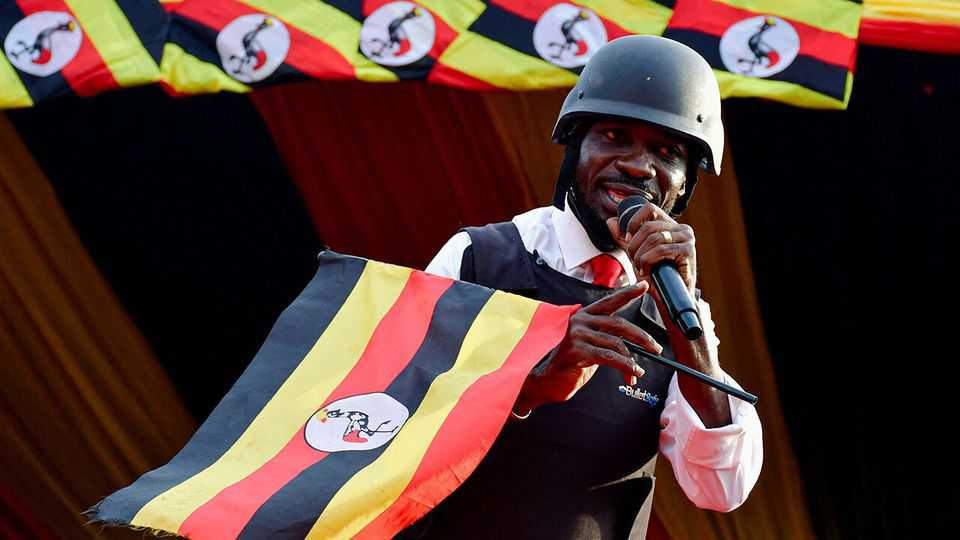
1月19日社交媒体上，乌干达军队司令穆霍齐·卡内鲁加巴（Muhoozi Kainerugaba）发帖称，他想杀死葡萄酒先生（Mr Wine）并割下他的睾丸。他还吹嘘其手下上周已杀死22名反对派支持者，称这个数字“太低”。他的威胁更加令人担忧，因为他正是总统穆塞韦尼（Yoweri Museveni）之子。这些言论彻底嘲讽了所谓选举是公平竞争的任何想法。当穆塞韦尼以近72%的得票率被宣布为胜选者时，几乎没有庆祝的迹象。这位40年来掌权的总统对国家的控制力如此之强，以至于根本无法得知乌干达人真实投票情况。■
根据官方数据，有一半的人甚至懒得参与投票，这并非冷漠的象征，而是一种放弃的迹象，因为在该国权力从未通过选举更替。“不参与投票是唯一一种警察无法以之起诉的抗议形式，”记者查尔斯·奥尼亚戈-奥博写道。在首都坎帕拉，士兵和警察仍在街头巡逻。人权活动人士认为，自投票日以来，可能有超过一千人被拘留，但很难掌握确切数字，警方也不愿提供具体数据。最直言不讳的民间组织已被暂停活动，许多活动人士正躲藏在暗处。温先生的政党“国家统一平台”称，其三位副总统已被拘留。安全部队在一名反对派议员家中，以模糊的背景，至少射杀了该党七名支持者。■
镇压的目的是扼杀任何抗议活动。温先生（Mr Wine）以“抗议投票”为竞选口号，他表示自己始终清楚仅靠选举无法带来改变。但只要他仍处于藏匿状态，坎帕拉（Kampala）仍将保持沉默。另一位可能动员民众的候选人、四次总统候选人基扎·贝西格耶（Kizza Besigye）已入狱逾一年，其妻称他病情严重却得不到妥善治疗。反对派陷入混乱。那么，这场被政权视为军事行动、被反对派视为骗局、半数选民弃权的选举究竟有何意义？乌干达人并非唯一提出疑问的人。去年，在邻国坦桑尼亚，政府拘押了主要反对派候选人，屠杀示威者，并让现任总统获得98%的选票。■
刚果共和国和吉布提的选民也未对本国未来抱有实际参与的期待。这类选举的主要功能是维持既得利益集团，如议员，而非推动高层变革。自冷战结束及随后的民主浪潮以来，选举也逐渐成为获取国际合法性的方式，但这一规范正逐渐消退。过去，穆塞韦尼总统更多通过压制或收编反对派领袖来维持权力，而非采取极端手段。对温先生造成伤害不仅收效甚微，反而可能引发反噬，毕竟政权内部的冷静人士对此早有预判。但当坎内鲁加巴将军热衷于塑造自己嗜血暴徒的形象，并公开渴望接替其父的职位时，这种安抚显得微不足道。“我们只是想要自由”，温先生如此说道。■
订阅《Analysing Africa》每周通讯，让您随时掌握关于世界最年轻、最不为人知的大陆的最新动态。■
§039 中东与非洲原题：African trade has been vastly underestimated · 板块：Middle East & Africa · 栏目：中东与非洲
你不会料到撒哈拉以南边缘的一个小市场能卖出多少海鲜。但位于加纳北部、与布基纳法索接壤的帕加镇却有很多。阿多贾·阿尔-哈桑从西非各地采购干鱼。当塔科拉迪（加纳港口城市）的供应短缺时，她和被称为“市场女王”的女性贸易者们会租一辆卡车北上前往布基纳法索首都瓦加杜古。她们购买的鱼可能来自多哥、贝宁甚至沿海尼日利亚。对当地商人而言，这些女王的贸易网络出人意料地国际化。 ■
非洲国家之间贸易量过低，是政策制定者常提的抱怨。官方数据显示，非洲大陆仅15%的贸易发生在内部。解决这一殖民遗留的扭曲影响——即非洲出口商被绑定海外市场而与邻国脱节——是非洲大陆自由贸易区（AfCFTA）的核心目标，该协议于五年前正式生效。为确保未来几十年粮食安全，非盟希望十年内粮食产量翻倍，农产品内部贸易额增长三倍。这一目标值得肯定，但部分建立在误解之上。近年数据显示，官方统计严重低估了非洲内部贸易规模，尤其是食品贸易（见图表）。■
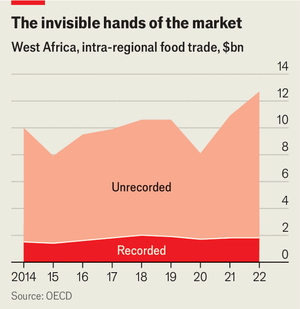
根据经合组织（OECD）下属的萨赫勒与西非俱乐部最新研究，该俱乐部主要由富裕国家组成，西非地区每年内部贸易的食品价值实际上高达100亿美元。这一数字是官方统计的六倍之多。在非洲部分区域保护主义抬头的背景下，这些发现对那些追求农业自给自足的领导人而言具有警示意义。非洲大陆大部分食品贸易未被记录。法国智库CEPII的安托万·布埃（Antoine Bouët）指出，当货物通过公路运输（这是常态）时，统计工作往往“灾难性”失败。例如，牲畜贸易通常由牧民完成，令海关官员沮丧的是，牧民很少通过官方边境检查。■
当这些未记录的贸易流量估算与官方数据结合后，西非地区未加工食品出口中，剔除腰果和可可后的区域间贸易占比从三分之一跃升至五分之三，据OECD统计，这一比例与欧盟相当。不仅限于食品，2018年贝宁的一项CEPII研究发现，官方统计数据低估了贝宁与邻国尼日利亚整体贸易价值，进口低估50%，出口低估85%。研究指出，贸易商品包括工业制品和纺织品。传统观念认为像加纳市场女王这样的商贩只是小本经营，这种看法同样存在偏差。OECD发现，西非未记录食品贸易中近90%为大规模交易，涉及重型卡车运输。■
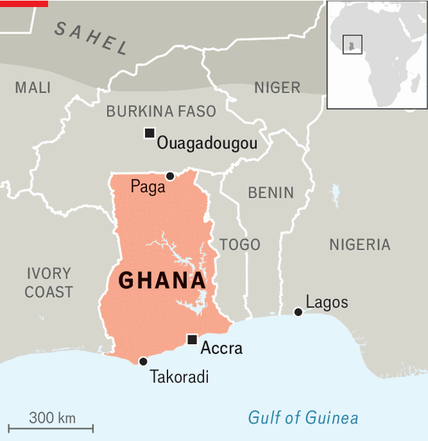
就连帕加的番茄女贩也雇用卡车车队将农产品运往远方。加纳近半数对非贸易额流向与其无陆地接壤的国家（见地图）。更紧密的区域市场将提升粮食安全。西非经济货币联盟（ECOWAS）贸易专家布拉希马·西塞指出，萨赫勒国家拥有额外牲畜可供出口，而沿海邻国则面临木薯和山药等根茎类作物的过剩。通过支持区域贸易，政府可大幅缓解短缺和价格波动。不幸的是，太多非洲国家正转向保护主义以提升所谓“粮食主权”。去年退出ECOWAS的布基纳法索、马里和尼日尔是主要肇事者。■
奥果杜古的商贩抱怨政府强制要求他们先在当地采购如鱼类等食品，才能进口。基塞先生指出，布基纳法索近期对乳木果油出口的限制措施，旨在促进国内乳木果油加工业，却导致加纳和科特迪瓦的工厂关闭。贝宁在2022年对包括大米在内的农产品实施出口限制和税收。赞比亚在2024年至2025年间封锁玉米出口。尽管作出承诺，许多政府仍未加快实施非洲大陆自由贸易区（AfCfTA）的进程。经济合作与发展组织（OECD）的阿尔班·马斯·阿帕里斯指出，政策制定者在推动出口时仍过于侧重海外市场。■
此外，佛罗里达大学西非贸易专家奥利维耶·瓦尔特（Olivier Walther）认为，“国家精英往往真正受益于区域一体化的不完善之处”，例如通过利用高关税和低效海关程序带来的套利机会。一些国家担心本国产业会被南非或摩洛哥等大国的廉价进口产品压垮。非洲贸易远非人们常说的那样微不足道，但其潜力仍有待进一步释放。■ 注册订阅《Analysing Africa》，每周获取关于世界最年轻、最不为人知大陆的深度洞察。
§041 欧洲原题：Donald Trump’s bullying is irritating his European populist chums · 板块：Europe · 栏目：欧洲
特朗普威胁“针对国家主权”的言论，被一位欧洲政治领导人于1月17日谴责为“不可接受”，该领导人表示，美国总统威胁对派遣军事人员至格陵兰岛的八国欧洲国家额外征收10%关税。他补充道：“商业勒索同样令人无法容忍。”两周前，这位领导人曾批评美国对委内瑞拉尼古拉斯·马杜罗的拘押行动：“尊重国际法和国家主权不能选择性适用。”
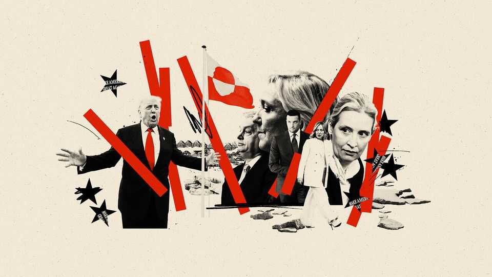
争议人物并非自由派民主人士，而是法国极右翼政党国民联盟（National Rally，简称RN）主席乔丹·巴德尔拉（Jordan Bardella）。他与欧洲其他“民族主义者”从特朗普连任及他融合“国家优先”“反移民”“环保怀疑论”的民族主义组合中汲取灵感。但特朗普政府多次威胁丹麦对格陵兰岛的主权，已使他们与MAGA运动的联系趋于紧张。特朗普政府对欧洲民族主义者的支持态度明确。美国去年的国家安全战略文件指出，“欧洲民族主义政党影响力的增强……令人充满乐观。”特朗普就职典礼的嘉宾名单堪称极右翼势力的“名人录”。■
出席的包括意大利总理乔治亚·梅洛尼（Giorgia Meloni）；英国改革党（Reform UK）领导人奈杰尔·法拉奇（Nigel Farage）；德国极右翼政党“另类选择”（Alternative for Germany, AfD）代表；以及法国保守民族主义者埃里克·泽穆尔（Eric Zemmour）和玛丽昂·马雷夏尔（Marion Maréchal），后者是国民联盟（RN）领导人玛丽娜·勒庞（Marine Le Pen）的侄女。MAGA网络长期以来与美国所谓“欧洲文明盟友”保持联系，正如美国国务院去年的一份备忘录所称。一些接触则隐秘进行。例如去年5月，特朗普的盟友、智库赫尔曼·克里滕伯格基金会（Heritage Foundation）主席凯文·罗伯茨（Kevin Roberts）曾前往巴黎，会见多位右翼强硬派人士。其他行动则毫不掩饰。埃隆·马斯克（Elon Musk）和史蒂夫·班农（Steve Bannon）曾出席梅洛尼领导的“意大利兄弟党”（Brothers of Italy）年度节日Atreju。去年在慕尼黑■
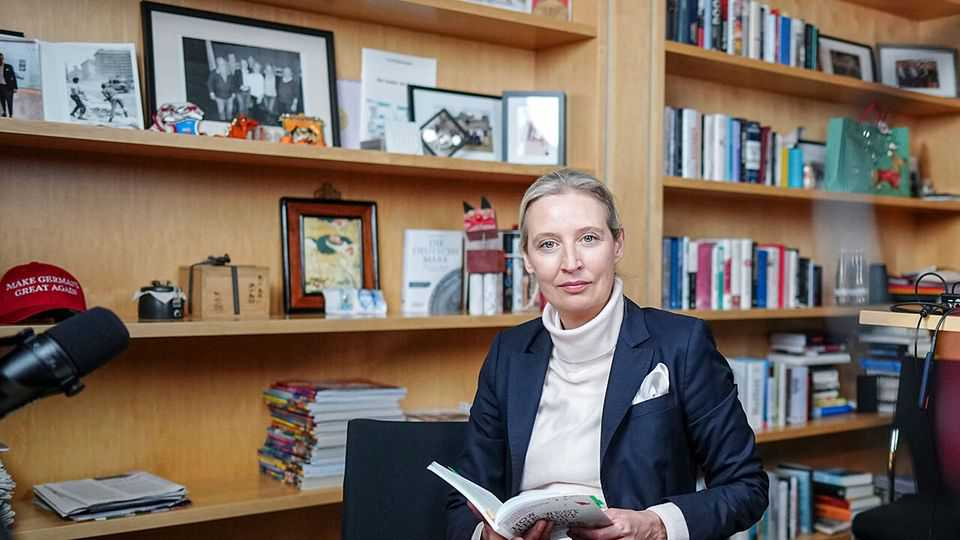
美国副总统万斯会见了德国另类选择党（AfD）联合领导人艾丽丝·魏德尔，并谴责了将她的政党孤立的“防火墙”。去年夏天，特朗普任命房地产合伙人兼女婿贾里德的父亲查尔斯·库什纳为驻巴黎大使；12月，库什纳主持了与勒庞女士和巴德尔先生的会面。然而，特朗普近期的威胁让一些欧洲民族主义者感到不安。魏德尔女士表示，总统违背了其“根本性竞选承诺”，即不干涉他国事务。特朗普的冒险主义行为正在加剧德国另类选择党内部的分裂。一些人认为，获得MAGA的支持如此重要，公开谴责美国反而适得其反。而该党反美派系的成员则重提了德国对美国的附庸之忧。另一个例子是法国，该国将在2027年举行总统选举。■
民调显示，国民联盟（RN）的候选人将是热门人选，无论是被禁止参选五年但仍有号召力的勒庞，还是巴德尔拉。国民联盟打造了一条明确的竞选信息——实质上是“法国优先”，带有明显的特朗普式回响。一名国民联盟官员表示：“即使我们不使用‘让法国再次伟大’的口号，这正是我们想要传达的核心。”然而，国民联盟对MAGAsphere的暧昧态度，比其欧洲盟友更为模糊，这归因于戴高乐主义外交传统中对美国的强烈独立性。梅洛尼女士和匈牙利总理维克多·奥班倾向于称赞特朗普，而巴德尔拉则更为谨慎。
他欣赏美国总统为本国利益辩护的方式，但告诉《经济学人》：“他采取的是一种非常美国化的风格，既不欧洲，更不法国。”政治科学家多米尼克·雷尼埃（Dominique Reynié）表示：“MAGA对国民联盟（RN）而言颇为复杂，因为法国人不喜欢特朗普，公众舆论对美国持怀疑态度。”国民联盟选民对特朗普的评价（30%）不如德国支持德国选择党（AfD）的选民（35%）或英国支持改革党（Reform）的选民（50%）积极。国民联盟正试图调和其传统议程——捍卫国家主权，抵制欧盟超国家联邦主义者——与新需求，即与欧盟国家丹麦建立团结。■
法国复兴党议员法比斯·勒热里（Fabrice Leggeri）否认存在矛盾，称：“我们的立场与我们对主权的理解是一致的。”他指出，该党支持由民族国家组成的欧洲，这些国家“能够重获强大话语权，在面对特朗普或中国的武力展示时赢得尊重”。并非欧洲所有民粹右翼势力都对特朗普的威胁表示担忧。波兰民族主义者保持沉默，希望不损害本国与西方的紧密跨大西洋关系；西班牙的 Vox 党和荷兰的基尔特·威德尔斯（Geert Wilders）也未表态。梅洛尼女士（Giorgia Meloni）未直接与特朗普对峙，而是称存在“沟通”问题（尽管她并未派遣军队）。对许多欧洲民族主义者而言，风险在于特朗普的强硬态度可能成为选举负担。
去年他威胁吞并加拿大，导致民粹主义保守派皮埃尔·波利耶夫（Pierre Poilievre）遭遇惨败。法拉奇（Mr Farage）试图在右翼反特朗普群体与支持特朗普的核心群体之间寻求平衡，称特朗普威胁吞并格陵兰岛“是错误的”。出于相同原因，法国国民联盟（RN）正努力在强硬对特朗普的立场与自身版本的欧洲怀疑主义之间取得平衡。1月19日的民调显示，73%支持法国中间偏右共和党的受访者反对任何美国吞并格陵兰岛的行动，而支持RN的受访者中这一比例为59%。RN希望在2027年争取这些共和党人。MAGA显然在帮助那些希望削弱欧盟的政党赢得选举。但特朗普威胁越明显，其政治风险就越大。■ 要掌握欧洲最大新闻动态，请订阅我们的周度专属通讯《Café Europa》。
§042 欧洲原题：An awful crash blots Spain’s gleaming super-fast trains · 板块：Europe · 栏目：欧洲
欧洲 | 阻碍进步 西班牙光鲜亮丽的高速列车遭遇严重事故 世界第二长的高速铁路网络是该国的骄傲。高速列车穿梭于广袤国土之间，既是日常便利，也象征着现代与效率。然而1月18日晚发生的列车相撞事故，造成至少43人死亡、逾150人受伤，令西班牙民众震惊。这起事故也将引发对基础设施投资优先级的质疑。事故发生在一辆从马拉加开往马德里的列车最后三节车厢脱轨，阻塞了南行线路。■
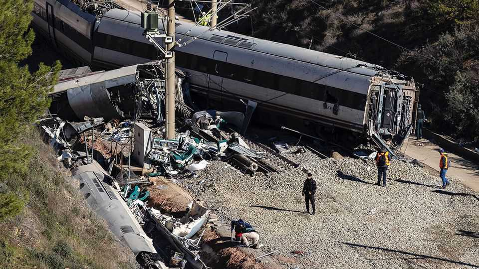
事故列车由Iryo公司运营，该公司由意大利国家铁路公司（Trenitalia）领导。20秒后，隶属西班牙国家铁路公司（Renfe）的另一列列车撞上了它们。救援人员描述了如同空难般的惨状。两列列车均未超过250公里/小时的速度限制。Iryo列车不足四年车龄，且三天前刚完成检查。事故发生路段的轨道去年刚完成翻新。西班牙首相佩德罗·桑切斯（Pedro Sánchez）在事故地点亚当兹村（Adamuz）视察时称：“我们都在问自己，这究竟是怎么发生的。”确实如此。这是西班牙首次发生高速列车相撞事故，也是自2013年以来最严重的铁路事故。初步调查显示，一块磨损的鱼尾板导致两段轨道之间出现间隙。全面调查可能需要数周甚至数月的时间。■
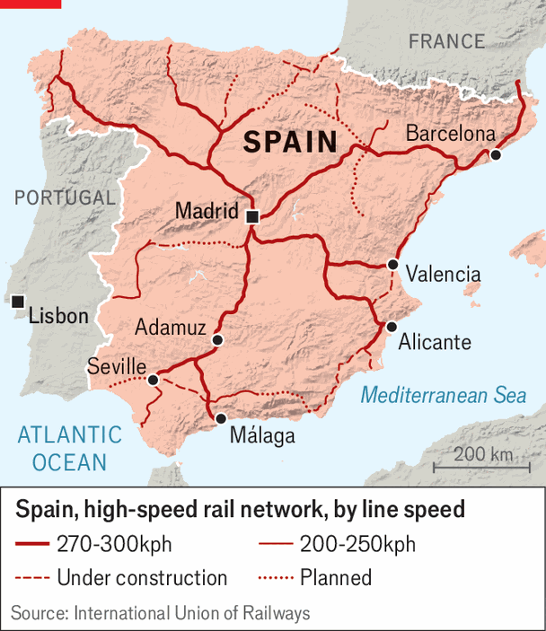
但背景引发诸多疑问。该铁路网络因电缆盗窃、维护问题或极端天气频发而出现日益严重的延误和中断。1月20日，亚当兹碰撞事件两天后，一辆郊区列车在巴塞罗那附近遭遇暴雨引发的墙体坍塌，导致一名实习司机死亡，37人受伤。这些问题恰逢西班牙高速铁路部分线路市场化改革取得商业成功：自2021年起，Iryo与法国竞争对手共同挑战了Renfe此前的垄断地位。最繁忙线路的客流量激增（最高达70%），同时票价持续下降。火车司机工会已宣布将于下月发起为期三天的罢工，以表达对安全问题的担忧。西班牙铁路投资在金融危机后一度下降，但近期已有所回升。■
一些铁路专家担忧，政府将扩展铁路网络置于维护之上。西班牙国家铁路公司Renfe和铁路基础设施管理机构Adif都是政治任命者的温床。尽管事故可能与这些问题无关，但围绕这些问题的讨论仍将持续。■ 为掌握欧洲最大新闻动态，订阅我们的周度专属简报《Café Europa》。
§043 欧洲原题：A German company is poised to send a rocket into space from Norway · 板块：Europe · 栏目：欧洲
，在闪烁的极光下，一枚火箭正准备从挪威峡湾旁升空。德国初创公司Isar Aerospace（Isar Aerospace）正在安达亚太空中心进行倒计时程序，希望首次实现从欧洲大陆将物体送入轨道。原定于1月21日发射的火箭因技术原因推迟，预计近日将执行发射任务。若成功，将标志着欧洲相对保守的航天雄心的一大飞跃。欧洲迫切需要发射卫星。看看乌克兰战场的局势便知原因。
星链（Starlink）卫星群对乌克兰武装部队至关重要，该卫星群由埃隆·马斯克（Elon Musk）运营。依赖一家由欧洲批评者经营的公司来保障国防是不明智且昂贵的。欧洲航天局（European Space Agency, ESA）空间运输部主任托尼·托尔克-尼尔森（Toni Tolker-Nielsen）表示，太空自主权是欧洲当前迫切的地缘战略要务。目前欧洲要发射卫星，需将卫星运送6000公里至南美洲的法属圭亚那。欧洲航天局在库鲁（Kourou）的航天发射场适合执行特定任务。其低纬度位置利用了地球自转速度在赤道处最快的特点，为火箭提供额外的轨道速度助推，节省燃料和成本。但一个发射场显然不够。2025年共有324次轨道发射任务，其中仅有8次由欧洲完成。美国完成193次，中国93次，俄罗斯17次。■
欧洲有三个发射场竞相提供直接发射服务：挪威的安德亚（Andoya）、瑞典的埃斯兰格（Esrange）以及苏格兰设得兰群岛的萨克沃德（SaxaVord）。高纬度发射对于极地轨道和太阳同步轨道（SSO）更为省燃料，这类轨道每天同一时间经过地球相同点。太阳同步轨道卫星还能保持与太阳的固定角度，使它们传输的图像光照保持恒定。这使其成为追踪军队调动、新建筑或退缩冰川的理想选择。目前安德亚处于领先地位，已为Isar公司专门分配了发射台。这家主要由私人资助的公司于2018年由巴伐利亚的工程学生在牛棚中创立。该公司于2025年3月从安德亚尝试进行轨道发射，但其Spectrum火箭坠入海中。Isar表示此次任务获得了有用数据；大多数首次飞行都会遭遇类似命运。■
欧洲与其它航天力量之间的差距曾不那么明显。但欧洲国家主导的航天计划如今被美国私营企业如SpaceX的创新与冒险精神所超越，欧洲空间政策研究所（European Space Policy Institute）的赫尔曼·路德维希·莫勒（Hermann Ludwig Moeller）表示。由德国设计、挪威成功发射的私营资金支持的火箭，或将帮助欧洲重新占据重要地位。■ 要掌握欧洲最重大新闻，请订阅我们的周度专属简报《Café Europa》。
§044 欧洲原题：Ukraine’s new air-defence whiz must stop a redoubled blitz · 板块：Europe · 栏目：欧洲
基辅的夜间宵禁已实施近四年，即便在新年之夜也未改变。但1月16日当局放宽了大部分宵禁规定，允许民众离开住所寻求取暖。这一决定是对首都日益严峻的人道主义威胁的回应。俄军空袭正摧毁已受损的能源电网，而气温骤降至零下20摄氏度。1月19日凌晨的袭击使100万用户断电，数千户家庭失去城市集中供暖系统连接。应急服务正努力修复电网。
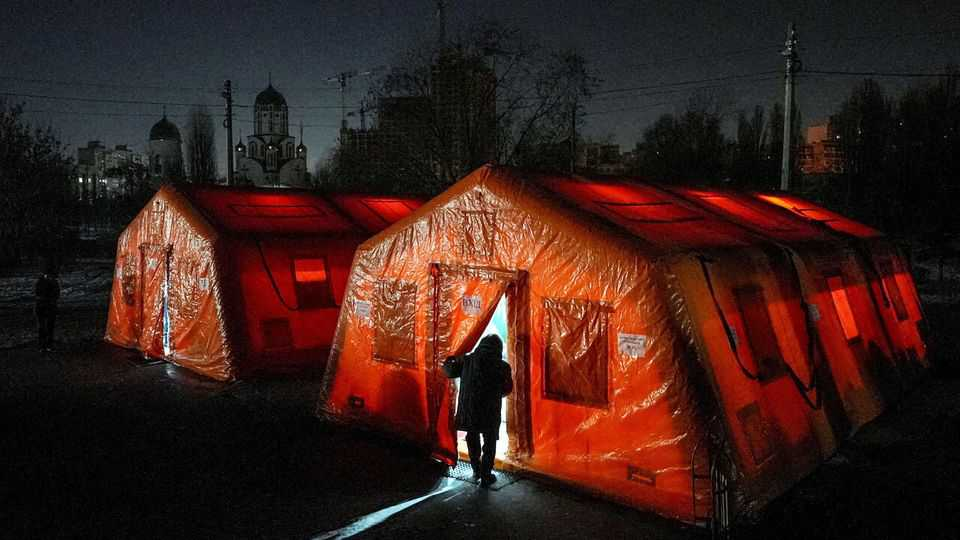
首都似乎已濒临灾难边缘。基辅本地电力公司DTEK发言人表示，俄罗斯正竭尽全力将首都从国家电网中分离。“他们找到了一种在极寒天气中奏效的策略，”他哀叹道。最近的轰炸重点针对民用能源设施，尤其是将国家电网的高压转换为城市低压的变电站。通往城市的低压线路已所剩无几。首都部分本地热电厂仍在运行，但若这些电厂也遭破坏，供水系统将随之瘫痪。最坏情况下，城市水管需排空至春季才能防止冻结爆裂。市长维塔利·克利奇科敦促有能力的人尽快撤离。截至目前已有60万人离开。■
市政规划者正面临一个令人不安的组合：权力不足、防空导弹短缺、异常低温以及俄罗斯轰炸日益精准。Shahed无人机（Shahed）如今每日量产数百架，已成为俄罗斯的主要武器。在典型袭击中，导弹先穿透目标屋顶，随后数十架无人机跟进突破缺口。西方防空系统拦截导弹的短缺一直是长期困扰，但一名防空部门人士表示，当前无人机数量激增已成为主要问题。过去一年间，乌克兰无人机拦截率已从98%降至80%。在1月19日袭击事件后，总统弗拉基米尔·泽连斯基推迟了原定出席达沃斯世界经济论坛的行程，并承诺改革本国空军指挥体系。■
最引人注目的变化是任命前线无人机指挥官帕夫洛·“拉扎尔”·叶利扎罗夫（Pavlo "Lazar" Yelizarov）为副防空指挥官。他从攻击型无人机转向战略防空的跃升引发了一些关注。然而，叶利扎罗夫以领导一个秘密单位而闻名，该单位被 credited 与摧毁价值超过120亿美元的俄罗斯装备。他的晋升表明乌克兰正将重点转向国产拦截器，并改变作战理念。在转岗前接受《经济学人》采访时表示，他的战场哲学源自战前作为媒体制作人时学到的商业系统。2022年自愿参军后，他将改装香烟走私者的无人机为简易炸弹，转入无人机战争领域。■
他随后组建了一支令人闻风丧胆的部队，约有1500名操作员。“拉扎尔集团”（Lazar’s Group）如今在前线每10公里处都部署了侦察、夜间轰炸和拦截无人机单位。该集团大部分士兵通过高科技地下掩体中的旋转椅远程操控，几乎全部成员年龄都在35岁以下。工作环境死一般的寂静，只有击中特别有价值目标时才会响起欢呼声。叶利扎罗夫先生表示：“我的任务是打造麦当劳式的标准化体系。我们通常比较灵活，俄国人则更注重系统性。但每当俄国人攻击另一个有组织的系统时，他们就会停止。”乌克兰人必须希望他的体系能在基辅冻结前阻止俄军无人机。■ 要掌握欧洲最重要的新闻，请订阅我们的周报《欧洲咖啡馆》（Café Europa）。
§045 欧洲原题：Russia’s no-show in Venezuela weakens its bad-boy image · 板块：Europe · 栏目：欧洲
当克里姆林宫宣布弗拉基米尔·普京将于1月15日发表“关于国际事务的重要讲话”——这是自美国在委内瑞拉军事干预及伊朗大规模抗议活动以来的首次讲话——多数观察家普遍预期他会发表一番典型的强硬言论。然而俄罗斯总统却表现得像个和平主义者。■
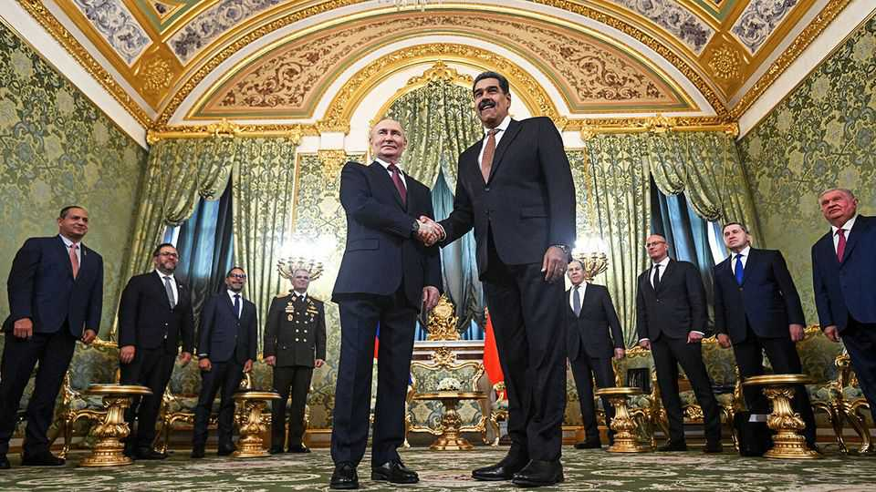
他赞扬了国际合作，同时对忽视国际法和侵犯小国主权的行为表示遗憾。“与其让国家间开展对话，有些人却依赖强权即公理……来强加自己的意志，”他在发动全面入侵乌克兰四年后对外国外交官表示。普京称赞了俄罗斯在拉美和中东地区建设性的作用。他并未提及美国军方八个月前曾将委内瑞拉总统、俄罗斯盟友尼古拉斯·马杜罗（Nicolás Maduro）带走——更不用说美国如何轻松击落了委内瑞拉的俄罗斯制造防空系统。他也没有提到美国海军扣押了从委内瑞拉出发的俄罗斯旗影子舰队油轮。
对美国“侵略”的批评被转嫁给外长谢尔盖·拉夫罗夫，而普京则保持沉默。这种沉默意味深长，因为普京对背叛盟友的领导人充满蔑视。他视米哈伊尔·戈尔巴乔夫——最后一位苏联领导人——抛弃社会主义阵营为帝国衰落的背叛行为。普京希望重振俄罗斯的全球影响力，因此在2000年总统任期伊始便积极拉拢委内瑞拉。俄罗斯向委内瑞拉出售武器，提供数十亿美元的信贷额度，大量投资其油田（从美国公司手中夺来的），并帮助其规避制裁。从商业角度看，这种联盟并未带来收益，但它满足了普京的虚荣心，为他提供了进入美国后院的立足点。他相信委内瑞拉是能在地缘政治博弈中交易的筹码。
菲奥娜·希尔（Fiona Hill），前美国国家安全官员，2019年作证称，在特朗普第一个总统任期期间，俄罗斯曾表示若美国允许其在乌克兰自由行动，就停止支持委内瑞拉。然而最终特朗普却直接介入委内瑞拉局势，无视普京的自尊心。这并非普京首次未能捍卫其战略伙伴。2024年，他眼睁睁看着叙利亚总统巴沙尔·阿萨德（Bashar Assad）被推翻。去年夏天，他亦默许美国轰炸伊朗——这是其对抗西方战争中的盟友。柏林智库卡内基俄罗斯与欧亚中心（Carnegie Russia Eurasia Centre）的亚历山大·加布耶夫（Alexander Gabuev）与谢尔盖·瓦库伦科（Sergei Vakulenko）认为，马杜罗（Maduro）被推翻暴露了俄罗斯承诺以对抗美国力量的虚伪性，也破除了其对委内瑞拉影响力的一切幻想。然而损害远不止于此。■
特朗普的无所顾忌削弱了普京的主要竞争优势：他作为全球头号恶霸的形象。普京对后冷战安全秩序的复仇性攻击，更多依赖于他对西方衰落的信念以及美国意图维持现状的判断，而非俄罗斯的军事或经济实力。这种信念赋予了他“升级主导权”——以一种其对手无法抗衡的方式提高冲突风险，无论是因为道德约束还是成本高昂。正如一位美国战略家所言：“摧毁并制造混乱比稳定与重建更容易且更便宜。”特朗普放弃美国对自由价值观和基于规则秩序的承诺，使普京陷入被动（因此他重新表现出对国际法的重视）。如今美国似乎正以更多资源玩着与普京相似的游戏。■
美国在委内瑞拉的行动速度与成效，凸显了普京“特别军事行动”在乌克兰的失败。这场本应以闪电战推翻基辅政权的行动，最终演变成无休止的流血冲突。俄罗斯军方博主对此对比洞若观火。有博主写道：“美国维持庞大军力并非为了阅兵或两年内拿下一个村庄，而是为了高效地给对手重击。”伊朗的示威活动也令普京忧心忡忡。作为俄罗斯在规避制裁和维持意识形态控制方面效仿的榜样，伊朗去年遭美军轰炸后爆发的大规模抗议，更让普京意识到军事失败与民众动荡之间的关联。为重振权威，普京加大对乌克兰及其欧洲盟友的施压。■
在地面取得实质性进展受阻后，他加大了对能源基础设施和城市的无人机与导弹袭击力度。1月8日，他使用一枚具备核打击能力的高超音速导弹“奥雷什尼克”袭击了靠近波兰边境的利维夫市。被用作俄军发言人的退休将军伊戈尔·布祖金（Evgeny Buzhinsky）在俄罗斯电视上向西方阐明信息：欧洲国家提议在乌克兰部署军队以确保名义上的和平协议的提议不可接受。克里姆林宫还加强了对俄罗斯互联网的管控。它正在试验移动互联网断网措施，迫使人们使用国家控制的即时通讯服务，这些服务同时充当监控工具。但普京同样需要重获国际主动权。因此，他无疑会利用美欧在格陵兰岛问题上的分歧，测试北约的凝聚力。■
要掌握欧洲最重要的新闻动态，请订阅我们的每周一次的订阅者专属通讯《Café Europa》。■
§046 欧洲原题：Europe’s five stages of grief for the transatlantic alliance · 板块：Europe · 栏目：欧洲
从1940年代至2024年，欧洲面临的安保挑战是如何与美国这一最亲密盟友并肩防卫自身。到2025年，随着唐纳德·特朗普重返白宫，问题转变为欧洲能否在没有美国的情况下防卫自身——鉴于俄罗斯对欧洲大陆的图谋，这显得格外令人担忧。如今在2026年，一个曾被视为异端的问题正困扰着欧洲人：他们未来可能不得不采取什么措施来防卫自己免受美国？正如马克·吐温所言（误引），关于跨大西洋联盟终结的报道，过去被大大夸大了。
但一个涉及威胁与恐吓的“联盟”不配拥有这个名字；目前看来，它要么已死，要么濒临死亡。引爆点是格陵兰岛，这是特朗普觊觎之地，欧洲却无法在保持尊严的前提下将其拱手让人。特朗普于1月21日表示，暂不考虑动用武力获取丹麦自治领地，随后又称与北约达成的协议仍不透明。尽管眼前危机暂时缓解，但更深层的问题依旧存在：一种将权力视为美德、视盟友为可抛弃者的美国新信条。华盛顿所散发的自大狂妄，使任何持久的联盟都难以实现，即便是像北约这样历史悠久的联盟也不例外。加拿大总理马克·卡尼在达沃斯论坛上代表欧洲盟友发言称：“旧秩序不会回归……我们不应为之哀悼。”然而欧洲人却依然悲痛难抑。■
跨大西洋联盟在纸面上依然存在，但北约的核心承诺——美国承诺在欧洲遭到攻击时提供保护，反之亦然——已不再是普遍信奉的信念。例如，若此类承诺真能实现，是否意味着丹麦必须“移交”格陵兰岛？对欧洲人而言，这种失落感尤为强烈。如何解释这个支撑了数个世纪（大多和平）的安保联盟在这一永不停歇的争执大陆上逐渐瓦解？北大西洋伙伴关系并非始终和谐，但其韧性经受住了考验。如今其消逝带来的冲击令幸存者感到震惊。瑞士出生的精神科医生伊丽莎白·库尔伯-罗斯（Elisabeth Kübler-Ross）提出，人类面对失去所爱之人时会经历五个哀伤阶段：否认、愤怒、讨价还价、抑郁，最终是接受。■
结果发现，欧洲一直在逐一应对这些挑战。起初是否认——欧洲圈内坚定认为特朗普绝不会重返权力中心。2016年美国人曾选他一次，这在欧洲人眼中已足够难以理解。但真能接受他再次当选吗？毕竟他们已目睹他所展现出的破坏力，包括煽动叛乱等行为。尽管在2024年大选前曾尝试“防范特朗普回归”，但对具体如何防范却毫无头绪。不久后，愤怒情绪蔓延。特朗普第二次就职典礼后仅数周，欧洲人便被美国优先派激怒，陷入愤慨。今年2月，副总统J.D. 奥斯汀前往慕尼黑，向欧洲人解释他们真正面临的威胁并非来自俄罗斯，而是“内部敌人”。
欧洲大陆不可避免的衰落只能通过选举排外主义者，甚至解散欧盟来解决。当月晚些时候，乌克兰总统弗拉基米尔·泽连斯基（Volodymyr Zelensky）在椭圆办公室遭到羞辱，其士兵暂时失去了关键的美国情报支持。到四月，关税狂魔特朗普已摧毁美国与欧洲数十年共同构建的自由贸易体系。天啊！欧洲随后试图通过谈判来应对，毕竟特朗普以喜欢达成协议著称。为了维持美国对乌克兰的持续支持，欧洲方面同意顺从美国的要求。一些要求是合理的，例如增加国防开支（六月达成协议，目标将GDP的3.5%用于国防）。但协议的隐含部分则是对美国的阿谀奉承，例如北约秘书长马克·鲁特（Mark Rutte）奉承地称特朗普为“联盟之父”。■
欧盟于7月签署了一项不对等的贸易协议，同意支付关税却未对美方施加关税。对许多欧洲人而言，这更像是屈服而非谈判。然而，这种屈服并未带来任何成果。当欧洲意识到自己出卖了利益却未获得任何回报时，陷入了一种沮丧。值得注意的是，近几个月来，特朗普对乌克兰施加的压力仍多于对俄罗斯入侵者的施压。他因格陵兰岛局势威胁对欧盟国家加征新关税，随后又撤销了这一威胁。对许多欧洲人而言，最令人沮丧的是意识到法国人一直以来都是正确的。自夏尔·戴高乐以来，欧洲总统们一直抨击对美依赖。马克龙于2019年宣称北约“脑死亡”。当时更多欧洲人只是嗤笑，而非认真对待。那么，悲伤的最终阶段——接受——又会呈现怎样的面貌？■
欧洲各地弥漫着一种越过界限、突破底线的氛围。即便是曾经坚定奉行大西洋主义的国家领导人，如今也显得像戴高乐主义者。比利时首相巴特·德韦弗（Bart De Wever）表示：“做个快乐的附庸国（美国）是一回事，沦为悲惨的奴隶则是另一回事。”但承认时代已变并不等于达成如何适应的共识。正如马克龙所言，构建“战略自主”将需要数年甚至数十年的投资，尤其要弥补军事能力的短板。与美国爆发贸易战似乎迟早会发生。1月22日欧盟峰会期间，《经济学人》即将付印时，欧盟领导人将讨论该联盟的“反胁迫工具”，这是一种允许其坚决应对关税威胁的措施（尽管在特朗普放弃强硬立场后，该工具短期内启动的可能性较低）。■
欧盟原本设计“贸易重武器”旨在威慑那些欺压他国的对手，矛头直指中国。然而，首个遭遇冲击的可能反而是欧洲人曾视为友好的国家。■ The Economist 订阅者可注册我们的 Opinion 通讯，汇集最佳评论、专栏文章、特稿及读者来信。
§047 欧洲原题：Europe can still win the other AI race · 板块：Europe · 栏目：欧洲
欧洲仍有机会赢得另一场AI竞赛 Business 对采用者而言，利益丰厚 January 22nd 2026 Business | 对采用者而言，利益丰厚 欧洲仍有机会赢得另一场AI竞赛 技术应用正加速推进 January 22nd 2026 全球多数企业仍在试探人工智能的水深，但施耐德电气（Schneider Electric）并非如此。该公司法国工业设备制造商的数字负责人彼得·韦克瑟（Peter Weckesser）表示，其已有约100个AI应用投入实际运行。摩根士丹利（Morgan Stanley）投资银行估算，这将为公司今年节省约4亿欧元（4.7亿美元）的年度成本。该金额仅占其总成本的不到1.5%。但韦克瑟先生的目光已投向更远的目标。 ■
最终，他宣称：“施耐德电气（Schneider Electric）的每一项产品或功能都将受到人工智能的影响。”从云计算到5G，欧洲企业通常在采用新技术方面较为迟缓。许多企业曾担心，这一轮所谓生成式AI的浪潮也会重蹈覆辙。然而，正如韦克瑟（Weckesser）先生的热情所展现的，仍有理由保持乐观。机遇巨大。欧洲拥有庞大的工业基础，并正在寻求提升经济增长的方法。尽管它在打造尖端AI模型的竞争中落后——2024年仅推出了3个模型，而中国有15个、美国有40个；且缺乏自家的超大规模云服务商（hyperscalers）来投入巨资建设数据中心。但就广泛提升生产率而言，采用AI比销售AI更重要。■
欧洲个人对生成式人工智能的采用热情已居全球前列。根据微软（Microsoft）的一项研究，按人口加权平均计算，欧洲有32%的人使用该技术，高于美国的28%和中国的16%。许多欧洲人对AI的前景持乐观态度。皮尤研究中心（Pew Research Center）曾询问民众对AI是更兴奋还是更担忧，美国民众最担忧，而欧洲人则相对更积极（尽管根据其他调查，欧洲人的乐观程度仍不及中国人）。越来越多的欧洲企业也开始拥抱AI。欧洲投资银行（European Investment Bank，EIB）最近的一项调查显示，约37%的欧盟企业使用生成式AI，略高于美国的36%。这一数据掩盖了显著的差异。■
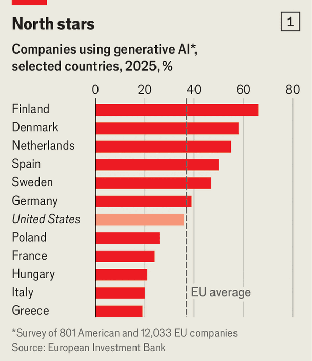
北欧企业最为积极：芬兰在欧洲投资银行（EIB）的排名中居首，66%的企业采用该技术；丹麦以58%的比例紧随其后。相比之下，意大利和希腊仅有20%和19%的企业采用该技术（见图表1）。此外，欧洲企业的AI应用范围较其美国同行更为有限（见图表2）。根据欧洲投资银行（EIB）的调查，仅55%的欧洲企业使用AI应用于至少两个业务领域，而美国企业这一比例达到81%。不过，欧洲的制造商在跨大西洋的同行中表现突出。欧洲投资银行（EIB）的研究显示，48%的欧洲制造商使用AI，包括较早的机器学习和“大数据”技术，而美国制造商仅占28%。■
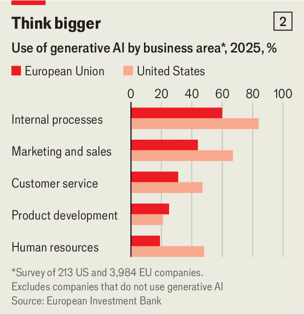
西门子（Siemens），这家德国工业巨头（其首席执行官罗兰·布什（Roland Busch）在文中被提及），已在巴伐利亚州埃尔朗根（Erlangen）的未来工厂使用人工智能超过五年。该工厂部署了超过100种算法以提升生产效率。施耐德（Schneider）也是早期采用者，其于2021年11月聘任了首位“首席AI官”，比ChatGPT发布早一年。其他制造商正急于跟进。上个月，德国工业工具制造商特鲁普（Trumpf）的25支团队齐聚一堂，举办“黑客马拉松”开发AI应用。许多欧洲企业对AI表现出浓厚兴趣。丹麦啤酒酿造商嘉士伯（Carlsberg）已利用AI打造销售工具，帮助销售人员选择适合客户的促销方案，同时用于设计包装及规划啤酒箱运输方案。■
微软的AI助手Copilot鼓励员工进行实验。一位入职体验不佳的新员工开发了一款AI工具，帮助新员工在入职首月或第二个月顺利适应公司。嘉士伯（Carlsberg）计划在全球范围内推广该工具。一些欧洲公司正与该地区仅有的几家AI模型制造商紧密合作。11月，欧盟AI冠军倡议（EU AI Champions Initiative）这一游说团体在柏林举行的法德数字主权峰会上，公布了18项此类合作。其中包括法国AI开发者Mistral与德国无人机制造商Helsing的合作，旨在为国防与安全领域调整AI模型；以及德国AI公司Black Forest Labs与德国汽车制造商梅赛德斯-奔驰（Mercedes-Benz）的合作，开发营销工具。什么可能阻碍欧洲的发展？通常的风险之一仍是监管。■
布鲁塞尔的政策制定者迄今为止主要将精力放在防止技术造成混乱上，由此催生了欧盟的人工智能法案。该法案为全球安全和数据保护设定了基准，但批评者认为其繁复的监管程序将抑制创新和应用。尽管全面推翻该法案的可能性不大，但欧盟在11月应企业投诉推迟了部分实施条款。企业界人士希望获得更简化的监管框架，以明确自身可为与不可为的边界，从而鼓励投资。另一大风险来自经济层面。欧洲大陆的增长本就疲软，中国在汽车制造、机床等行业竞争对手正蚕食欧洲企业的市场份额，美国的贸易保护主义更加剧了这一困境。■
那些寻求增长的企业可能倾向于削减对人工智能的投资以维持短期利润。然而要实现长期内的竞争力，它们必须采取相反的做法。■ 要追踪塑造商业、工业和技术趋势的动态，请订阅我们的周度会员专属简报“The Bottom Line”。
§048 英国原题：A scenario for a Conservative comeback in Britain · 板块：Britain · 栏目：英国
政客们经常被指责毫无羞耻。尼格尔·法拉奇（Nigel Farage）却提出了一种新颖的解决方式。1月15日的记者会上，他告诉媒体：“我正在吸纳那些对过去所作所为感到抱歉、甚至羞愧的人。” 他身旁的罗伯特·詹里克（Robert Jenrick）——这位新加入者（更以毫无羞耻著称）则在座位上不安地挪动。这位前移民部长是众多转向法拉奇的民粹右翼组织“改革英国党”（Reform UK）的保守党议员中最显眼的一位。最近的叛逃者包括前财政大臣纳迪姆·扎哈维（Nadhim Zahawi）和罗姆福德选区议员安德鲁·罗辛德尔（Andrew Rosindell）。
法拉奇给保守党议员设定了5月7日的最后期限（当天将举行地方和地方自治机构选举）以加入其政党。保守党领袖凯米·巴登诺奇希望说服选民，她的政党才是英国右翼真正的代表。若想做到这一点，或许可以牺牲一些持道歉态度的同僚。保守党的处境已陷入绝境。其民调支持率已连续六年持续下滑（见图表1）。从违反新冠防疫规定到2022年利兹·特拉斯灾难性的首相任期，该党已严重损害了英国公众的信任，失去了作为自然执政党的地位。一些人认为，衰退的根源甚至更早，2016年脱欧公投撕裂了该党社会保守派与经济自由派的联盟。在选票份额和议席数量上，2024年的选举结果是自1832年以来最糟糕的一次。■
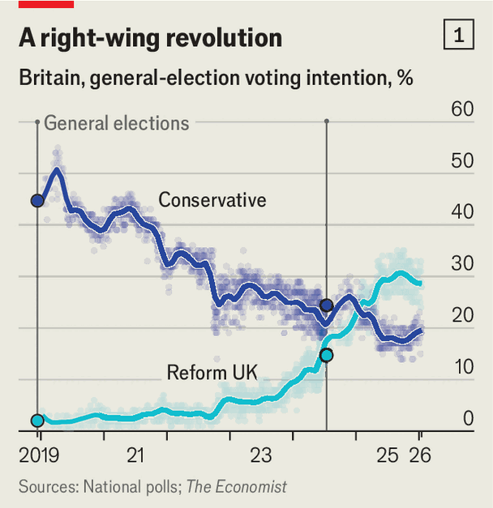
自巴登诺奇（Badenoch）成为领导人以来，她几乎没有采取措施阻止局面恶化。尽管工党政府颇不受民众欢迎，但该党支持率仍仅略低于20%，低于其在上次大选中获得的24%，也仅是其二战后典型民调支持率的一半左右。改革党（Reform）的崛起让保守党（Tories）的下滑变得生死攸关。如果右翼选民认为保守党已成无望之选，他们可能会大规模转向民粹主义替代选项。即便知名叛逃者并不特别受欢迎（仅有11%的英国人对詹里克（Jenrick）持正面看法），他们也强化了改革党作为右翼主要竞争者的地位。然而，西敏寺（Westminster）往往过早宣布某些政党的死亡。从下次大选的基本面来看，保守党未必面临如此黯淡的前景。
自2019年以来，改革党（Reform）的崛起与选民心中移民议题的突出地位密切相关——这是该党的立党之本。2020年4月，民调机构YouGov发现，仅有13%的英国人将移民列为他们最关心的三大议题之一（见图表2）。改革党在《经济学人》民调平均值中仅获得不到2%的支持率，处于低迷状态。到2024年大选时，移民问题的支持率升至41%，改革党则达到15%。至2025年10月，移民问题作为三大议题的得分攀升至57%，改革党的支持率则飙升至30%。但移民议题对英国政治的持续影响力并无保障。英国国家统计局（Office for National Statistics）估计，净移民人数在2023年达到近100万的峰值后迅速下降，目前可能已低于2016年6月英国脱欧公投时的水平。■
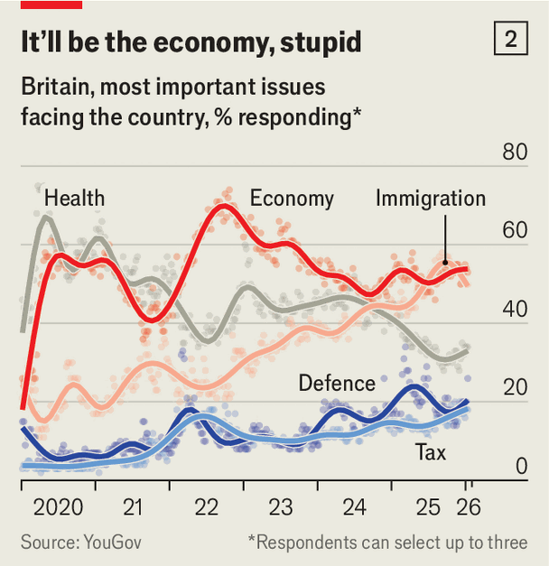
前政府推出的签证限制措施似乎已初见成效，工党承诺将进一步收紧移民系统。尽管目前尚无迹象显示政府已成功减缓小船移民的抵达速度，但这一局面也可能发生变化。与此同时，民众对薪资增长的担忧或将加剧。实际家庭可支配收入在2024-25财年增长2.6%，为2015-16年以来最快增速。但此后增长势头可能转为下行。英国财政 watchdog 奥比（Office for Budget Responsibility，OBR）预测，未来三年收入增长将放缓，至2027-28财年仅0.1%——恰逢下届大选临近。这种停滞将使财政大臣拉切尔·里夫斯（Rachel Reeves）计划的增税措施更加不受欢迎；其中多数增税措施仅在2028或2029年生效。■
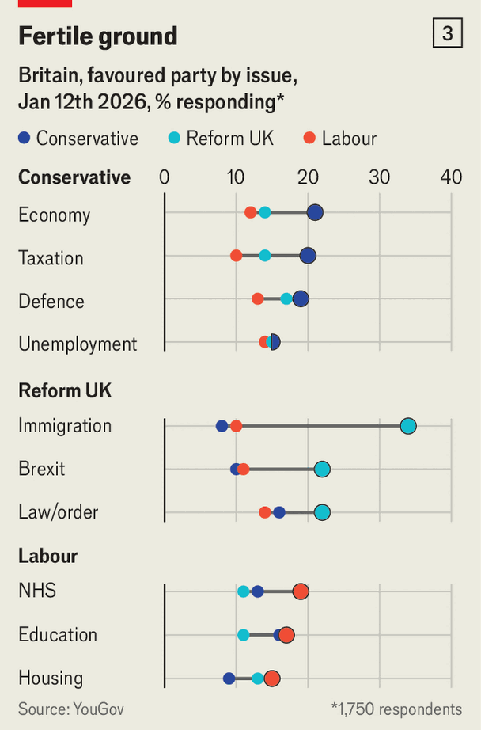
在考虑增加国防开支所需税收之前，跨大西洋联盟的裂痕已使局势更加复杂。经济问题而非移民问题，可能在下次大选中成为主导议题。保守党或许会试图将选情导向这一方向。尽管面临诸多挑战，他们在选民心目中处理英国经济问题的能力上仍保持明显优势（见图表3）。正如改革党在移民议题突出时崛起，保守党则在经济成为选民首要关切时获得支持。而选民似乎已对工党的左翼政策感到不满。根据YouGov民调，认为政府税收过多、支出过大的选民比例，已从工党上台前的约28%上升至目前的近43%（见图表4）。
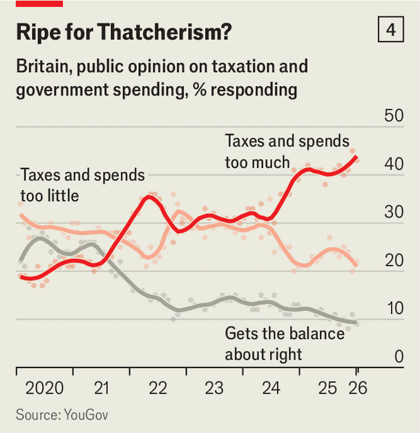
2024年底，英国社会态度调查（British Social Attitudes survey）记录了自1983年研究人员首次提出该问题以来，民众对减税减支支持度的最高值。然而改革党（Reform）难以从中获益。其选民收入低于其他政党的选民，意味着他们更依赖公共支出。而要在议会获得多数席位，改革党大概率需要从工党手中夺取英格兰北部许多工薪阶层选区的支持，这使得改革党难以推动大幅削减支出。除保守党外，唯一可能从批评工党中获益的政党是自由民主党（Liberal Democrats），但该党既缺乏能力也缺乏意愿这么做。尽管巴登-诺奇（Ms Badenoch）在议会中的表现日益自信，但她迄今为止仍优先关注反“政治正确”议题，而非经济政策。■
但若特拉斯失去那些对成为保守党感到羞耻的同僚，这或许并非坏事。2018年担任外交大臣时，鲍里斯·约翰逊曾因企业界对脱欧的担忧而说出“去他妈的商业”。特拉斯则抨击英国财政预算办公室（OBR）的“未选举产生的官僚”。保守党议员甚至将吃牛油果或喝拿铁的人斥为脱离现实的精英。相比之下，凯米·巴特勒（根据其影子财政大臣梅尔·斯特里德的说法）则支持OBR。若该党希望在下次大选前重获关注，不妨毫不掩饰地支持商业、财政责任与繁荣。■ 了解更多关于英国重大事件的专家分析，请订阅我们的周度专属简报Blighty。
§049 英国原题：Britain’s Chagos disposal looks like an idea out of time · 板块：Britain · 栏目：英国
在唐纳德·特朗普第二个任期带来的诸多意外中，最奇特的莫过于他与英国左翼首相基尔·斯塔默爵士之间礼貌的互动。这一局面在1月20日发生了变化。■
在推特上的一篇帖子中，特朗普迟来地抨击了英国2025年5月将查戈斯群岛主权移交毛里求斯的决定（该群岛位于印度洋，其中迪戈加西亚岛为英国-美国军事基地，将保留初始99年租约）。特朗普写道：“令人震惊的是，我们的‘杰出’北约盟友英国，目前正计划毫无理由地将迪戈加西亚岛——美国关键军事基地所在地——交给毛里求斯。”这项租约协议削弱了特朗普主张必须拥有格陵兰岛以确保可靠基地的论点。本周早些时候，基尔爵士曾批评特朗普的野心。他罕见地谴责了针对该争议的关税威胁，称其“完全错误”。■
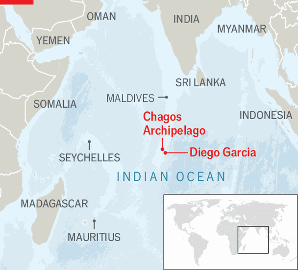
■ 似乎这也萦绕在特朗普的脑海里。“英国将极其重要的土地拱手让人是极端愚蠢的行为，这也是格陵兰必须被获取的又一个国家安全理由。”基尔·斯塔默政府决定出售查戈斯群岛的决定，尽管初衷高尚，却愈发显得不合时宜——更符合1990年代的氛围，而当时工党许多成员似乎更愿置身其中。第一件古董：对国际法的敬畏。这一决定源于国际法院的一项咨询裁决，该裁决指出英国1965年将查戈斯群岛从毛里求斯分离的做法错误，当时英国正准备给予其前殖民地独立。这种对国际法的重视在特朗普政府看来已属过时。
第二件遗物：美国政府对一致性的期待。白宫对协议表示欢迎，盛赞基尔爵士的“历史性成就”确保了基地的未来。第三件遗物：英国反对党对一致性的期待。大部分谈判是在上届保守党政府时期进行的。现任领导人凯米·巴登诺奇（Kemi Badenoch）仍公开谴责该协议。批准该协议的法案现已进入英国议会最后阶段，如今面临更复杂的局面。■ 如需获取更多关于英国重大议题的专家分析，请订阅我们的每周订阅者专属简报Blighty。
§050 英国原题：A detailed look at Britain’s changing ethnic mix · 板块：Britain · 栏目：英国
小海斯（Small Heath）是伯明翰（Birmingham）的一个区域，被足球场和清真寺包围，看起来像是融合的典范。主街上有售卖清真食品的杂货店和博彩店。自1991年以来，白人英国人已不足人口的一半。许多当地人对移民问题似乎并不在意。“我懒得把它当问题看，”19岁的白人建筑工弗雷迪（Freddie）说道。十英里（16公里）外则是塔姆沃思（Tamworth）镇，该镇自1945年后迅速发展，政府推动企业与工人离开伯明翰。
观点存在分歧。在一家投注站外，约翰（John），一位50多岁的白人失业园丁，表示“人们只是觉得他们已经被赶出家门一次了”。他担心自己所在的社区人口快速变化会导致像他这样的人再次被驱逐。《经济学人》的新数据分析解释了为何英国部分地区，如小希思（Small Heath），对国家变得更加民族多元持开放态度，而像塔姆沃思（Tamworth）这样的地区则充满焦虑。几个因素似乎起作用：一个地区民族构成变化的速度、其原本的同质性程度，以及该地区是否高度隔离。下一次全国人口普查要到2032年才会公布。因此，我们通过分析年度在校学生数据来估算民族人口，同时考虑到英国年轻人比老年人更具民族多样性这一事实。■
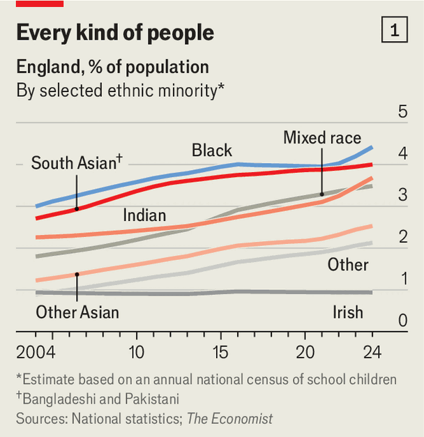
我们的估算涵盖2004年至2024年这21年间的数据。这些数据与2011年和2021年的人口普查结果高度吻合，使我们对过去几年的估算更具信心。数据显示，英格兰白人英国人占总人口的比例从2021年的74%降至2024年的72%。每个主要的少数族裔群体都实现了增长（见图表1）。但不同地区的变化速度存在差异。塔姆沃思非白人英国人占比从12%上升至15%，增幅达20%。而小希思地区则几乎未发生变化。为观察各地人口结构的变化，我们估算出7000个区域（每个区域平均约8000人）各族群人口规模，并将每个区域归入英格兰543个议会选区。■
我们的分析表明，英国选区中多数族裔比例不足一半（即白人英国人口不足总人口一半）的数量从2021年的69个增至2024年的77个。我们通过两个指标评估选区：多样性与隔离度。多样性指数从克罗伊登（伦敦郊区）的83分到德文郡托里奇和塔维斯托克的12分，衡量一个地区族群的丰富程度。隔离度则反映族群在每个选区十余个社区间的分布均衡性。2021年至2024年间，除17个选区外，英格兰543个选区均呈现更高多样性。此前同质性较高的地区变化最为显著。少数未出现多样性提升的选区，如伦敦贝思纳尔格林和伯明翰利德沃思，本身已具备高度多样性。■
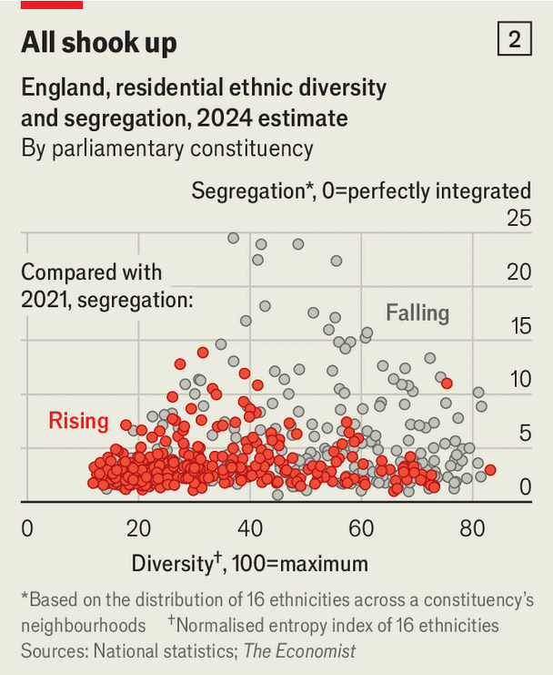
移民有时会先在贫困的市中心区域定居，随后随着生活逐渐稳定，迁往更宽敞的社区。但在小海斯（Small Heath）的一座清真寺，伊玛目们指出，移民正越来越多地与亲属定居在郊区及卫星城镇，如塔姆沃思（Tamworth）。郊区和小城镇正迅速发生变化。我们估计，城市对全国多样性增长的贡献已降至2000年代末期的一半左右。种族隔离通常以全国范围为尺度，通过人口普查数据衡量。按此标准，英格兰和威尔士自1991年人口普查首次询问种族信息以来，始终呈现出更少的种族隔离趋势。但我们的小区域数据揭示了不同现象。2021年至2024年间，多数选区（详见图表2）的种族隔离程度略有上升。理论上，少数族裔群体的地理扩散应促进更大程度的接纳。■
学术界普遍认为种族主义会随着族群间接触增加而减弱。伯明翰大学的埃里克·考夫曼（Eric Kaufmann）表示：“如果你认为移民很糟糕，那么有一个人搬到隔壁就能证明他们并非如此。”然而在塔姆沃思（Tamworth），种族紧张局势却触目惊心。2024年，一群民众袭击了当地一家收容寻求庇护者的酒店。一位在郊区公园里遛弯的前士兵保罗（Paul）表示，他并不认同暴徒的言论和行为，但补充道：“我会为他们辩护。我们太急于将他们称为种族主义者了。”当我们将人口变化与民众对移民的态度（根据英国大选研究数据）进行对比时，发现了一种规律。最近多元化最快的选区，其民众对移民的态度也最为强硬（见图表3）。城市居民对移民的敌意略有上升，郊区和农村居民的敌意则更为明显。■
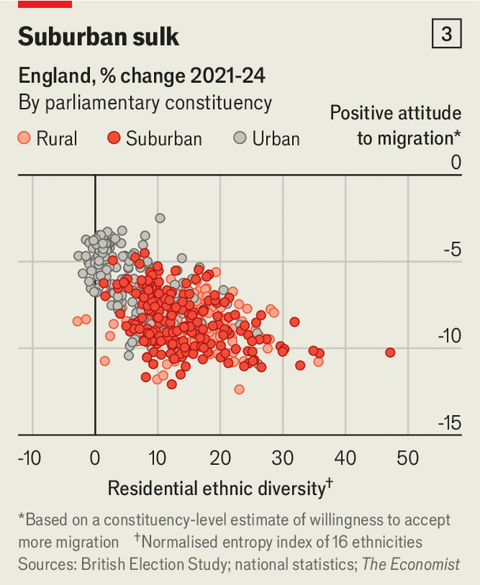
英国的移民人口在过去几年发生了变化，随着来自欧洲以外国家的移民数量上升，一些东欧移民也陆续离开。这又增添了一个复杂因素。最初南亚裔人口比例最低的地区，对移民的态度出现略微负面转变。混血人群（很可能具有英国国籍）人口的增长对态度有显著正面影响。支持改革党（Reform UK）的右翼民粹主义政党目前民调领先，其支持者对移民问题最为负面。如果今天举行大选，根据《经济学人》的选举模型，改革党可能赢得的318个选区中，有143个位于英格兰最 segregated（种族隔离）的前200名地区（共543个）。总体而言，英国在融合移民方面表现良好，比过去更加不那么种族主义。■
但英国人不仅生活在英国，他们还生活在特定区域，这些区域正以独特的方式发生变化。若有些人对移民问题变得更加宽容，而另一些人则更加抗拒，其原因或许与他们所处的社区密切相关。■ 如需获取关于英国重大议题的深度专业分析，请订阅我们的周度专属新闻通讯Blighty。
§051 英国原题：On Scotland’s nationalist fringes, a new Tartan intolerance rises · 板块：Britain · 栏目：英国
从远处看，这似乎又是一场支持苏格兰独立的集会：苏格兰盐ire（Saltire）在风中飘扬，口号通过扩音器广播，便携式音箱中传出风笛的轰鸣声。在这样的集会上，你通常能猜到参加者渴望看到的苏格兰是什么样的：一个与北欧国家并肩的独立进步国家，欢迎外来者。但1月18日，阿伯丁海滨的活动者们却带来了截然不同的信息：“阻止船只”■
一群聚集在庇护所酒店外的人群高呼“立即遣返”和“拯救我们的孩子”，演讲者警告称本地苏格兰人正被逐渐取代。苏格兰民族主义者通常以自身的进步性为荣。民粹右翼曾被视作英格兰运动的次要分支，但这一局面已发生改变。一方面，民调显示尼格尔·法拉奇（Nigel Farage）领导的改革党（Reform UK）可能在5月议会选举中击败工党，成为苏格兰议会第二大政党。周日集会的组织者同样地道苏格兰，一名男孩身着苏格兰短裙，随着《苏格兰勇士》的乐曲向人群致辞。此次“团结宗族”集会的海报上，身着格子纹服饰的战士们在苏格兰盐ire旗和皇家旗帜下冲锋陷阵。
近期抗议浪潮的动因是越来越多酒店被用于安置寻求庇护者。这一现象在苏格兰尤为敏感，因为非法移民被视为英格兰的问题。爱丁堡一个破旧郊区的资深选民动员者回忆称，他曾与一些因支持独立而感到沮丧的选民交谈，他们认为独立将赋予苏格兰拒绝那些通过英吉利海峡入境者的能力。毕竟，小船抵达多佛而非邓迪。苏格兰对移民问题的总体态度也日益强硬。2023年仅有28%的苏格兰人认为应减少移民数量，而去年2月这一比例上升至45%。部分原因在于对苏格兰白人人口持续下降但依然较高的担忧：2011年人口普查显示91.8%的苏格兰人自认是白人苏格兰人/英国人，到2022年这一比例已降至87.1%。■
支持苏格兰独立的群体难以接受他们的运动存在这种反移民倾向。一位支持苏格兰脱离英国的知名作家曾嘲讽去年夏天极右翼活动者在路灯杆上悬挂的英国旗帜。但他们的苏格兰同行也做过同样的事，只是用的是盐IRE（Saltire）。因这种自豪的愤怒而受益的政党曾是苏格兰民族党。这些选民现在正转向其他政党。44岁的阿伯丁渔夫约翰·霍尔（John Hall）表示，他一生都支持苏格兰民族党，但现在正考虑押注于弗拉格曼（Mr Farage）的阵营。他称，开放酒店的决定“由威斯敏斯特（Westminster）决定”。“但苏格兰民族党对此毫无反对声音。”他相信，这才是真正的背叛。像约翰·霍尔这样的人还有很多。■
去年10月的民调显示，目前苏格兰改革党选民中有20%在2019年曾支持苏格兰民族党；另有45%表示他们过去曾投过苏格兰民族党票。这解释了为何改革党苏格兰领导人并未排除举行第二次独立公投的可能。据去年社会态度调查，苏格兰人中认同自己为“纯苏格兰人”或“主要苏格兰人”的比例达到60%的历史新高，与此同时试图以更狭窄的定义来界定“苏格兰”身份的尝试也同步攀升。看来一种将苏格兰视为被外国敌人征服的民族的意识形态，同样可以被用来对抗新的敌人。■ 如需获取英国重大新闻的深度分析，请订阅我们的周度会员专属简报Blighty。
§052 英国原题：Affluenza: the new British disease · 板块：Britain · 栏目：英国
英国的政治体有时会遭受疾病侵袭。从20世纪60年代起，英国被称为“欧洲病夫”，落后于其欧洲大陆的同行。在70年代，英国曾饱受“英国病”之苦，当时停滞不前的经济与狂躁的工会运动令国家陷入困境。如今，一种名为“富裕病”的病症成为时代的流行病。英国将富裕国家的义务与期望与一个远不如其自认为富裕的国家的资源相结合。富裕病是一种跨越左右翼的普遍病症。那些对英国富裕程度最为张扬的群体往往出现在左翼，他们以英国是“全球第六大经济体”的统计数据为任何支出承诺辩护。
■
英国国家医疗服务体系（NHS）可以获得更多资金；福利待遇总能提升。作为论点，这显然是荒谬的。很少有人接受，因为印度作为全球第五大经济体，理应拥有比英国更慷慨的福利体系。真正重要的数据是人均收入。以这一标准衡量，英国比其邻近国家更贫穷。治愈富裕病的第一步？将“全球第六大经济体”换成“显著贫穷于比利时”。这种新型英国病正是国家最大失误的根源。脱欧是被富裕病困扰的国家做出的决定。此前警告英国将因此变得更贫穷的预言应验了。并非选民拒绝相信这些警告，而是他们根本不在意。富裕导致的粗心大意正如F. Scott Fitzgerald在《了不起的盖茨比》中所描述的那样，造就了那些“砸碎一切，然后退回他们的金钱中”的人。■
富裕带来的鲁莽，却缺乏足够的财力来应对后果。在欧盟以外，英国的贫富差距虽小，但民众并未因此更幸福。由于英国在选民心中注定是一个富裕的国家，他们热情地支持无节制的长期支出，却很少深思熟虑。三重保障机制确保国家养老金按通胀率、薪资涨幅或2.5%的更高者增长。尽管该机制仅于2010年推出，却已成为不可动摇的制度。目前国家养老金年收入为12,000英镑（约合16,100美元）。根据英国进步中心（Centre for British Progress）智库预测，到2070年，按当前货币计算，国家养老金将升至约30,000英镑。支持者认为三重保障机制是文明社会的代价，批评者则认为这将使公共支出走上不可持续的轨道。这是一项唯有被富裕幻觉蒙蔽者才敢承诺的承诺。■
这种疾病甚至影响到国家事务，而国家本应在此时最为务实。富裕病（affluenza）是英国国防政策的核心，该国仍无法决定是否要扮演全球角色。军事义务迅速堆积，而履行这些义务的资源却远远落后，尽管基尔·斯塔默爵士（Sir Keir Starmer）承诺将在下一届议会前将国防开支提升至GDP的3%。因此，英国航母能安然通过新加坡海峡，而欧洲却爆发陆战，俄罗斯船只则在北海决定切断哪些电缆。巨额一次性支票被无异议地开出，如同富人尚未查看账单就刷信用卡。英国正为3万人（包括3万成年人和儿童）感染从丙型肝炎到艾滋病等疾病的巨大罪行进行赔偿，赔偿金额为120亿英镑。■
但意外传染儿童HIV的代价究竟多少？还是以法官的说法为准更稳妥。英国提供的赔偿金额高于其他国家，但这又如何？英国完全可以忽视这类令人尴尬的问题。我们是一个富裕社会，尽管债务占GDP比重高达96%。富裕病会导致生活方式的膨胀。英国的基础设施成本位居世界前列。尽管资本预算多年来受到限制，却总能建成豪华版的基础设施。HS2高速铁路项目（从伦敦到伯明翰的高速线路）的困境众所周知。为保护几百只蝙蝠而建造的1公里隧道耗资逾1.2亿英镑，这成为英国最著名的建筑工地之一。其他成本则用于保护另一濒危物种——保守党选民。数十亿英镑被用于挖掘穿越奇尔特恩丘陵的16公里隧道。
一个庞大的财政义务——纯粹出于审美目的的庞大基础设施项目——被一个以削减赤字为目标的保守党政府批准。富裕病甚至能让最节俭的人也陷入迷惘。缓解富裕病症状的常见方式是采用一种会计技巧。英国政府做出大胆承诺，却要求国家其他部门承担费用。这种“未资助的指令”曾是美国的顽疾，如今却演变为英国的病症。政府设定广泛义务——如养老护理——却从不跟进资金。最终，养老护理费用从“坑洼预算”中支出，选民不禁疑惑为何“全球第六大经济体”的街道竟如此破败。对健康观察者而言，这正是一个拒绝诚实核算承诺的政府的后果。■
对深受“富裕病”困扰的人来说，这证明金钱似乎被某种方式错误地挥霍或浪费了。认为金钱被浪费的想法，比意识到它原本就不存在要令人安慰得多。为富裕时代设计的政治体系，在资源稀缺的当下正陷入困境。对深受“富裕病”困扰的选民来说，人们必须为（最多）相同的东西支付更多费用的想法，无异于禁忌。英国各政党不愿开出药方。保守党与改革联合党均无法说明政府为节省开支将放弃哪些义务。与此同时，英国左翼政党坚持认为，即使不提高普遍性税收，支出也可以小幅（工党）或大幅（绿党）增加。“富裕病”的高烧迹象丝毫没有消退的迹象。在它好转之前，英国必须做一件事：承认自己已病入膏肓。■
《经济学人》的订阅者可订阅我们的Opinion通讯，该通讯汇集了我们最佳的社论、专栏、特稿和读者来信。■
§054 为何英超之外的观球人数暴涨原题：Why the beauty industry is booming · 板块：Business · 栏目：商业
全球多数地区的消费者近期情绪低迷。根据民调机构Ipsos追踪的20个国家，民众情绪仍停留在2022年初的水平，当时各类商品价格飙升，随后利率大幅上调。唐纳德·特朗普（Donald Trump）愿意撕毁全球贸易协定，并以军事力量威胁盟友与对手，也未能提振消费者情绪。即便如此，人们却从未如此光彩照人。
麦肯锡咨询公司预计，全球美容产品零售支出（包括护肤、护发、化妆品和香水）在2024年达到4400亿美元，过去两年以7%的年均增长率扩张，远超整体零售支出。或许这反映了消费者在困难时期倾向于在小众享受上挥霍——这种现象美国美容大亨伦纳德·劳德称之为“口红效应”。雅诗兰黛现任CEO斯特凡·德·拉法维指出，人们购买其产品是为了帮助自己“感到自信”。但美容支出增长背后还有更深层的驱动力。沉迷社交媒体的消费者从未像现在这样感受到必须保持良好外表的压力，尤其随着明星们转向减肥药物和先进整容手术，这种压力更甚。■
结果催生出一种新客户、新产品和新品牌的组合，推动美容行业迈向更高层次。首先看客户群体。美容行业不再主要聚焦于特定年龄段的女性。如今，大量男性开始在美容产品上大肆消费，而不仅仅是发胶和面霜。涉足化妆领域的男性比例正在上升，其中以润色乳、遮瑕膏和眉毛凝胶等微妙改善外观的产品最受欢迎。像Sephora这样的美容零售商开始聘用男性店员，以让化妆品柜台不再令人望而却步。来自韩国（South Korea）热衷美妆的男性社交媒体影响者，也帮助消解了相关禁忌。Sephora产品线负责人Priya Venkatesh表示：“如果男性想化妆，这已经完全没问题。”■
更令人担忧的是年轻人通过社交媒体发现产品——从唇彩到抗衰老面霜——并纠缠父母购买这些产品。美国婴儿潮一代（1946年至1964年出生）通常在18岁后才开始使用美容产品；据另一家零售商优尔塔（Ulta Beauty）称，他们的Generation Alpha孙子辈则在八岁左右就开始接触这些产品（见图表1）。与此同时，消费者想要的产品也在发生变化。以护肤为例，它占美容零售支出的五分之二。消费者正通过社交媒体上的皮肤科医生（真实和虚假的）了解视黄醇等活性成分背后的科学原理，这些成分有助于改善衰老迹象。像The Ordinary这样的品牌（成立于十年前）如今以相对较低的价格提供含有高浓度此类成分的产品。■
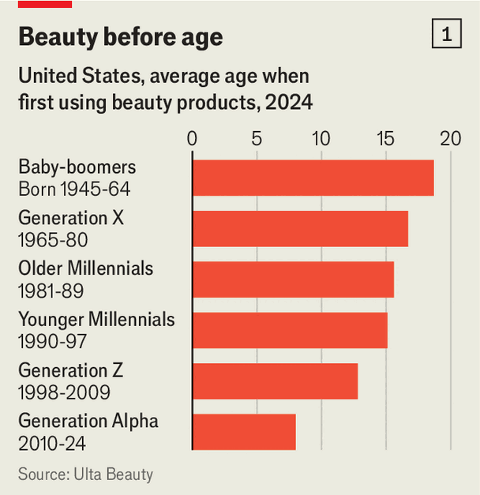
浪漫名称的粉色罐子已逐渐退出市场，取而代之的是贴有临床标签的简洁瓶装产品。如胶原蛋白胶囊（有时被称为“美容口服品”）和LED面膜等产品也日益流行。麦肯锡公司指出，男女消费者在美容服务上的支出在2024年接近1500亿美元，且对这类服务的依赖度持续上升。这些服务往往涉及消费者无法自行获取的物质和设备。肉毒杆菌可平滑肌肤，玻尿酸填充剂可让肌肤饱满，化学焕肤则能提亮肤色。激光既能去除毛发，也能让毛发更浓密。国际美容整形外科协会（International Society of Aesthetic Plastic Surgery）数据显示，2024年该领域非手术美容程序超过2000万例，较2020年增长近40%。事实上，美容与医学的界限已愈发模糊。■
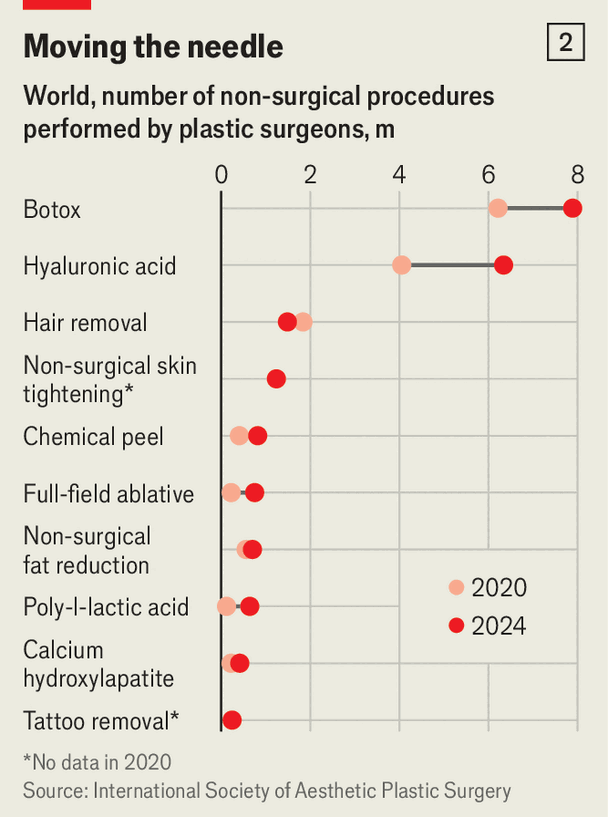
面部护理专家莎拉·查普曼（Sarah Chapman）为包括吉吉·哈迪德（Gigi Hadid）和维多利亚·贝克汉姆（Victoria Beckham）在内的名人提供服务，她表示伦敦的诊所已扩展至包含可开处方的皮肤科医生及其他医疗专业人士，后者会通过血液和粪便检测确定皮肤问题的根源。她称客户如今更希望看起来更健康，而不仅仅是去除皱纹和斑点。对新客户和产品的关注往往由新兴美容品牌引领。社交媒体使他们无需投入巨资进行营销即可建立业务。英国彩妆品牌查理·蒂尔伯里（Charlotte Tilbury）的创始人查理·蒂尔伯里指出，过去十年其品牌增长主要得益于社交媒体，称其为“我们最大的橱窗”。其他品牌也纷纷效仿。■
Bubble（2020年创立的护肤品牌）借助社交媒体积累了大量青少年粉丝。在香水领域，年轻消费者的需求也因诸如Sol de Janeiro（将香水重新包装为“喷雾”）和Kayali（指导消费者“叠加”使用，即购买更多）等新兴品牌而被激发。这些新兴品牌更多是机会而非威胁，传统品牌正积极收购这些热门品牌以实现增长。5月，美国美妆公司e.l.f. Beauty以最高达10亿美元的价格收购了哈丽·比伯（Hailey Bieber，贾斯汀·比伯之妻）的美妆品牌。雅诗兰黛（Estée Lauder）已收购The Ordinary，而6月，全球最大美妆企业欧莱雅（L'Oréal）收购了竞争对手“科学背书”品牌Medik8的多数股权。■
去年，法国巨头还将其在瑞士美容注射剂及其他皮肤科产品制造商Galderma（瑞士）的持股比例提高至20%，并表示将收购奢侈集团Kering的美容部门。拥有庞大美容业务的消费品巨头宝洁（P&G）和联合利华（Unilever）也各自展开了大规模收购行动。Kering的Joël Hazan指出，规模优势使行业巨头在零售商面前拥有更大议价空间，并具备开展高调营销活动的财力。在中国本土品牌如Proya的威胁下，西方传统企业正加大在美欧市场的布局力度。他们希望“Instagram Face”——无毛孔、饱满且异常完美的面容——不会很快过时。■
追踪塑造商业、工业与科技趋势的动态，请订阅我们的每周仅限订阅者阅读的全球商业领域简报“The Bottom Line”。■
§055 商业原题：Chinese AI models are popular. But can they make money? · 板块：Business · 栏目：商业
商业 | 红色警报 中国的人工智能模型很受欢迎。但它们能赚钱吗？自深Seek（DeepSeek）这家鲜为人知的中国人工智能实验室去年震惊世界，推出一款炫酷的新模型以来，中国在人工智能领域的影响力持续扩大。如今，中国已成为所谓的“开放权重模型”领域的无可争议的全球领导者，这类模型会公开训练过程中学到的数值参数（但不包括底层数据或源代码）。在热门的开放模型库Hugging Face上，中国模型的下载量已超过美国（见图表1）。不仅深Seek（据称计划在几周内发布其下一个“炫酷”模型）掀起波澜。■
9月，阿里巴巴集团旗下的通义千问（Qwen）系列模型在Hugging Face平台超越了Meta的Llama系列，成为最受欢迎的模型。圣诞节前夕，美国社交媒体巨头Twitter宣布将以超过20亿美元收购新加坡的中国AI实验室Manus（中国当局可能仍会阻止该交易）。1月初，MiniMax和Z.ai两家中国模型开发商在港上市，其股价随后大幅上涨。中国的模型已达世界级水平。在LMArena这一排名网站上，美国顶尖AI公司——OpenAI、谷歌、Anthropic和xAI提供的专有模型在性能基准测试中占据前列。但阿里巴巴、Z.ai等中国企业的开源替代方案也紧随其后。问题在于如何从这些开源模型中实现盈利。■
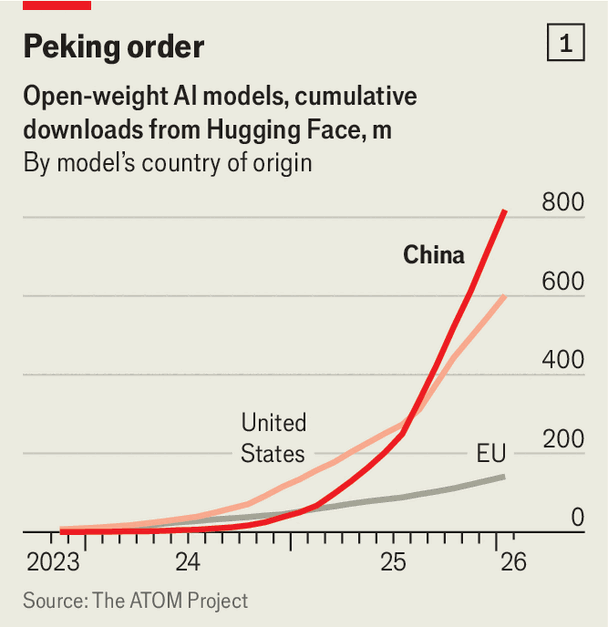
据数据提供商Sensor Tower发布的数据显示，OpenAI的ChatGPT通过苹果App Store在全球范围内12个月内的收入达到17亿美元，相比之下，中国十大最热门AI聊天机器人合计仅获得50万美元收入。其中大多数仍保持免费使用。通过向企业销售部署开源模型的服务以及相关基础设施，成为其开发者的主要盈利方式。但这一过程并不容易。MiniMax在2025年前九个月仅实现5300万美元销售额，却亏损51.2亿美元。Z.ai同样陷入严重亏损。中国AI行业——尤其是初创企业——正面临洗牌。中国模型开发企业的困境部分源于其高度竞争但规模相对较小的国内市场。■
去年DeepSeek的爆发式成功引发了行业“淘汰”，布鲁金斯学会（Brookings Institution）研究员凯尔·陈（Kyle Chan）指出，实力较弱的模型开发商纷纷退场。不过，市场依然高度拥挤。据彭博社智能研究（Bloomberg Intelligence）统计，截至今年9月，中国市场上提供的AI模型已超过500个，相较两年前仅有14个。中国消费者面对海量选择，其消费额微乎其微。对多数开发者而言，企业市场也未带来显著收益。中国企业在软件采购上一向吝啬，整体支出约500亿美元，不足美国企业的十分之一。这解释了为何中国AI企业纷纷将目光投向海外市场。一条路径便是拓展全球南方国家。
李子轩（Zixuan Li）领导着Z.ai的海外业务，他表示该公司主要在巴西、马来西亚和新加坡等与中国无冲突的国家拓展企业客户。11月，新加坡国家人工智能计划宣布其Sea-Lion模型已从Llama转向Qwen，并基于阿里云基础设施运行。高盛（Goldman Sachs）估算，中国主要云服务商——包括阿里巴巴、百度、字节跳动和腾讯——今年将在数据中心基础设施领域投资700亿美元，重点布局亚洲、拉美和中东地区。不过，这些市场大多体量较小。相比之下，西方市场才是更大的目标，中国模型在该地区也正获得越来越多的关注。Airbnb首席执行官布莱恩·切斯基（Brian Chesky）指出，该住宿平台已成为使用Qwen的公司之一。
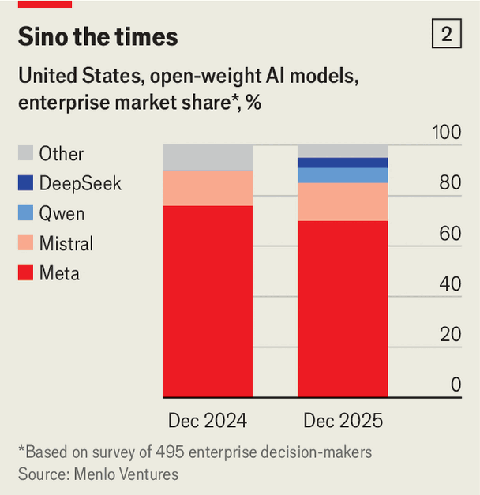
然而，西方大多数采用开源模型的主体是精打细算的初创企业，而非资金雄厚的大型公司。中国模型对中小型企业更具吸引力，因其免费且在计算需求方面比许多西方模型更轻量。这些模型还能迅速针对特定用途进行定制。开发者已基于阿里巴巴发布的400个开源通义千问模型，开发出超过18万个“衍生版本”。位于旧金山的开源模型运行平台火种AI创始人兼CEO林俏指出，初创企业希望以低成本快速试错，而开源模型恰好能“非常有效地”满足这一需求。不过，大型企业仍持谨慎态度。据硅谷风投机构Menlo Ventures调查，美国企业使用开源模型时，中国模型占比约为10%（见图表2）■
多数企业转而依赖Meta或法国开发公司Mistral的模型。一位美国大型企业的高管指出，数据隐私问题以及中国模型可能在西方被禁的风险，迫使系统进行调整。即便大型企业使用中国代码，也倾向于在自有基础设施上运行，而非通过供应商的云服务访问。这降低了风险，但也将收入留在了模型开发者的口袋里。对中国AI企业而言，在美国开展业务可能只会更加困难。去年，Z.ai被加入美国的“实体清单”，限制其获取该国技术。多个州政府已禁止在官方计算机网络中使用DeepSeek。■
TikTok的事件凸显了中国平台面临的复杂政治环境。这款风靡全球的中国所有短视频应用如今必须将其美国业务出售给本地财团。欧洲可能在商业上更为开放，尤其是如果其与美国的关系进一步恶化的话。随着在开发尖端AI的竞争中逐渐落后，其政府可能决定鼓励技术采用能带来更大收益。拥抱开放的中国模式将有助于实现这一点。然而，即便在欧洲，中国AI供应商也可能难以盈利。说服企业尝试免费模式是件容易的事；说服它们使用中国拥有的数据中心则是另一回事。这一切对阿里巴巴和腾讯这样的科技巨头而言，并不会构成生存威胁。■
通过将AI嵌入电商、社交媒体等服务中，他们能够提升这些服务并巩固对国内用户的控制。他们拥有充足的资金，且在数据中心建设上的投入远低于美国科技巨头。然而，对中国众多AI初创公司而言，前景却充满挑战。■ 为追踪塑造商业、工业与科技趋势的动态，订阅我们的周度会员专属简报“ The Bottom Line ”。
§056 商业原题：Strava’s public listing will help it race ahead of competitors · 板块：Business · 栏目：商业
，现在正是那些在12月31日承诺改变久坐生活方式的人开始降低目标的时节。但对这款广受欢迎的运动应用Strava而言，2026年已开启强劲开局。本月有报道称，该公司已秘密提交了公开上市申请，并聘请了投资银行家指导其完成整个流程。去年估值达22亿美元的Strava自疫情以来便加速前进，当时因无聊而焦躁的人群转向跑步以缓解封锁带来的枯燥。■
这款成立于2009年、最初专注于骑行领域的应用软件称，其用户数已突破1.8亿，较去年同期的1.35亿增长显著，而2019年仅为4800万。尽管该应用长期对财务状况保持低调，但其前高管在2020年曾表示公司已实现盈利。Strava的成功尤为突出，因其身处一个竞争激烈的市场，其中包括苹果公司（Apple）和耐克（Nike）等实力雄厚的竞争对手。Strava通过将独自锻炼转化为社交活动取得成功。用户可关注并为跑步伙伴或健身名人点赞，后者也可在应用中发布自己的运动数据。此外，用户还能利用该应用发现热门路线（2018年此类“热力图”曾引发争议，因其被曝出泄露了全球美军基地的布局信息）。■
这在很大程度上得益于其对数据的专注。Strava兼容大多数智能手机和智能手表，这些设备能够监测佩戴者的心率等数据。这使得爱好者不仅能追踪整体用时，还能分析表现，例如在陡坡上跑步时的表现。Strava现在需要说服更多用户升级至付费订阅服务。尽管许多用户频繁使用该应用，但很少有人愿意为此付费。公司未披露具体比例，但估计可能在个位数左右。因此，过去几年来，Strava一直在其应用中整合自动化指导功能，该功能可分析用户的运动表现并提供建议。去年，Strava收购了两家已开发此类功能的小型运动应用。■
Strava的CEO迈克尔·马丁表示，公开上市将为其提供“在需要进行更大规模收购时轻松获取资本”的机会。然而，从痴迷人工智能的风险投资那里获得此类资金可能颇具挑战性。据数据提供商Crunchbase统计，去年全球风险资本对健身初创企业的投资较2021年峰值60亿美元下降了五分之四。公开市场提供了另一种选择——这将有助于Strava保持行业领先地位。■ To track the trends shaping commerce, industry and technology, sign up to “The Bottom Line”, our weekly subscriber-only newsletter on global business.
§057 商业原题：The battle for Warner Bros is only getting fiercer · 板块：Business · 栏目：商业
争夺华纳兄弟的战争愈发激烈
Netflix为阻止派拉蒙提高报价
自去年秋天以来，Netflix与派拉蒙如同《猫和老鼠》中那只总追不上路 Runner 的老猫，对华纳兄弟探索公司展开了激烈争夺。刚被埃利森家族收购的派拉蒙最初被视为最有可能胜出的竞标者。但上个月，Netflix向埃利森家族扔下了一块巨大的卡通巨石——它宣布已与华纳管理层达成协议，收购该公司大部分资产。争夺尚未结束。派拉蒙正大声游说华纳股东违抗管理层，接受其报价，称其“在所有维度都优于Netflix的报价”。
1月20日，Netflix调整报价，将华纳估值为830亿美元，从原本的现金与股票混合方案改为纯现金方案。此举旨在加快华纳的审批流程，监管机构预计将于4月举行股东投票。但在此前一周，两家竞购方均赴欧洲游说，试图说服监管机构自己是更优的收购方。作为两家公司中规模较小的一方，派拉蒙在反垄断审查方面似乎更有优势。本周Netflix公布的全年财报再次凸显其实力：拥有32.5亿全球订阅用户，年收入增长16%，营业利润率接近30%。若与华纳合并，其规模将远超好莱坞竞争对手。但Netflix在本周致股东的信中明确指出，视频领域的竞争早已超越好莱坞范畴。■
包括YouTube在内的流媒体平台，Netflix在多数主要市场中仅占电视观看量的不到10%。它还主张，与派拉蒙的交易对美国就业更有利，因为后者计划若能与华纳合并，将实现60亿美元的“成本协同效应机会”。尽管埃利森夫妇与唐纳德·特朗普的友好关系可能在美国为其带来优势，但此举未必能帮助其在欧洲获得支持，因为特朗普试图获取格陵兰岛的行为已激怒欧洲。而非依赖监管机构对Netflix亮红灯，派拉蒙似乎更倾向于通过提升自身报价来争取。目前派拉蒙以每股30美元的价格收购华纳全部资产，而Netflix仅以每股27.75美元的价格收购其流媒体平台和工作室，允许华纳股东保留其电视和有线网络业务。■
哪家的交易更有利，取决于这些衰退的电视网络如何估值。派拉蒙坚持认为其报价更具吸引力。但要说服华纳股东违背管理层建议，它可能需要提高报价。这对奈飞而言将面临两难。本周的全现金收购方案则显示了其收购华纳的认真态度。但不同于可以动用埃利森家族在甲骨文科技股票上的财富的派拉蒙，奈飞必须考虑自身股东的反应。许多股东对收购华纳项目持怀疑态度：自10月开始接触华纳以来，奈飞的市值已下跌近三分之一（见图表）。进一步提高报价可能考验他们的耐心。摩根大通分析师罗伯特·费希曼预计，奈飞可能再提高每股1至2美元的报价。■
而派拉蒙则需要华纳的规模来保持流媒体领域的竞争力，对奈飞而言，华纳交易更多是一笔巨大的内容交易。奈飞有着在内容价格过高时选择退出的历史：去年它允许埃利森家族（Ellisons）以77亿美元收购《乐一通》（Looney Tunes）七年的终极格斗冠军赛（Ultimate Fighting Championship）版权，从而以更低的价格竞标。在四月股东投票前的争夺战中，预计还会出现更多变数。费什曼（Mr Fishman）写道：“最可能的下一步……是更多竞标。” 奈飞与派拉蒙都面临焦虑时刻，但对《路 Runner》（Road Runner）来说却是利好消息。■ 要追踪塑造商业、行业和技术趋势的动态，请订阅我们的周报“The Bottom Line”，这是专为订阅者提供的全球商业资讯。
§058 商业原题：Signing the office birthday card · 板块：Business · 栏目：商业
“团队，请大家在周三中午前给莎拉的生日贺卡签名。我们将在周四上午10点在海森堡果汁吧（Heisenberg juice bar）二楼举行小型聚会为她庆祝。你们可以通过点击链接添加留言。谢谢。丹。” 又是一则来自我新经理的生日提醒。他似乎读过某项研究，指出当人们忘记互相祝福生日时，被冷落的人会减少努力程度。因此现在我们都被迫要写出真挚的祝福，以向丹展示我们是团队的一员。首先意味着查看其他人写了什么…… “嗨，莎拉。生日快乐！罗德尼。” 想象力奖毫无悬念。 ■
但罗德尼率先发起了行动，这让他获得了撰写显而易见祝福语的许可。我也可以写出同样的内容：这将是对我对莎拉生日情感投入的公正总结。然而，这类办公卡片的第一条规则是，你不能写出与上级完全相同的祝福语。“生日快乐，莎拉！吉尔伯特。”同样的字眼，不同的顺序。接下来的人必须另辟蹊径。“亲爱的莎拉！生日快乐！希望你度过愉快的一天！爱你的娜塔莉。”娜塔莉的信息提升了祝福的层次。她写的字数是罗德尼和吉尔伯特的两倍，也流露出更多温情。“亲爱的莎拉！生日快乐！希望你度过非常愉快的一天！爱你的贝莎。”仅仅多了一个词，却暗示了与莎拉更深层的联系。娜塔莉突然显得有些疏离，罗德尼则显得格外冷淡。“生日快乐，莎拉！/think”
祝你有一个非常、非常、非常棒的一天。汤姆。”汤姆未能理解，不断增加“非常”一词只会让他显得讽刺。“亲爱的莎拉。公司靠团队建立，团队靠信任维系，而你正是我们信任的人。生日快乐。尼姆。”尼姆总是写这种信息。她唯一的读者是丹：她想借此展示自己对团队的重视。在特里生日信息中她提到了一个名为“Project Aristotle”的项目。在我收到的信息中，她则大谈特谈“全黑队”（All Blacks）。“生日快乐！祝你有一个好日子！别喝太多！萨曼莎！”这似乎表明萨曼莎足够了解莎拉，能与她开玩笑，甚至可能在工作之外建立了某种联系。但这也暗示莎拉或许是个酒鬼。“你好莎拉！生日快乐。别把蛋糕全吃光！马丁。”马丁上周才加入，是实习生。他误解了当前的处境。
亲爱的莎拉，生日快乐！很高兴有你加入团队！克拉拉。这是克拉拉的标准范例。专业、友好，几乎没有任何改进空间。“HB，SC！期待周六见面。满满爱意，WP”。这是韦斯利的大错——BM。是的，他和莎拉关系亲密，但这样的表达完全不具包容性。现在包括丹在内的我们所有人都感觉团队凝聚力稍有减弱。“亲爱的莎拉，我周六可能见不到你，但周一一定见面。生日快乐。弗雷达。”正如我所说。“亲爱的莎拉，周六海森堡果汁吧见。雷。”雷总是只写我们见面的地点。他曾经写过一张慰问卡，内容是：“周六 crematorium 见。”他即将退休，对任何事都已不再在意。
今日我们暂且搁置计划与方案，为莎拉（Sarah）庆生——她是团队的粘合剂。她应对混乱、化繁为简，确保项目不偏离轨道。丹发现ChatGPT后写道：“生日快乐，莎拉！感谢你为团队带来的冷静解决问题的能力、在复杂项目中找到最优路径的天赋，以及每次会议中传递的正能量。我们真的因为有你而变得更优秀。祝你度过美好一天！芭芭拉（Barbara）。”芭芭拉也如此表达：“亲爱的莎拉！生日快乐！你总能在最简单的项目中发现障碍，让每次会议略显压抑。我们真的因你而成为更强大的团队。维奥莱塔（Violetta）。”莎拉与维奥莱塔确实是好朋友，至少我这么希望。现在轮到我了……[时间流逝]……[更多时间流逝]……我只需写点什么。“亲爱的莎拉！■
祝你生日快乐！金（Kim）。天啊，编辑按钮去哪儿了？■ 《经济学人》订阅者可注册我们的Opinion新闻简讯，汇集了我们的最佳社论、专栏、特稿及读者来信。
§059 商业原题：TikTok is still a danger. America no longer cares · 板块：Business · 栏目：商业
TikTok吞噬了无数青少年的课余时间。但同样也让众多政客彻夜难眠。自该短视频应用近十年来问世以来，西方政府一直怀疑其是中国共产党工具。2020年，特朗普在首次总统任期期间曾宣布国家紧急状态，试图禁止TikTok未果，声称其窃取用户数据并传播宣传内容。四年后的今天，拜登政府下，国会跨党派多数通过法案，要求该应用与中方所有者分离，否则将被禁止。
在最高法院去年维持该法律后，TikTok在美国最大市场的日子似乎已到尽头。但一年后，尽管形势不利且违反法律，TikTok仍在美国继续运营。特朗普去年1月重新掌权后，其首项举措便是下令官员暂停执行禁令75天，此后他不断延长这一期限。如今，这款应用似乎已注定长期留在美国。TikTok首席执行官在圣诞节前向员工表示，已与主要由美国投资者组成的集团达成协议，将美国业务所有权转移，并称交易将于1月22日完成。截至本文发表时，最新期限是否能达成仍存疑。但一项解决方案似乎已近在咫尺。数年的戏剧性事件似乎正走向一个出人意料的低调结局。从表面看，这项拟议交易似乎已解决中国问题。■
美国法律要求，来自“外国对手”（包括中国）的投资者不得持有TikTok超过20%的股份。其总部位于北京的母公司字节跳动（ByteDance）正创建美国版TikTok，并将持股比例降至19.9%。美国科技巨头甲骨文（Oracle）和投资公司银湖资本（Silver Lake）各持有15%，阿联酋主权财富基金MGX也将持有15%。其余股份将由“字节跳动现有投资者的关联方”持有，这很可能意味着该公司在美国的股东。用户数据将继续由甲骨文在美国存储，甲骨文还将基于美国数据重新训练TikTok的算法，以防止外国操控。目前看来一切顺利。但问题在于，字节跳动仍将密切参与该公司运营。■
它将获得董事会席位，并据称将以约20%的美国实体营收作为持续支付对价，租用其算法。TikTok表示，其由字节跳动控股的子公司将继续管理美国公司的广告业务、电商部门及“全球产品互操作性”，暗示两款应用之间存在紧密联系。广告商被告知可通过单一平台在全球范围内购买TikTok广告位。上述安排显然违背了法律要求切断TikTok与字节跳动之间任何“运营关系”的规定。一位分析师总结称，字节跳动或许不拥有这家公司的“车”，但依然掌握着“引擎”。为何特朗普这位曾将TikTok称为威胁“美国国家安全、外交政策和经济”的总统，却同意这一“无引擎的汽车”式交易？原因之一是舆论压力。■
随着越来越多的美国人涌入TikTok，反对禁用该应用的人数也在增加。2020年特朗普曾针对这款应用采取行动时，它还只是青少年间的潮流。皮尤研究中心2023年的调查显示，支持禁用TikTok的人数是反对者的两倍。到去年，支持与反对的票数几乎持平。如今，TikTok在美国拥有1.7亿用户，包括约40%的45至54岁人群，全球市场洞察（GWI）数据提供商估算：这款应用不再只是青少年的专属，连他们的父母也加入了。另一个原因是，这笔交易对总统盟友而言似乎是一笔划算的买卖。副总统J.D.万斯9月表示，买家将为TikTok的美国业务支付约140亿美元。若属实，这相当于TikTok美国广告收入的一年总额，eMarketer研究机构估算。如此大的折扣可能部分反映了持续支付给字节跳动的租赁费用。■
但核心因素仍是，面对禁令，TikTok的中国母公司几乎别无选择。“这就像说‘我要买房子，如果你不卖给我，我就烧了它’”，一位美国买家顾问如此形容。特朗普本人也可能从TikTok的新架构中获益。特朗普及其盟友向来不介意敦促美国媒体对政府进行更友善的报道。在甲骨文（Oracle）旗下，TikTok将拥有一个监管人，其所有者拉里·埃里森（Larry Ellison）与总统关系密切，其家族掌控的CBS新闻已率先实施特朗普风格的改革。特朗普去年签署的TikTok行政命令还规定，“可信赖的安全合作伙伴也可向其他美国政府官员共享信息”。美国民众的媒体消费也可能因此受到政府的影响。■
六年过去了，从最初尝试禁止TikTok开始，它依然被视为安全威胁。越来越多的美国人沉迷于这款应用。而早在2020年，仅四分之一的美国用户通过TikTok获取新闻，如今这一比例已升至一半。然而，美国人似乎已对这场风波感到疲惫。国会自该禁令通过以来的一年里，其针对TikTok的禁令已被明显忽视，却似乎难以再激起对这一脆弱新协议的新愤怒。政府内部的中国鹰派，如马可·鲁比奥，曾在参议院竞选期间反对TikTok的“特洛伊木马”，如今已转向支持总统，转而关注委内瑞拉、格陵兰岛等其他地区的冒险行动。民主党人对外国威权主义的关注正在减少，因为他们更担心国内的威权主义问题。几年前对TikTok的愤怒情绪如今似乎已成为另一个时代的时光胶囊。■
这种不负责任且自我谋利的新安排似乎在几乎没有反对声中推进，这并不意味着TikTok变得更安全，而是表明美国其他方面已变得更加危险。■ 《经济学人》的订阅者可注册我们的Opinion简报，汇集了最佳的社论、专栏、特稿及读者来信。
§061 印度最宜居超级城市的秘密原题：The ascent of India’s economy · 板块：Finance & economics · 栏目：财经
印度极少成为经济乐观的源泉。所谓“印度式增长”以异常缓慢著称，仿佛被宇宙设定为固定速度。即便在最近几十年，随着印度成为全球增长最快的大型经济体，并逐渐接近世界第四大经济体的地位，它始终未能达到20世纪亚洲“虎”的增速。总理纳伦德拉·莫迪设定的2047年（独立百年纪念日）成为发达国家的目标，似乎遥不可及。作为全球人口最多的国家，印度长期在全球经济中处于边缘地位。但如今，它展现出令人瞩目的潜力。■
鉴于印度面临的种种逆风，这种乐观情绪更为明显。今年8月，美国总统唐纳德·特朗普对印度征收50%的关税，将25%的“对等”税率与另外25%的惩罚性关税相结合，以惩罚印度大量购买折扣后的俄罗斯原油。私营部门投资乏力，外国投资者正抛售印度备受追捧的股市，卢比去年年底对美元跌至历史低点。然而，幸运、宏观政策和结构性改革这三者的结合，为短期和长期都带来了乐观的理由。截至第三季度，印度GDP同比增长8.2%，远超预期。政府已将2026财年（截至3月31日）的经济增长预期从6.3-6.8%上调至7.4%，这一调整将在2月1日的预算中体现。■
印度要实现莫迪总理2047年的目标，就需要这样的增速。与此同时，通货膨胀率已降至1.3%（见图表1）。政府称当前正处于“黄金比例时刻”。首先考虑运气因素。2025年印度连续第二年迎来良好的季风降雨，推动了农业产出增长。食品价格占印度消费者价格指数的46%，去年食品价格下降2.7%，帮助拉低了通胀率。这提升了实际可支配收入和消费支出。低通胀还为增长数据带来了统计上的提升。由于印度的GDP平减指数（主要基于批发价格）在截至10月的一年里仅上涨了0.5%，实际增长速度因此加快，而名义增长速度放缓。接下来是宏观政策。■
财政紧缩计划已将预算赤字从2021财年（当时因疫情支出膨胀）的9.2%的GDP水平削减至2026财年4.4%的目标。剔除利息支出后，赤字将仅为GDP的0.9%。今年政府放缓了紧缩节奏，仅将赤字缩减约0.5%的GDP，较2025财年1%的缩减幅度有所降低。在特朗普宣布额外关税后，莫迪政府简化了印度的商品与服务税，削减税率预计每年成本达480亿卢比（约合53亿美元）。基础设施资本支出被提前安排。即便如此，预算公布时政府或承认已达到4.5%的目标。此后将转向基于债务与GDP比率的更宽松目标，计划到2031年将该比率从目前约56%降至50%。印度储备银行（RBI）的立场也发生了转变。■
自2024年12月上任以来，桑贾伊·马洛特拉（Sanjay Malhotra）比前任更愿意让卢比贬值。在通胀得到控制后，过去一年利率下调了1.25个百分点。马洛特拉向《金融时报》表示，利率可能将在“很长一段时间”保持低位。但最持久的还是第三个因素，结构性改革。野村证券（Nomura）的索尼娅·瓦玛（Sonal Varma）指出，通胀下降不仅限于食品领域。此前改革，如建立数字支付基础设施以提高价格透明度，以及印度储备银行（RBI）于2016年转向通胀目标制，已帮助降低通胀预期并开始显现成效。RBI还积累了更多外汇储备。银行业清理和破产法改革维持了金融体系稳定。■
从更长远的视角看，印度经济改革前景更加乐观，得益于一项针对困扰经济数十年问题的积极改革努力。自2019年11月起，一项长期讨论的劳动力法简化方案正式实施，将原本29部法规缩减至4部。外资保险行业持股上限74%的限制已被取消。核能领域向私营部门开放。金融市场监管体系完成重构。各邦政府也同步推进改革，例如允许女性夜间工作，使纺织与电子工厂可延长运营时间。由前内阁秘书拉吉夫·加瓦领导的积极委员会每月发布针对各邦及中央政府的潜在改革清单。意外地，特朗普的政策也给印度改革进程注入了推动力。■
他的关税政策挫败了该国吸引制造商将供应链从中国转移出去的希望。特朗普对印度实施的反制关税高于对越南或泰国，额外的25%使情况更加恶化。印度亟需新的增长战略。这些关税也为中国总理莫迪推动长期被视为过于困难的改革创造了政治空间。事实上，印度出口商大多已对这些关税置若罔闻：12月出口额比去年同期增长1.9%；11月则增长19.4%。当然，劳动密集型制造业也出现了一些困境迹象：12月宝石出口下降5%，对美国总出口增长也有所放缓。■
然而，卢比贬值在一定程度上缓解了损失，因为这提升了出口产品的美元价值，同时多元化发展也发挥了作用——特别是印度在全球电子产品市场的份额持续扩大。苹果公司目前在印度生产的iPhone约占全球总量的五分之一。手机制造商受益于“基于产量的激励措施”（即根据工厂产量提供的补贴），以及更温和形式的政府支持。南部的泰米尔纳德邦对建设面向富士康（iPhone主要代工制造商）工人的新工业城镇表现出与中国相似的热情。在靠近德里的诺伊达，三星公司 sprawling 的工厂里，工人现在自行生产触摸屏和电路板，而非组装在别处生产的组件。■
印度智能手机制造的附加值从2021年的45亿美元增至2025年的173亿美元（数据来自印度手机与电子协会）。电子产品免于美国关税的限制并无坏处。中印关系在2020年边境冲突后一度冻结，如今已有所缓和。在加勒万河谷（喜马拉雅山脉争议地区）发生对峙后，印度曾暂停签证发放、投资许可及直航航班。两国目前已在贸易领域达成缓和，部分原因是应对特朗普的贸易战。12月对华出口同比激增近70%（见图表2）。印度政府认识到本国建设全球制造中心的目标依赖于中国技术和设备，因此重新放宽签证制度，便利中国工人参与印度工厂建设。
据报道，印度政府正在考虑重新允许中国企业投资。政府已开始逆转此前趋于保护主义的趋势。平均有效关税率从2014年的约13%升至2021年的18%，当时部长们试图通过提高关税来鼓励国内制造业。目前该税率已降至16%。印度并未拥抱自由贸易，但正通过与富裕国家签订贸易协定开拓新的出口市场，同时降低从其他发展中国家进口零部件的壁垒。已与英国、阿曼和新西兰达成协议，与欧盟的协议预计将于1月26日宣布，届时欧盟委员会主席乌尔苏拉·冯·德莱恩将作为贵宾出席印度的国庆活动。加拿大和印度表示正在推进双边协议。■
两国关系因2023年加拿大锡克教活动家哈迪普·辛格·尼贾尔（Hardeep Singh Nijjar）被刺杀而紧张，但正如中国的情况一样，特朗普的贸易战反而让两国关系更紧密。印度财政部长尼尔马拉·西塔拉曼（Nirmala Sitharaman）表示，她计划在下月预算中简化关税。“海关是我接下来的重点整顿任务，”她12月时表示。与此同时，原本用于保护消费者和环境的进口质量控制订单（quality control orders, QCO），即每项进口都需获得的认证，已大幅缩减。至2024年初，相关订单数量已从765个缩减至...自2025年中期起，政府主要针对中间产品削减了这些订单，包括用于聚酯纤维的对苯二甲酸（purified terephthalic acid）和用于纺织品的粘胶短纤维（viscose staple fibre）。■
qcos提升了主导国内这些原材料生产的大工业集团的利润，但帮助维持了服装厂的竞争力劣势，而服装厂正是印度迫切需要的低技能岗位提供者。印度下一步的考验是说服投资者，其改革热情将持续下去。尽管GDP增速迅速，但企业资本支出依然疲软。净外国直接投资为负，因为外国企业将利润汇回母国，而印度财团则将资金投向海外。印度的好运或许还能持续。但与其依赖季风降雨，或指望美国最高法院推翻特朗普的关税政策，不如……正好，印度似乎已决定，推动经济转型的风险，比被时代抛在后面的风险要小。■
获取更多关于经济学、金融和市场的重大事件的专家分析，请订阅我们的每周专属订阅简报Money Talks。■
§062 财经原题：Can America’s bond market keep defying the vigilantes? · 板块：Finance & economics · 栏目：财经
唐纳德·特朗普第二个任期已满一年，投资者对美国资产的抛售理由可谓层出不穷。他们必须应对巨额财政赤字、对美联储的攻击、贸易战——以及最近对吞并格陵兰的痴迷，当时这一举动一度让北约濒临崩溃。偶尔，市场信心会有所动摇。近期再次出现波动，当格陵兰风波与日本国债市场动荡相撞，美国国债收益率随之攀升。■
财政部长斯科特·贝森特试图将全部责任归咎于日本冲击波对全球政府债券市场的影响。确实，近期其他地区收益率也有所攀升。但通常情况下，海外动荡会推高美元，因其被视为避险资产。这次美元却在动荡中走弱，这表明美国国内也存在隐忧。不过以往的危机往往转瞬即逝，而此次损害仍属轻微。目前十年期美债收益率仅比1月16日水平高出0.02个百分点。更重要的是，当前收益率远低于特朗普去年就职时的水平，且自那以来的跌幅也超过其所有主要经济体的同类债券（见上图）。换句话说，尽管总统频频制造混乱，债券狙击手们仍基本放过他。■
其他指标也呈现出相似的乐观景象。投资者持有美国国债所需的溢价，而非购买其他政府债券并将收益兑换成美元，目前处于历史正常水平。事实上，这一溢价在最近几个月有所收窄，布鲁金斯学会（Brookings Institution）的罗宾·布鲁克斯（Robin Brooks）计算指出（参见底部图表）。去年年中时，美元似乎比基于短期因素（如国家间利率差异）预期的要疲软。如今，美元已回到宏观经济学模型预测的水平，美国企业研究院（American Enterprise Institute）的斯蒂文·卡明（Steven Kamin）认为（参见图表3）。到底发生了什么？一个答案是，尽管美国财政问题多多，但与其他发达国家相比，其财政状况仍显得相对清白。日本背负着巨额债务，法国则正经历缓慢发酵的财政危机。■
英国仍深陷低增长、高税收的困境。山姆大叔（Uncle Sam）可能负债累累，但至少美国经济仍在增长，其人口结构比其他富裕国家更不悲观。美国经济的体量以及美元在全球金融体系中的独特地位，是额外的优势。对美国财政赤字的担忧并非新鲜事，历史上屈服于这种担忧往往意味着损失财富。另一种可能性则较为黯淡。当经济增长放缓时，债券表现良好，市场会预期利率下降，这使得现有债券的较高票息显得更具吸引力。尽管美国经济增长稳健，但增速已放缓——尤其与特朗普推行反增长政策（如关税和大规模驱逐移民）下本可能实现的增长相比。■
如果2026年经济增长加速，特朗普先生的减税政策全面生效，这一解释将接受检验。或者，市场可能误判了形势。交易员习惯于应对经济增长和通胀的小幅波动。特朗普先生关于关税、移民、美联储独立性等激进政策的影响，难以准确评估。2021-22年通胀率时隔40年再次飙升，市场起初未能及时意识到美联储必须加息。风险在于，一旦投资者改变看法，他们的新认知将难以撼动。■ 了解更多关于经济学、金融和市场的深度分析，请订阅我们的周度专属通讯《Money Talks》。
§063 财经原题：Japan’s bond-market tremble reflects a fiscal-monetary clash · 板块：Finance & economics · 栏目：财经
日本政府债券（JGB）市场出现异常波动。1月20日，日本最长期限债务大幅抛售，30年期债券收益率单日飙升0.25个百分点，创1999年以来最大涨幅；40年期债券收益率首次突破4%。尽管次日收益率回落，但动荡的债券市场仍将在1月22日至23日日本银行（BoJ）会议期间持续发酵。正如所料：投资者已察觉到央行与高市早苗政府之间的政策冲突。
■
这场动荡的直接原因是人们对财政政策的担忧。1月19日，自10月上任以来首次担任首相的麻生太郎宣布将于2月8日举行大选，寻求为她所称的“负责任且积极”的财政扩张政策获得授权。她承诺暂停食品消费税8%的征收两年，并增加国防和产业政策支出。仅暂停食品消费税每年就将耗费5万亿日元（320亿美元），相当于最新财政年度预计税收收入的6%。即便麻生太郎在选举中失利，她对减税的支持也意味着日本政界鲜有人呼吁财政紧缩。（其前任石原伸晃则是财政鹰派。）尽管麻生太郎称将通过削减税收而非新增债务来融资，但投资者对此持怀疑态度。如今，他们有充分理由担忧。日本政府债券（JGB）市场比以往更加依赖外国买家。■
这在长期限债务（即到期时间超过十年的债券）市场尤为明显，正是这一板块出现了抛售。2025年，外国投资者占长期国债最终需求的53%，较疫情前的22%显著上升。这主要是因为传统国内买家，如保险公司和日本央行（BoJ），已基本消失。许多这类买家购债并非单纯追求收益（例如日本央行曾试图通过购债重振经济）。外国投资者则主要关注价格和收益率。此外，通胀已接近正常水平。核心消费者价格涨幅已持续超过日本央行2%目标近四年，但央行仍谨慎加息，决心彻底根除通缩。■
目前有迹象表明通胀正变得根深蒂固。日本央行行长植田和人在12月表示：“日本的潜在通胀正稳步接近2%。”他指出企业利润创新高、劳动力短缺加剧、连续两年大幅涨薪以及通胀预期快速上升。如果植田和人判断正确，日本央行实施的负实际利率（通胀调整后）政策即将接近尾声，将不得不将利率上调至“中性水平”，即既不刺激经济也不抑制经济的水平。日本央行当前名义利率为0.75%，高盛估计日本的中性利率区间在1-2.5%之间。这与债券市场的押注方向基本一致。■
十年期国债收益率——反映债券持有人对未来十年平均利率的最佳预估——已从两年前的0.6%攀升至2.2%。这意味着货币政策与财政政策或将爆发冲突。上田真司希望通过提高借贷成本抑制通胀并强化日元，而高市早苗则主张扩大财政支出，可能涉及新增借贷。无论采取哪种路径，都将加剧政府本已背负的130%GDP的净债务压力。高市早苗称加息是“愚蠢的”，其导师安倍晋三曾在2013年通过迫使日本央行（BoJ）让步，结束了类似的政策冲突。高市早苗的政策路径或将导致通胀在一段时间内持续走高，削弱日本家庭的购买力，同时使日本国债（JGBs）贬值。其政策时机也颇为不妙。■
日本几乎不需要刺激政策：日本政府对“产出缺口”的估算接近零。这并非日本的“利兹·特拉斯时刻”——由突然的财政宽松引发的恐慌，如英国在2022年所经历的那样。由于日本政府债券（JGBs）主要由国内持有，资本外流风险不大。但投资者的谨慎态度是合理的。■ 了解更多关于经济学、金融和市场的深度分析，请订阅我们的周度专属通讯Money Talks。
§064 财经原题：American decay versus American dynamism · 板块：Finance & economics · 栏目：财经
它却因宣布出售美国国债头寸而引发关注。该基金的管理者强调，这一决定并非因美国对格陵兰（丹麦领土）的领土威胁，而是基于对华盛顿政府肆无忌惮的过度支出的判断。该基金当然不会抛售美国股票，美国股票占其上市股票持仓的60%。其私募股权资产同样高度集中于美国。■
美国发行方占比更高，接近80%。阿卡德米克养老金（AkademikerPension）在美国市场的配置比例因此清晰地展现了当前全球市场最激烈的利益博弈。即便标普500指数在1月20日因唐纳德·特朗普（Donald Trump）再度威胁对格陵兰岛（Greenland）加征关税（后已撤回）下跌2%，美国资产仍持续吸引投资者。在这一博弈的两端，美国制度性衰败正施加巨大拉力。国内外投资者担忧美国孤立主义与偶尔的强硬态度结合而成的负面效应。贸易等经济政策的自我毁灭性倾向始终是他们的忧虑所在。他们担忧华盛顿巨额赤字、白宫对美联储独立性的攻击，以及对不可预测且有时敌对总统缺乏立法约束。
另一端则牵动着无与伦比的美国活力。美国拥有庞大且高效的资本市场，与几乎所有其他富裕国家不同，它在过去二十年间持续保持着稳健的生产率增长。市值超过1万亿美元的上市公司中，有10家是美国企业。在人工智能领域引领全球竞争的私营企业，几乎全来自美国。有位投资者最悲观的解读是：特朗普对格陵兰的威胁，今年会对微软或苹果的盈利产生多大影响？1月20日这样的日子让人觉得衰败似乎已成定局。但去年四月特朗普宣布将对全球进口商品征收巨额关税时，情形也似乎如此。对经济损害和地缘政治孤立的恐慌仅持续了短暂时间。
2025年前11个月，6280亿美元涌入美国股市。尽管丹麦减持，外国投资者持有的美国国债仍创历史新高。部分投资者认为，特朗普的“TACO贸易”（即退缩策略）是支撑股市的关键。这仅是部分原因。美国实际关税税率高达11.2%，为二战以来最高水平。与此同时，美国上市公司2025年每股收益同比增长约12%，而其他发达国家仅为1%。若盈利下滑，特朗普的部分政策调整恐不足以阻止股市暴跌。■
尽管欧洲股市，尤其是银行和国防企业的股票备受关注，但欧洲企业的盈利水平仍未突破2008年全球金融危机前的峰值。高盛集团分析师预计，未来五年美国股市的每股收益年增长率约为6%，是其他富裕国家的两倍。世界不应指望投资者表现出过多的道德感。金融市场本质上是无道德的。任何受爱国主义激励或被政府推动出售美国资产的欧洲人，都将为那些不那么守规矩的买家提供廉价机会。任何低于全面资本管制的措施——即便当前紧张局势升级，这种可能性依然微乎其微——恐怕效果有限。■
美国人不应相信本国企业活力使其免受金融冲击的影响。从悉尼到斯德哥尔摩的投资委员会已做好充分准备。若美国率先出现经济放缓，全球其他地区企业盈利复苏，或美国在人工智能领域的领先地位出现衰退迹象，即便在最佳情况下也会造成损害。如今，这些迹象将被视作长期滞后的资产撤离美国的合理借口。若美国活力衰退，随之而来的抛售将更加猛烈。■ 《经济学人》订阅者可注册我们的Opinion通讯，汇集我们的领袖文章、专栏、客座评论及读者来信精选。
§065 财经原题：National job stereotypes need updating · 板块：Finance & economics · 栏目：财经
发达世界的劳动力市场正迎来繁荣期。过去三年间，OECD（主要由富裕国家组成的组织）的平均失业率屡创新低。适龄劳动人口的就业率达到历史新高（见图表1）。在关税、地缘政治不确定性以及人工智能对就业威胁的背景下，这一表现堪称亮眼。在强劲的整体数据背后，更令人瞩目的是结构性变化。长期存在的刻板印象正在消融。随着时间推移，许多国家已从高失业率的困境中走出，转变为就业增长的引擎。
爱尔兰的失业率长期居高不下，促使人们迁往英国，再迁往美国寻找工作。如今，三国的失业率却大致相当。相比之下，智利曾以低失业率著称。但到2010年代末，随着其他国家失业率下降，智利的失业率却成为OECD国家中最高之一。最近打破就业市场刻板印象的进程加速推进。近几十年来，澳大利亚的失业率平均比新西兰高0.5个百分点。如今其失业率却低了1个百分点，因新西兰人正应对房地产泡沫破裂带来的冲击。2010年代末，哥斯达黎加曾难以将失业率降至10%以下，如今已降至5.8%。最近几个月，加拿大的失业率急剧上升，而美国的失业率则保持稳定。■
南欧地区经历了最显著的转变。在欧元危机最严重时期（2012-13年），葡萄牙、意大利、希腊和西班牙的平均失业率接近20%。评论人士将这些南欧国家戏称为“PIGS（葡萄牙、意大利、希腊、西班牙）”，用以贬低其与德国、荷兰及北欧国家所谓更勤奋的北方人形成对比。根据最新发布的数据，PIGS的失业率可能首次低于瑞典、挪威、冰岛、芬兰和丹麦（见图表2）。希腊的失业率仅为8.2%，酒店业者抱怨劳动力短缺。相比之下，芬兰失业率近期首次在1990年代后突破10%。别再关注PIGS了，现在该担心SNIFD了。北欧与南欧的趋同部分反映了更深层的趋势。■
发达世界的劳动力市场正变得越来越相似。2000年代，最失业的国家的年度失业率平均比最就业的国家高出14个百分点。而如今这一差距已缩小至8个百分点。几乎所有地区都保持了相对较低的失业率。这一趋势可能由多种因素共同推动。教育水平的提升意味着更少的人真正无法就业。例如，像Indeed和LinkedIn这样的平台通过技术进步，使求职者与岗位的匹配变得更加高效。更严格的福利政策也使得依赖救济金维持生计变得更加困难。结果是，一个发达国家的劳动力市场正日益难以与另一个国家区分开来。不过，SNIFD仍可向PIGS学习一二。■
OECD最近称赞意大利在提升终身学习方面的计划，这可能帮助降低了长期失业率。国际货币基金组织指出，希腊的改革努力“自疫情以来促进了劳动力市场调整”。该基金还称赞西班牙“临时就业的空前下降”，这源于2021年劳动力市场改革。而北欧国家的劳动力市场则显得迟缓，而他们的“猪队友”却在飞速发展。■ 如需获取更多关于经济、金融和市场的深度分析，订阅我们的周度专属通讯《Money Talks》。
§066 财经原题：An audacious new book about a “precocious” country · 板块：Finance & economics · 栏目：财经
2014年至2018年担任印度政府首席经济顾问的阿文德·苏布拉曼尼亚（Arvind Subramanian）曾做出一个令人意外的发现。他撰写的年度《经济调查》意外地吸引了大量读者。这份在每年预算前夕发布的报告，除了常规的税收收入、通货膨胀和粮食产量数据更新外，还包含引人注目的图表、挑衅性的论点和修辞手法。2016年他发布了一张图表，以简洁明了的方式呈现民主与发展的良性互动关系。
最大的例外是：中国（尽管民主程度不足，却过于富裕）和印度（尽管拥有“充满活力的政治制度”，却不够富裕）。图表显示了印度可能趋近全球平均水平的两种途径：快速经济增长或制度衰落。受调查成果鼓舞，苏布拉马尼亚姆先生（Mr Subramanian）在与约翰霍普金斯大学（Johns Hopkins University）的德韦什·卡普（Devesh Kapur）合著的雄心勃勃的著作中，采用了相同的策略（图表、论点和朗朗上口的短语）。该书重新审视了印度过去75年的增长记录、社会分化和国家机器。“六分之一的人类”一书篇幅不短，超过600页。但美国相关书籍往往需要同样多的篇幅来覆盖四分之一的人口。考虑到印度令人望而生畏的复杂性，作者的成就更加难能可贵。■
印度作为人类文明的第六大文明，其复杂性并不亚于其他分散在不同国家的文明。根据一项研究，印度拥有325种语言和不少于24种文字系统。印度的发展轨迹，如同其人口结构一样，呈现出一种杂乱无章的状态。它采取了作者所称的“早熟”发展模式，以一种独特顺序推进各项事务。其民主制度超越了发展水平，高技能服务业领先于劳动密集型制造业。它优先发展大学而非中小学，优先建设医院而非诊所，优先推广避孕措施而非改善卫生条件。政府在涉足商业领域（并造成大量浪费）后，才开始推进基础设施建设。此外，它还先向公民银行账户发放现金补贴，而非先提供公共福利，如清洁空气或全民优质教育。■
维系印度运转的国家机器出人意料地规模有限。该国每人拥有的铜制货币数量仅为英格兰和威尔士的一半。其民用工程师在用道路、隧道和桥梁将国家连结起来方面进展缓慢。伦敦有超过50种方式跨越其标志性河流，而加尔各答仅有5种。印度政府也未能妥善完成其管辖范围内土地的确权与征税工作。印度最大州之一比哈尔邦自1911年起直至2020年代均未进行完整的土地普查。到那时，已鲜有官员能解读许多旧文件中濒临灭绝的书写体。书中指出，近年来土地纠纷有所减少。经济增速为政府提供了更多资金用于补偿土地所有者。通过减少繁琐的土地购置程序所释放的公共投资，反过来又进一步支撑了经济增长。■
但印度发展的"深层谜题"在于工业化进程滞后。印度制造业企业规模仍偏小——作者称之为"小作坊式生产"，且吸纳了太少的未受过专业训练的劳动力。印度未能复制东亚经验证明的有效增长模式，而是杂糅了多种经济模式艰难前行。制造业发展主要集中在三个沿海邦——古吉拉特邦、马哈拉施特拉邦和泰米尔纳德邦，以及因早年与日本汽车制造商铃木公司设立合资企业而受益的哈里亚纳邦。此外还有两个通过不同路径取得成功的案例：南部独特的喀拉拉邦将劳动力输出至海湾国家，而班加罗尔、海得拉巴等城市则通过IT服务外包输出了大量高技能人才。■
《经济学人》指出，印度成功地区与托尔斯泰关于家庭的俏皮话相悖：它们各自以不同方式获得幸福。这些成功模式并存着三种“失败模式”。人口众多且内陆的比哈尔邦和北方邦似乎陷入“低收入陷阱”，依赖印度其他地区财政转移支付，削弱了其内部改革动力。西孟加拉邦尽管拥有科学机构和强大工业基础，却因34年不间断的共产主义统治而受阻。2009至2013年间，该邦占印度所有因劳资冲突导致的工时损失的57%。另一番命运转折降临旁遮普邦。它从农业“绿色革命”中获益最多，但重农补贴却催生了“资源诅咒”。■
外部资金的注入推高了土地和劳动力的价格，迫使国家陷入耗水型农业模式，既抽干地下水，也掏空国库。该书指出，这些不同面貌的印度之间日益扩大的差距可能削弱该国的财政联邦主义。目前发展较为成功的州已向发展落后的邻州转移约2.6%的GDP，包括印地语区核心地带。如果印度下一次人口普查使人口众多但贫困的州获得更多政治影响力，它们可能对预算提出更高要求。加上核心地带日益排外、分裂的政治倾向，这将成为“有毒”的州际不满的配方。十年前苏布拉马尼亚姆先生在调查中似乎确信，印度的特殊性将以良性方式消退。■
印度将迅速收敛至与其健全制度相匹配的人均GDP水平。但其发展速度比他预期的要慢，民主制度也显得不够稳固。"民粹主义和非自由主义的吞噬性狂热"正在侵蚀其政治体制，正如它们困扰着世界其他地区一样。如今印度似乎将把增长与些许制度衰落结合在一起。它将通过发展水平的提升而减少作为全球异类的存在，但民主程度却会下降。印度从早熟走向常态的道路可能不会一帆风顺。■ 《经济学人》的订阅者可以注册我们的"Opinion"通讯，汇集了我们最佳的社论、专栏、嘉宾文章和读者来信。
§068 科技原题：Treatment of a teenager with an ultra-rare condition is a medical milestone · 板块：Science & technology · 栏目：科技
一位患有超罕见疾病的青少年的治疗成为医学里程碑
这将重塑监管机构的规则手册
米拉·马科维奇（Mila Makovec）在2021年十岁时因一种超罕见神经退行性疾病去世。尽管药物未能挽救她的生命，她仍载入史册，成为首位接受针对单个患者设计药物的人。然而，她的故事并未就此结束。在女儿去世后，她的母亲朱莉娅·维塔雷洛（Julia Vitarello）致力于改变药物研发方式，使其他患有罕见基因缺陷的患者能更快速、便捷地获得定制化治疗。超罕见疾病是指每5万人中不足1人患病的疾病，有时甚至独一无二。■
独特的问题需要独特的解决方案。为此，维塔雷洛女士（Vitarello）在女儿确诊后，创立了“米拉奇迹基金会”（Mila’s Miracle Foundation），旨在为女儿寻找治疗方案并承担相关费用。在与波士顿儿童医院的医生合作下，该基金会通过一种名为反义寡核苷酸（ASO）的分子实现了这一目标。米拉去世后，维塔雷洛女士推动监管机构——首先在美国，随后在英国取得更大成功——思考如何简化和加速针对极罕见病症的个性化药物研发流程。她还于波士顿创立了一家生物科技公司EveryONE Medicines，试图探索如何实现大规模应用。1月13日标志着她这一努力的关键转折点。■
英国药品和医疗器械监管局（MHRA）在患者A（一名患有罕见疾病尼曼-皮克病C型[NPC]的女童）推动下修改了相关规则，使她得以在伦敦大奥蒙德街医院（GOSH）接受由EveryONE Medicines研发的反义寡核苷酸（ASO）治疗。此次治疗不再是个例，而是纳入一项旨在使此类疗法常规化的试验。该规则变更由英国药品和医疗器械监管局（MHRA）实施。这家监管机构已同意，患者A及另外九名患有类似威胁性神经退行性疾病的儿童，可依据一项新设的“主协议”接受定制药物治疗，该协议旨在统一框架下对多组遗传病的治疗试验进行标准化。此举标志着药物研发方式的转变，即不再单独评估单一药物，而是测试药物研发模式。■
英国药品和保健品管理局（MHRA）负责人劳伦斯·塔伦表示，这标志着“基因疾病治疗领域一个非常、非常令人振奋的未来”的开始。神经元蜡样脂质沉积症（NPC）由编码一种清除脑细胞多余脂肪及其他化学物质的蛋白质基因突变引发。这些物质在脑细胞内堆积会导致细胞死亡，进而引发脑萎缩。患者A因此出现癫痫、突发肌肉张力丧失以及认知、记忆和学习障碍。若不接受治疗，其病情将不断恶化，最终可能危及生命。反义寡核苷酸（ASOs）通过拦截携带细胞核遗传指令至蛋白质工厂的RNA信使分子，实现中和或改变其功能。患者A接受的药物“阿瓦森”（avasen）由EveryONE Medicines公司研发，由盖伊儿童医院（GOSH）儿科医生保罗·吉森（Paul Gissen）为其施用。■
在她的案例中，这种物质会以一种掩盖错误的方式结合到RNA信使上，使细胞的蛋白质合成机制能够生成健康的蛋白质。这意味着在输注后数小时内，正常蛋白质的生产应该已经启动——但要判断这种疗法是否有效可能需要更长时间，因为首先需要清除堆积的有毒脂肪。英国药品和保健品管理局（MHRA）的规程涵盖了数据收集、安全评估以及药物在体内移动方式的测量方法。它明确了可治疗的疾病类型——必须是致命或危及生命的神经退行性疾病。同时，它还指定了特定类型的反义寡核苷酸（ASO），其长度和化学组成已被充分理解，作为“平台”分子，只需进行微小调整即可针对特定疾病进行定制。■
MHRA表示，此次试验的目标是证明，通过这样一套标准流程，可以授予“基于流程的审批”以生产这些ASOs。监管机构面临的挑战在于，针对个别患者的单次使用药物无法通过传统的随机对照试验进行评估。基于流程的审批要求对患者治疗前后进行深入分析，因此风险更高。但鉴于不治疗的结局是死亡，这种风险似乎值得承担。如果成功，这将是一个医学里程碑。不仅将使ASOs在治疗罕见且致命的神经系统疾病方面更加便捷，还将为其他类型的药物研发流程审批以及更多患者群体打开大门。■
维塔雷洛女士发现英国对这种模式比美国更热情，部分原因在于英国政府旗下的基因组数据提供商Genomics England正在为许多患有罕见遗传病且亟需治疗的儿童进行诊断。问题是，如何提供这些治疗。因此，2023年，英国药品和保健品管理局（MHRA）、Genomics England以及米拉奇迹基金会（Mila’s Miracle Foundation）联合牛津大学的一组专家，共同创建了一个名为Rare Therapies Launch Pad的组织，专门研究如何监管定制药物。同年11月，美国食品药品监督管理局（FDA）也宣布正在开发类似的“合理机制”路径。为帮助其他机构，英国的这一流程要求收集的数据必须共享，这将有助于希望围绕这一理念建立业务的企业。■
在欧洲，一个名为“1 Mutation 1 Medicine”的学术团体正致力于推进基于反义寡核苷酸（ASO）的疗法。维塔雷洛女士（Ms Vitarello）于1月5日同意出任EveryONE Medicines首席执行官，旨在探索这些疗法的长期支付模式，已获得全球相关科学家和家长的广泛支持。定制化治疗还可能为公共卫生提供新的工具。尽管这些疗法针对的疾病个体罕见，但集体来看已构成重大负担。若能通过可调整的平台实现常规治疗，那么对新生儿进行基因组筛查将变得有意义，从而在疾病萌芽阶段就加以干预。这将使受影响儿童得以摆脱短暂而痛苦的生活，获得更接近正常的生活。监管流程的简化也应加快并降低定制药物的研发成本。■
目前，开发一种个性化反义寡核苷酸（ASO）需要两到三年，成本高达200万至300万美元。维塔雷洛（Vitarello）女士表示，流程审批有望将成本降至100万美元以下，时间缩短至九个月以内。这将远低于目前市场上大多数一次性基因疗法的单次治疗成本，尽管ASO需要终身使用，而非单次剂量。将一组超罕见遗传病整合为可治疗的组合包，也可能吸引药企关注，因为目前药企更倾向于研发常见遗传病，如镰状细胞贫血和脊髓性肌萎缩症。流程审批还将使那些采用其他方式干扰RNA信使的公司，以及直接编辑DNA的公司，能够考虑治疗超罕见疾病。■
一家名为Aurora Therapeutics的公司于1月9日由基因编辑领域的诺贝尔奖得主珍妮弗·杜德娜（Jennifer Doudna）创立。然而对英国首批10名患者而言，反义寡核苷酸（ASOs）不仅是另一种治疗选择，更是他们唯一的生存希望——也意味着他们有机会重获生机。■ 对世界充满好奇？要享受我们拓展思维的科学报道，请订阅我们的周度会员专属简报Simply Science。
§069 科技原题：To disperse their spores, truffles rely on animals eating other animals · 板块：Science & technology · 栏目：科技
为了传播孢子，块菌依赖动物食用其他动物。这是一桩血腥的生意。
块菌形态多样，不仅限于人类视为珍馐的品种，它们是真菌的子实体——地下世界的蘑菇。与蘑菇不同，它们无法将孢子释放到空气中，依靠风力传播。相反，它们依赖被动物食用，孢子在宿主消化道中经过后被排泄到其他地方。但仅靠这种方式，孢子无法传播很远。大多数食用块菌的动物都是小型哺乳动物，主要是鼠类和鼩鼱，它们的活动范围也相对较小。
这些动物通过粪便传播的孢子通常不会远离产生它们的真菌菌丝体太远，因此最终会与自身父母竞争，而非将父母的基因传播到其他地方。注意到这一异常现象，东田纳西州立大学的瑞安·斯蒂芬斯（Ryan Stephens）和明尼苏达大学的迈克尔·乔伊斯（Michael Joyce）开始怀疑，小型哺乳动物是否只是真菌繁殖这一故事中的棋子。他们推测，真正的繁衍工作可能由其他生物完成。他们在《生态学字母》（Ecology Letters）发表的论文中解释，此前研究显示，小型动物体内植物种子在被天敌捕食后，往往能存活通过第二消化道的旅程。由于捕食者活动范围比小型哺乳动物更广，这有助于种子更广泛传播。他们开始思考，松露是否也存在类似现象。■
他们因此在明尼苏达州东部和威斯康星州南部的野外地区设定了40个地点，捕捉小型哺乳动物——主要是老鼠、田鼠、松鼠和鼩鼱，并在它们的肠道中寻找孢子。同时，他们还收集了捕食者的粪便样本，共采集了267份，这些样本来自狼、郊狼、狐狸、猞猁以及貂科动物中被称为鱼貂的物种。对这两组样本的分析显示，相同的真菌孢子在两者中都存在。尽管捕食者粪便中的孢子种类和总量通常低于田鼠和松鼠的肠道样本，但与鼩鼱和老鼠的孢子量相似。虽然史蒂芬斯博士和乔伊斯博士无法完全排除捕食者直接觅食松露的可能性，但其他研究几乎没有证据表明这种情况会发生。因此，捕食者似乎与小型哺乳动物一样，具备携带孢子的条件。■
问题依然存在——它们能传播多远？查阅科学文献发现，食物在鱼貂的消化道中大约需要九小时才能通过，而在狼体内则需要17小时。随后的一些无线电项圈实验显示，鱼貂在这一过程中平均移动2公里，而狼则能移动3.5公里。所有这些迹象表明，松露传播涉及的并非单一餐食，而是两餐：即食用松露的动物，以及食用该动物的动物。下次服务员将阿尔巴白松露擦在您的意大利面上时，请记住这个令人不安的事实。■ 对世界充满好奇？想体验我们拓展思维的科学报道，请订阅我们的周度专属简报Simply Science。
§070 科技原题：Satellites encased in wood are in the works · 板块：Science & technology · 栏目：科技
从国际空间站（ISS）发射后失效（见上图）。但这次任务仍属突破性进展。该卫星大部分由木兰木制成，这是日本京都大学的研究团队为应对太空恶劣环境而选定的材料，因其强度高、易于加工，并在之前的ISS实验中展现出良好的抗性。这种选择证明是明智的。■
尽管LignoSat在进出地球阴影时温度在-100°C至+100°C间剧烈波动，且遭受太阳风辐射的轰击，但其木质面板仍保持稳定，根据美国太空军的追踪数据显示，直到116天后以炽热的再入大气层方式焚毁。芬兰公司赫尔德（Huld）在设计WISA Woodsat测试卫星时，更倾向使用桦木胶合板而非木兰木。这类胶合板在用于液化天然气储罐隔热时，常规温度会降至-163°C。木材作为卫星材料相比金属合金具有多重优势。其中之一是减少卫星再入大气层时金属蒸发量。2023年有约290吨太空垃圾坠入大气层。当年发表的一项研究发现，所采样的平流层硫酸颗粒中，十分之一含有此类金属。■
这种影响究竟有多大，尚不清楚。但一些人担心，高空金属堆积可能引发化学反应，例如破坏臭氧层——臭氧是一种能吸收有害紫外线辐射的氧气形式。金属堆积无疑会持续增加。一项预测显示，到2035年，每年将有超过2,800吨太空垃圾从轨道坠落。不过，用木材替代金属并非没有风险，普渡大学的丹尼尔·茨奇科（Daniel Cziczo）指出，他是平流层粒子研究的作者之一。他提到，由燃烧产生的焦炭与蒸发的电子元件发生反应后可能产生的结果仍不清楚。然而，这些担忧不太可能让木材退出太空材料的候选名单，因为木材还有另一大优势：监管机构正在收紧“设计为衰减”（design for demise）规则，旨在防止坠落的航天器碎片到达地面。■
超过300公斤的卫星通常需要特殊导航系统以遵守这些规则，确保其受控再入海洋无人区。萨克拉克博士团队认为，若在航天器中融入木材，这种材料在大气层中会燃烧殆尽，可能使吨级卫星无需承担额外成本即可实现不受控再入。另一优势是木材不会干扰无线电波，因此卫星进入轨道后无需特别部署通信设备。这将保护其免受太空碎片（如喷漆碎片）的威胁，并应降低低轨道中游离大气分子的阻力，这是低轨道卫星面临的一大难题。计划于2028年发射至400公里高空的LignoSat2将测试这一理念。前宇航员兼LignoSat团队成员多田孝浩认为，阻力降低将使航天器的运行时间延长约50%。■
木材的成本也低于航天合金。它还能吸收震动，对精密仪器来说是个优势。其隔热性能优于金属，这意味着飞船的加热装置无需频繁启动。不过木材也有劣势。太空的真空环境会抽走水分和有机化合物，从而削弱木材——不过实验表明，这未必足以影响其性能。在WISA Woodsat使用的胶合板实验中，这种削弱程度似乎并不显著。涂上一层氧化铝保护膜或许能有所帮助。总体来看，小型太空船或许即将打破其海上同名前辈的范例，不再使用人造材料作为船体，而是重新采用木材。■ 好奇世界？想享受我们的拓展思维科学报道，请订阅我们的周度会员专属简报Simply Science。
§071 科技原题：A new study highlights the brain’s role in immune health · 板块：Science & technology · 栏目：科技
安慰剂效应
安慰剂效应——患者主观信念可能影响治疗效果的现象——曾一度被贬为可疑且不科学，如今却被认可为一种真实但尚未完全理解的治疗手段。本周发表于《自然医学》（Nature Medicine）的一项研究首次揭示了其内在机制，研究人员通过实验证明积极预期可增强疫苗接种后免疫系统的反应。特拉维夫大学（Tel Aviv University）的神经科学家尼茨安·卢比安尼克（Nitzan Lubianiker）与塔玛尔·科伦（Tamar Koren）希望了解大脑在调节免疫健康中的作用。
他们选择关注中脑边缘网络，这一脑区与奖励相关行为有关，同时也被证实与小鼠的免疫功能存在关联。为此，他们招募了85名志愿者参与一项高级脑力训练，使每位参与者都能对通常不受意识控制的神经过程产生一定影响。参与者在实验中实时观察自己大脑活动的可视化呈现，这些活动被转化为简单的指标，如数字变化或移动图表。实验者解释称，他们的目标是培养参与者发展出有意识的思维策略，例如想象一幅图像或回忆一次旅行，从而引导神经活动至不同的脑区。每位参与者都被鼓励发展出属于自己的个性化方法。■
在多次会话中，参与者通过试错学习，哪些策略能激活大脑的哪些区域。研究人员将志愿者分为三组。一组接受训练以激活大脑的奖励系统，另一组则训练激活一个无关的大脑网络，第三组则未设定目标或接受训练。每组均完成四次会话，在训练组中，参与者发展并完善各自的策略，以将活动转移到指定区域。在最后一次会话后，所有参与者均接受乙肝疫苗接种，作为对免疫系统的标准化挑战。接种前后采集的血液样本显示，大脑活动与免疫反应之间存在显著关联。训练期间，中脑边缘系统的多个部分被激活，即使那些并未刻意尝试的人也是如此。■
然而，在所有参与者中，腹侧被盖区的活动与疫苗诱导抗体水平呈正相关。在排除其他可能解释的分析后，研究人员指出，这是人类首次直接证据显示大脑与免疫系统的调节机制。为理解这一现象的心理机制，卢比亚尼克博士、科伦博士及其同事比较并分类了参与者采用的各种策略。分析发现，腹侧被盖区的持续活动与积极预期——对未来抱有希望的思维——存在特定关联，且这种联系通过训练过程得到强化。相比之下，一般性积极情绪如愉悦或爱，并未表现出这种关联。■
该团队的研究为大脑对生理的影响提供了有力证据。他们希望，对这种身心连接的更深入理解，将为开发新的非侵入性治疗手段铺平道路，以增强免疫健康，可能在癌症免疫治疗和慢性炎症治疗中发挥作用。这项研究还可能帮助揭示安慰剂效应本身的生物机制。积极预期长期以来与安慰剂反应相关联。但直到最近，研究人员才观察到这类情绪在激活大脑奖励中心中的具体作用及其对免疫反应的下游影响。需要更广泛的试验以确定这对安慰剂效应的全部影响。■
但如此清晰的脑与身体联系例证表明，一种尚未被充分使用的临床工具正获得更坚实的科学基础。 ■ 好奇世界？订阅我们的周度专属科学资讯简报Simply Science，探索拓展思维的科学内容。
§072 科技原题：The most useful indicator of your overall health · 板块：Science & technology · 栏目：科技
现代智能手表能够测量多种健康指标。步数和心率属于较为基础的测量项目，而VO2 max（最大摄氧量）和血氧饱和度则更受健康爱好者关注。目前引起特别关注的指标类别是心率变异性（HRV）。正如其名称所示，HRV测量的并非心跳速度，而是心跳间隔的规律性。在其他条件相同的情况下，心率数值越低通常意味着心血管健康水平越高。
■
在心率变异性（HRV）方面，数值越高——即模式越不规则——通常意味着更佳的健康状态。HRV源于身体调控心脏的方式。若不受外界干预，心脏会以大约每分钟100次的节奏跳动。这一默认频率会因自主神经系统（ANS）的两个对立部分而有所变化，该系统无意识地调控体温、呼吸和消化等生理活动。其中一部分是交感神经系统，通常被称为“战斗或逃跑”系统。该系统在运动、恐惧或兴奋等情况下会加快心率，其调控主要通过血液中的激素和大脑中的神经递质实现。这使得交感神经系统作用较为粗放，随着心率上升，心跳间隔会趋于稳定。自主神经系统的另一部分是副交感神经系统，亦称“休息与消化”系统。
当需要放松时，这种机制会减缓心跳。它通过迷走神经传递电信号进行沟通。这种机制使心跳间隔时间更加灵活，实现每一刻的精准调控。（例如，吸气时心率会略微加快，呼气时则会减缓。）在其他条件相同的情况下，身体压力会增强交感神经系统，导致心率变异性（HRV）下降。无论是心理压力还是生理压力，都会对HRV产生影响。剧烈运动后，HRV可能在数小时（有时甚至数天）内下降，直到身体恢复。睡眠不足、感冒、婚姻破裂或对金钱的担忧也会导致HRV下降。从群体层面来看，较高的HRV表明自主神经系统功能良好，身体能够适应生活中的各种压力。■
与心脏病发作风险降低、发生心脏病发作时的生存几率提高相关（HRV首次在心脏病科病房证明其价值）。它还与阿尔茨海默病进展放缓、炎症减轻、抑郁风险降低等有关。大多数人更关注HRV能为个人生活提供的信息。将其视为“累积压力值”或许更易理解。对运动爱好者而言，低HRV可能意味着身体难以承受过度训练，提示暂时减少健身房锻炼。但数值需谨慎解读。骑自行车的高强度活动会导致清晨HRV降低，但饮酒（酒精抑制HRV）或家中待处理的税务账单也会造成类似结果。■
那些愿意追踪HRV（心率变异性）的极客们或许应该随图表一并记录一本日记。毕竟，了解这些数字所传达的信息，才是区分单纯数据与更具价值的有用信息的关键所在。■ 在获取免费、基于证据的健康与 wellness 指南后？订阅我们的每周 Well Informed 新闻通讯。
§074 如果19世纪的财阀是恐龙，我们现在身处侏罗纪公园原题：Are we all plagiarists now? · 板块：Culture · 栏目：文化
人们常常能逍遥法外，这已是不争的事实——即使抄袭的段落是“人们常常能逍遥法外……”2007年，有人将《傲慢与偏见》的章节以微小改动的形式寄给18位编辑，声称这是名为《初印象》的新小说。尽管其中包含英语文学中最著名的句子之一，只有编辑识破了这起骗局。“读完《初印象》的第一反应”，他以奥斯汀式的讽刺口吻回应道，“是‘些许恼怒’，随后便‘忍俊不禁’”。许多人在面对抄袭时并不觉得这很有趣，正如罗杰·克鲁兹（Roger Kreuz）的新书所揭示的那样。
他的著作以奔腾之势穿越两千年的抄袭史，从音乐领域的抄袭（如鲍勃·迪伦）到文学领域的抄袭（如达林·托马斯），再到演讲领域的抄袭（如乔·拜登），甚至涵盖所有领域的抄袭。鲍勃·迪伦在诺贝尔文学奖获奖演讲中提及《白鲸》，却暗含了某种不光彩的文学来源——SparkNotes。这本书以大量轶事讲述抄袭现象，而非深入探讨其本质，令人感到错失良机。抄袭这一古老顽疾——该词源自罗马作家马尔提亚尔的一首诗（被借用？）——在AI时代显得尤为迫切。在AI时代，何为智力盗窃、何为合理借鉴或灵感来源，成为亟待解答的重大命题。■
这在个人层面（用AI撰写求职信或情书是否合适？）和法律层面（流行AI模型因训练数据包含版权内容是否会受到惩罚？）都同样成立。抄袭的定义并不明确，其范围从逐字复制到概念上的模糊剽窃。正如对色情作品的界定，人们通常认为“当你看到时便知道”。如今你随处可见这种现象，这要归功于技术发展。当莎士比亚在《安东尼与克莉奥佩特拉》中借用普鲁塔克的驳船场景时，他必须手写这部分内容，颇为麻烦。要批量复制像《马丁·古兹维特》和《奥利弗·特威斯》这样的仿作，狄更斯的模仿者需要耗费大量时间和排版工作。自“Ctrl”和“C”键问世以来，抄袭变得更容易实施，却更难被察觉。如今这一难度更是加倍了。■
大型语言模型（LLMs）如ChatGPT和Anthropic的Claude均基于海量文本（常包含版权内容）进行训练，因此有人认为其输出内容剽窃了作者等创作者。作家们已对AI公司提起诉讼。在一项诉状中，原告称科技公司正实施“系统性大规模盗版”。Anthropic近期同意向作者支付15亿美元，以补偿其使用700万本盗版书籍进行训练。（本评论者可能因其中一本书籍获得该和解金。）1月15日，两家出版商申请加入针对GoogleAI的集体诉讼，指控其“历史上最猖獗的版权侵权行为之一”。那么，这些LLMs的使用者呢？以数百万本书为素材训练自己，再输出自己的文字，这正是作家的定义。■
此外，克雷茨认为，使用ChatGPT并不等同于抄袭，因为其并非从单一“原创”文本中剽窃。他指出大型语言模型（LLMs）在进行未被承认的“代笔”工作。对许多人而言，这种说法过于宽容：这仍然是抄袭，只不过有了AI的帮凶。这是一种分层的盗窃行为，几乎构成双重罪行：AI窃取并重复训练时所接触的文本，然后你将这些文字据为己有，谋取利益——即虚假身份带来的利益。这是一个棘手的问题。但其实一直以来都是如此。创造力与原创性之间的博弈已持续数个世纪。被指控剽窃的作者名单堪称文学界的“名人录”：乔叟、莎士比亚、斯威夫特。当然，也有人曾坚持原则：250年前，劳伦斯·斯特恩曾痛斥那些像药剂师一样，仅将内容从“一个容器倒入另一个容器”的剽窃者。
结果发现，他剽窃了罗伯特·伯顿（Robert Burton）的这句话。马克·吐温（Mark Twain）曾说，人类言语中“除了剽窃，几乎没有什么值得关注”。人们常说，正是浪漫主义对“原创性”的痴迷才让人如此在意。但剽窃自古以来就令人反感。拉丁语“plagiarius”意为“绑架者”，根据罗马法律，这类罪犯应被“在首次公开表演中扔给野兽”。那些起诉Anthropic的作者或许也抱有类似感受。而灵感与直接剽窃之间存在模糊却关键的区别。T.S.
艾略特曾说：“不成熟的诗人模仿，成熟的诗人偷窃。”很少有人会提及引文的后半部分，即“拙劣的诗人只会糟蹋他们剽窃的内容，而优秀的诗人则能将其转化为更好的东西，或至少是不同的东西。”任何作者都会从其他作品中获得一定启发。针对Anthropic的指控部分失败：法官将其比作“渴望成为作家的读者”，后者借用他人的文字“创造不同的东西”。克雷乌兹先生认为，真正改变局势的并非新的文学分类，而是一种法律分类。自18世纪版权制度建立以来，复制权的界定得以更精确，侵权行为也更容易被追究。牛津大学英语教授罗伯特·道格拉斯-费尔黑斯指出：“作者身份是一种职业，因此你必须守护自己的产权。”■
查尔斯·狄更斯曾起诉印刷商，因其批量生产盗版书，既出于作者的不满，也因经济利益。技术革新也改变了局面：印刷术让更多人能阅读和购买书籍，进而发现被剽窃的内容。如今技术再次改变游戏规则。大学正越来越多地借助AI识别AI创作的作品（尽管学生仍使用如Dumb it Down等服务，让AI生成的内容听起来更可信）。AI生成的内容可以被检测出来。Turnitin公司CEO克里斯·卡伦将抄袭的文本描述为“米色”：“写得不错，但缺乏活力”。其语言习惯明显：偏爱“整体性”等陈腐词汇，尤其热衷于使用“值得注意”这个词。这场博弈正在再次发生变化。如今不仅作者需要关注，所有人皆需警惕。克雷乌兹指出，《纽约时报》提及抄袭的报道自1950年代以来增长了八倍。■
或许是因为内容更丰富，但更确切地说，或许是因为抄袭故事本身充满趣味。抄袭事件总遵循着完美的悲剧弧线：一个有缺陷的英雄遭受沉重的惩罚。这是一场精彩绝伦的戏剧。我们活着究竟是为了什么？不就是为了给邻居制造娱乐，反过来嘲笑他们吗？或者这话是别人说的？■ 如需了解最新书籍、电影、电视剧、专辑及争议事件，请订阅我们的周度专属通讯 Plot Twist
§075 文化原题：Valentino was a fashion designer who rose above fashion trends · 板块：Culture · 栏目：文化
瓦伦蒂诺·加拉瓦尼（Valentino Garavani）是一位超越时尚潮流的时装设计师，他于1月19日去世，享年93岁。
■
瓦伦蒂诺·加拉瓦尼回忆说，一切始于1941年的电影《齐格菲尔德女孩》（Ziegfeld Girl）。他年轻时曾观看这部影片，影片中包括拉娜·特纳（Lana Turner）和朱迪·嘉兰（Judy Garland）等明星的装扮——缀满流苏的长裙、羽毛装饰和飘逸的裙摆，让她们的美更显夺目。“从那一刻起，”他后来回忆道，“我决定为女士们设计服装。”
在近70年的职业生涯中，他不仅实现了这一梦想，还创造了更多奇迹。加拉瓦尼先生（见图）于1月19日去世，享年93岁，他创立的时尚帝国价值约60亿美元。
他被誉为20世纪最伟大的设计师之一，被称为“高级定制时装最后的皇帝”——这是2008年一部纪录片对他的评价。瓦伦蒂诺（Valentino）很快便以单名示人，他在米兰和巴黎学习，师从克里斯托巴尔·巴伦西亚加（Cristóbal Balenciaga）和古伊·拉罗什（Guy Laroche）等大师。1959年，他凭借父亲的部分帮助在罗马创立了自己的时装品牌。他的设计天赋从一开始就显露无遗，擅长运用优雅的剪裁和奢华面料，其礼服始终优雅而性感，却从不显得拘谨。后来，瓦伦蒂诺还将影响力延伸至鞋履领域，其标志性产品“Rockstud”——一款饰有三角形铆钉的尖头细高跟——成为了一件潮流单品。（亚历山德罗·米凯莱（Alessandro Michele）作为瓦伦蒂诺创意总监，已推出2026系列的新设计。）■
另一个不变的是他标志性的红色，如同罂粟花鲜艳的花瓣。这种色彩灵感源自表演艺术世界。时装设计师最深刻的回忆是1950年代在巴塞罗那观看歌剧《卡门》时，歌剧院奢华的戏服与天鹅绒内饰。凡尔赛的每套系列几乎都包含一件红裙。因此，女演员们成为他声名鹊起的起点，首位便是伊丽莎白·泰勒（Elizabeth Taylor），她曾身着凡尔赛设计的红裙出席1960年电影《斯巴达克斯》（Spartacus）的首映礼。此后她又返回凡尔赛工作室，以宣传换得七套礼服。好莱坞明星们常选择凡尔赛出席颁奖典礼。凡尔赛的审美风格也赢得其他重要客户。肯尼迪总统遇刺后，杰姬·肯尼迪（Jackie Kennedy）委托凡尔赛为其制作丧服；她后来身着凡尔赛“白色系列”短裙与阿尔戈斯·翁纳斯（Aristotle Onassis）结婚。
希腊、荷兰和瑞典的王室新娘们也选择瓦伦蒂诺为她们的婚纱，相信他能为婚礼场合营造出所需的庄严氛围。当然，瓦伦蒂诺从未真正热衷于经营企业的繁琐事务。1960年，他濒临破产之际，遇到了日后成为其商业伙伴（并持续12年成为其恋人）的詹卡洛·吉亚梅蒂。这家企业如今的易主频率甚至超过古董店橱窗里的服饰：目前由卡塔尔投资者与开云集团（Kering）共同持有。但瓦伦蒂诺之所以能够延续至今，是因为他始终坚守着对旧世界浪漫主义的愿景。■
他的设计从不追随潮流，无论是垃圾摇滚风格还是职场装。他觉得1980年代夸张的垫肩造型“极其庸俗”。奥利维耶·加贝（Olivier Gabet）是卢浮宫装饰艺术部门负责人，他最近主持了一场高级定制时装展，他表示：“当你欣赏迪奥或伊夫·圣罗兰的设计时，很容易就能定位到特定的历史时期。”“但当你翻阅范思哲的档案时，却非常、非常难以判断：‘这是1970年代’还是‘这是1980年代’。”范思哲的作品具有某种“永恒的优雅”。他与银幕的关系最终形成闭环。范思哲曾在2006年电影《穿普拉达的女王》中客串，这部影片是关于时尚产业最伟大的电影之一；影片再现了他的一场时装秀。
为彰显其地位，米兰达·普莱斯利（Miranda Priestly，梅丽尔·斯特里普饰）在后台热情地称他为“大师”。在将于5月上映的《穿普拉达的女王2》预告片中，米兰达被拍到迈着步伐走进Runway杂志社的电梯——当然，是一双红色Valentino Rockstud高跟鞋。■
§076 文化原题：Who’s afraid of Tucker Carlson? · 板块：Culture · 栏目：文化
特克·卡尔森在CNN和MSNBC遭遇滑铁卢，却在福克斯频道大获成功。2023年他再度被解雇，却在自创的媒体平台上重振雄风，与各国领导人展开对话。特克·卡尔森的职业生涯，如同与之纠缠的特朗普，始终在灾难与成功间摇摆。他充满怨愤的激进化与新媒体转型，也映射出美国近来的“国家叙事”。《纽约客》记者杰森·赞格尔在新作《被所有右翼人士憎恨的人》中如此阐述。这是一段虚伪与精神错乱交织的故事，权力从传统堡垒向新锐势力的转移。■
尽管连批判性传记作者也常对传主怀有敬意，但作者仍可能夸大其词。卡尔森的转变可从两个层面观察。其一是技术层面。20世纪90年代末，他还是《周日标准》（The Weekly Standard）上一位尖刻的撰稿人（他曾断言，若没有媒体，美国“将在约20分钟内沦为极权警察国家”）。随后他被有线电视的璀璨灯光与丰厚收入吸引。若他未在《舞林大会》（Dancing with the Stars）中表现糟糕，或他期望主持的游戏节目取得成功，情况或许会不同。但现实是，经历多次失败后，他于2016年终于在福克斯新闻（Fox News）获得黄金时段席位。此后他陆续在X平台及个人流媒体网络主持节目。该戏剧的另一轴线是思想层面。卡尔森一贯持不同政见，但其观点已发生根本性转变。■
曾是约翰·麦凯恩和以色列的热情支持者，但其意识形态的可信度受到一些共和党人的质疑，他乘着右翼的高速电梯滑向了黑暗的阴谋论。如今他与新纳粹和外国强权人物交往。书名源自他对匈牙利维克托·奥班的称赞。换个角度看，卡尔森的故事，就像特朗普一样，讲述的是一位渴望加入美国精英阶层却最终抨击其的人。在多数标准下堪称镀金少年（如特朗普），他据说曾志在常春藤联盟，却最终就读于康涅狄格州特里尼蒂学院；后来便迎来了那些痛苦的电视节目冷遇。某种意义上，他经历了一段熟悉的旅程，随着年龄增长，逐渐接受越来越离奇的观念。他——或任何个人——是否该为美国媒体的煽动性道路负责？2009年他坚持认为，任何新闻机构的首要目标都必须是“提供准确新闻”。■
他于2010年共同创办的在线媒体《每日呼叫》本应为政治讨论带来文明。但最终却陷入与布雷特尔新闻的残酷点击大战。辩护者可能会说，最终的罪魁祸首是消费者的口味以及助长这些口味的算法。至于卡尔森为何能在这一泥潭中大获成功，泽格勒尔指出，这得益于他的“坚定不移的野心”和“毫不妥协的意志”。显然，他的这套预ppy风格着装、困惑表情、嘲讽式反击和整洁发型组合在市场上大受欢迎。关键的是，尽管私下里他贬低特朗普，2021年还称其为“恶魔般的力量”，但他早在早期就察觉到了总统的号召力。他对新兴的新闻格式具有预见性。他的职业生涯轨迹恰巧与流媒体和社交媒体的发展轨迹交汇，当他在事业受挫时转向X平台，而该平台刚刚被埃隆·马斯克收购。■
他影响力的核心在于在福克斯新闻打造的受众群体——以及他唯一的观众，即沉迷电视的总统，显然是一位热衷观看的观众。泽格纳勒先生像其他人一样，察觉到卡尔森先生对特朗普选择J.D.万斯担任副总统及某些政策的影响，例如对白人南非人的关注。“他已陷入疯狂，”泽格纳勒先生警告称，“但正在向数百万观众发声。”确实如此，但仅限于某种程度。美国媒体市场如此庞大，其信息孤岛与回音室仍能容纳大量受众。但它们依然是信息孤岛，正如卡尔森先生所展示的那样。他嗤笑总统竞选的念头，这倒是件好事，因为民调显示他几乎得不到支持。值得注意的是，在2024年与弗拉基米尔·普京的访谈中，他提及网络右翼的执念，似乎以为普京会指出这些（执念），但普京并未如此。■
这是大型回音室的问题：身处其中却难以察觉边界。卡尔森先生已挣脱传统媒体的束缚，而传统媒体曾是其成功的重要推手。但他仍深陷特朗普的MAGA运动。白宫欢迎他参与MAGA阵营围绕对外干预（他持反对态度）和反犹太主义（他对此持纵容态度）的争论。他能在特朗普时代结束后维持影响力与追随者，尚难预料。在这方面，他的经历也映射出美国的现状。■ 如需了解最新书籍、电影、电视剧、专辑及争议事件，请订阅我们的周度专属通讯Plot Twist。
§077 文化原题：The credits are rolling on Sundance Film Festival in Park City · 板块：Culture · 栏目：文化
，圣丹斯电影节在犹他州举办最后一届后，将于2027年迁至科罗拉多州鲍尔德市。无人知晓圣丹斯下一阶段将如何发展，但电影节比以往任何时候都更加不可或缺。 ■
好莱坞多年动荡——流媒体崛起、疫情、罢工和企业兼并——意味着如今独立电影买家比流媒体兴起之初更少。院线发行商对风险更加规避。“我们正走出所谓‘黄金时代’，当时流媒体公司曾不惜重金购买圣丹斯电影节内容，”与电影节关系密切的纪录片导演杜凤（Violet Du Feng）表示，“那些日子已经一去不复返了。”今年也是圣丹斯电影节首次没有罗伯特·雷德福（Robert Redford）的身影，这位89岁去世的导演于9月离世。雷德福于1981年创立圣丹斯研究所（Sundance Institute），旨在扶持独立电影人，作为好莱坞浮华的对立面。（他以电影《但丁与圣丹斯小子》（Butch Cassidy and the Sundance Kid）中饰演的蓄须 outlaw 命名该非营利机构。）计划成效显著。■
圣丹斯电影节多年来一直是新锐编剧和导演的起点，其中一些人后来成为电影界的领军人物，如理查德·林克莱特和韦斯·安德森。今年的颁奖季再次印证了这一点。三位角逐奖项的导演——赵婷（《汉密特》）、瑞恩·库格勒（《罪人》）和保罗·托马斯·安德森（《一场战斗之后》）——均在圣丹斯电影节起步。该电影节还推动了整个类型片的复兴。《布莱斯·威奇项目》制作成本不足100万美元，1999年在圣丹斯电影节首映后售出110万美元。随后该片彻底革新了恐怖片类型，以4.86亿美元的票房收入（按今日货币价值计算）几乎与《女巫》续集的票房相当。圣丹斯电影节迁至鲍尔德市的举措，揭示了电影产业的两大趋势。其一是好莱坞电影产业的地理格局正在转移，税收优惠政策成为主导因素。■
电影制作自20世纪90年代末美元强势时期开始从加州流向欧洲和加拿大，此后在2000年代初，随着更多州和国家提供税收优惠，这一趋势持续加剧。据洛杉矶电影产业协会（FilmLA）统计，2025年该地区拍摄天数少于除2020年外的任何一年，而2020年因疫情暂停拍摄。圣丹斯电影节的搬迁也部分出于经济考量。科罗拉多州向该电影节提供了近7000万美元的税收优惠，以吸引其搬迁至此。这一搬迁举措颇具远见。鲍尔德仍是一个山城，是圣丹斯电影节不可分割的一部分，但其规模更大，交通也更为便利。帕克城基本上是一群度假胜地的集合。电影节期间的酒店住宿费用高昂，电影人抱怨自己无力承担参会费用。■
主街顶端可俯瞰滑雪小屋全景，苏富比则标价出售起价900万美元的联排别墅。“毫无疑问，它们已超越了帕克城的范畴。”前科罗拉多州参议院主席史蒂夫·芬伯格表示，他协助将圣丹斯电影节从帕克城迁至鲍尔德市。其次，电影人将此次搬迁视为机会，强调独立电影的重要性，而制片厂正向观众提供大量续集与翻拍作品。但成功需依赖新的融资模式，品牌或将成为关键角色。去年圣丹斯与劳力士合作资助其编剧“实验室”。曾创立并运营圣丹斯艺术家项目的米歇尔·萨特表示，他们接受“企业支持、个人支持、基金会支持”，甚至“售卖运动衫”来资助电影人。■
在这一切变化中，新一代有潜力的编剧或许正为如何起步而困惑。红雀（Redford）也给出了建议：“幽默。技艺。机智。魅力。顺序如此。”■ 如需了解最新书籍、电影、电视剧、专辑及争议事件，请订阅我们的每周订阅者专属通讯Plot Twist
§078 文化原题：Popular music is getting sadder and angstier · 板块：Culture · 栏目：文化
《DIE WITH a smile》成为2025年的代名词，由Lady Gaga和Bruno Mars演唱的这首感伤情歌在超过30个国家的排行榜上登顶，并成为Spotify流媒体平台上持续时间最长的每日冠军单曲。其吸引力部分归功于歌曲的情绪：流行音乐正变得愈发忧郁。悲伤的歌曲更畅销。《经济学人》为MusixMatch这家分析公司进行的一项研究显示，该公司收集了过去数十年每周Billboard排行榜前100名歌曲的歌词，利用AI工具为每首歌曲分配情绪标签。过去二十年间，歌词中涉及“焦虑”情绪的热门歌曲占比上升了13个百分点。■
这使它与“心碎”这一长期流行的情感主题并驾齐驱，后者近期也呈现上升趋势。同样，“绝望”一词在2020年后也显著增加。如今百强榜单中约四分之一的歌曲歌词暗含痛苦情绪——想想Sam Smith或Billie Eilish那些忧郁的热门单曲。一项发表于《科学报告》（Scientific Reports）的分析研究显示，自1973年以来，公告牌排行榜（Billboard charts）中歌词体现“压力”的歌曲数量持续上升，而积极向上的歌词则呈下降趋势。这两组数据均基于公告牌排行榜的热门歌曲，而非所有发行歌曲。或许存在大量欢快歌曲未被统计，因为情绪低落的年轻人更倾向于流媒体播放与自身情绪契合的歌曲。如果流行音乐听起来比以往更加忧郁，问题或许不在于艺人，而在于情绪低落的听众。■
如需了解最新书籍、电影、电视剧、专辑及争议事件，请订阅我们的周度专属读者通讯《Plot Twist》。■
§079 文化原题：A chilling, yet plausible scenario: What if Putin wins? · 板块：Culture · 栏目：文化
军事情景规划师的工作从未如此艰难。就在这个月，唐纳德·特朗普绑架了委内瑞拉独裁者，威胁对哥伦比亚、古巴、伊朗和墨西哥采取武装行动，因格陵兰岛与北约盟友发生对峙，最终还拿到了诺贝尔和平奖章（并未赢得该奖）。谁能预见这一切？令人不安的是，战争与和平如今越来越取决于少数自负老者的任性。弗拉基米尔·普京决心扩大俄罗斯的领土，无论多少俄罗斯人因此丧生或陷入贫困。
中国是否入侵台湾取决于习近平，他渴望在历史书中留下一章，并借此纪念其已故父亲——当年曾负责收复该岛的官员。特朗普则是所有国家领导人中最难预测的，他随意挥舞美国军事力量，只为短暂满足自己的虚荣心。然而，正是在情景规划最为困难的时刻，它才显得尤为重要。德国联邦国防军大学的Carlo Masala（Carlo Masala）提供了一个令人震惊的例子。他在一本最近从德语译介而来的短书中，基于两年的数据、研究及与官员和军事规划者的访谈，描绘了一种俄罗斯在乌克兰获胜的情景。许多西方国家对那里的战争已感到厌倦，部分人甚至倾向于认为满足普京的愿望或许能带来和平。但Masala指出，这种幻想思维可能引导至何等后果。■
在设想中，美国迫使乌克兰达成残酷停火，俄罗斯占领了乌克兰五分之一领土。普京宣布取得胜利。欧洲民粹主义者，包括一位未来法国总统，指责自由派“好战者”对乌克兰支持过度，导致冲突无谓延长并掏空欧洲国家财政。美国大幅削减驻欧洲军队规模并将部队重新部署至亚洲。出人意料的是，普京意外辞职，由一位年轻技术官僚接任。新总统宣称与西方关系将出现缓和。然而，普京并未完全淡出政坛，他仍担任神秘机构“新俄罗斯基金会”主席。在被占领的乌克兰地区，“新”俄罗斯的行为与旧俄罗斯如出一辙。成群的俄罗斯移民被大批运往当地。■
乌克兰拒绝向莫斯科低头的人被送往再教育营。超过一百万难民逃离家园。亲乌克兰的游击队频繁袭击警察局，引发占领者对平民的残酷报复。在仍保持自由的乌克兰地区，局势日益紧张。大量年轻且受过良好教育的乌克兰人选择移民。经济陷入困境。政治斗争愈发激烈。总统弗拉基米尔·泽连斯基（Volodymyr Zelensky）举行选举却遭失利。俄罗斯重新武装。在包括“退休”普京亲信在内的秘密会议上，计划如何在不引发俄罗斯可能失利的冲突情况下削弱北约。普京的幕僚表示，任何攻击都必须出其不意，让北约毫无准备。同时，北约领导人需被说服俄罗斯的目标有限，从而降低其采取强硬回应的动机。■
如果北约违背预期采取强硬行动，俄方部队将迅速撤退。若北约未采取行动，俄方则可能保住既得利益。在马萨拉设想的情景中，克里姆林宫首先在遥远地区制造一些分散注意力的事件。马里境内的俄罗斯佣兵持枪押送村民登上前往欧洲的船只。欧洲领导人因担忧新一轮难民危机会助长极右翼势力，派遣海军舰队前往地中海，削弱北约在波罗的海的防御力量。中国则顺水推舟地占领南海争议礁石，从而将美国军方高层的全部注意力吸引过去。随后俄方发动突袭。两个旅的伪装士兵突袭爱沙尼亚小城纳尔瓦，迅速击溃爱沙尼亚边境守卫，并遭遇当地居民的微弱抵抗——当地居民多为俄语使用者，多年来一直被大量亲克里姆林宫的虚假信息所灌输。■
这是一次直接针对北约领土的攻击，理应触发第5条条款，即对北约成员国的攻击即是对所有成员国的攻击。但存在障碍。俄罗斯士兵伪装成游客，已占领人口稀少的爱沙尼亚萨雷马岛（Säremäe），使北约难以通过海路增援其在爱沙尼亚本土的驻军。美国总统必须决定是否动用压倒性武力驱逐纳尔瓦（Narva）的入侵者，从而在心中承担“第三次世界大战”的风险，还是让俄罗斯继续占据北约领土，使第5条条款沦为笑柄。在与白宫的接触中，俄罗斯特使大幅夸大了俄裔在爱沙尼亚遭受的待遇问题，并暗示若北约攻击其纳尔瓦驻军，克里姆林宫将动用核武器——这不过是虚张声势。美国总统对这两个说法都信以为真。■
他拒绝为一座爱沙尼亚小城冒险发动大规模战争。克里姆林宫内部人士悄然庆祝他们对西方政治脆弱性的精准判断。在轻而易举的胜利中沾沾自喜，该政权又抛出一枚爱国震撼声明：到2030年俄罗斯将与白俄罗斯合并，由同一总统领导。猜中人选者无需奖品。欧洲领导人（除少数民粹右翼外）惊恐地发现，曾保护他们免受俄罗斯威胁的旧安全架构已彻底崩塌。习近平则乐见美国对盟友的承诺未能兑现，全球警长已退休。更不守法的势力如今得以重塑世界格局。这是一则引人入胜又令人不寒而栗的故事。但撰写警示性书籍的风险在于，等书出版时，人们或许已习惯更糟糕的现实。■
如果特朗普兑现近期威胁夺取丹麦领土的承诺，北约将从内部被破坏，让普京省去麻烦。不过，马萨拉的情景揭示了为何欧洲必须更加重视自身防卫。尽管俄罗斯将预算的一半投入战争，但其在战场上的胜利仍遥不可及。以北约为代表的联盟或许仍能存续。如果西方选择让敌人获胜，历史不会宽恕其领导人。■ 想了解更多最新书籍、电影、电视剧、专辑及争议事件，请订阅我们的每周专属读者简报Plot Twist。
§080 讣告原题：Cecilia Giménez only meant to be helpful · 板块：Obituary · 栏目：讣告
鹰隼翱翔之处，西班牙拉曼查干旱平原与阿拉贡半干旱山坡之间并无遥远距离。堂吉诃德·德·拉曼查（Don Quixote de la Mancha）与塞西莉亚·吉梅内斯（Cecilia Giménez），这位博尔哈镇寡妇，虽表面差异显著，但两人皆以有限收入维持体面生活。他们都是梦想家——他沉醉于骑士文学，她则在家务之外痴迷花卉绘画——各自决定挺身而出纠正不公。■
他虽年近五旬、身形枯槁，仍带着锈迹斑斑的长矛出发，只为赢得那位美丽却隐匿于世的杜尔西内娅·德尔·托博索的芳心。她虽已八十一岁、双腿僵硬，仍携着画笔走出家门，只为取悦仁慈圣母——她所在教堂的守护圣母，这位圣母曾指派了一项需要完成的工作。塞西莉亚的一生充满挣扎。她的两个儿子耶稣与何塞皆生来残疾：耶稣患有肌营养不良症，何塞则患有脑瘫。耶稣在二十岁时去世，但何塞至今仍需她全职照料。为谋生计，她曾在酒吧工作；为慰藉心灵，她自愿参与当地教堂的事务。那座美丽的圣米瑟里西亚修道院坐落于山巅，需穿越葡萄园方能抵达。她深爱这座教堂，曾在此结婚，儿子们也在此领受了圣体圣事。然而修道院并无资金，教友们都自愿承担一些小型事务。■
作为画家，她会根据需要在画作上稍作点缀。圣母让她修复的画作是“Ecce Homo”（“看这个人”），即基督头戴荆棘冠冕的画像，这幅画作于1930年由埃利亚斯·加西亚·马丁内斯完成，他每年夏天都在博尔哈度过，临终前将这幅画留给了教堂。然而他并未对石基进行打底处理，时间、盐分以及地下含水层渗出的湿气使油彩逐渐剥落。基督的长袍和肩部大多已消失，那张悲伤而美丽的面容也正逐渐消逝。因此，2012年8月，塞西莉亚开始投入修复工作。她并未获得正式授权，但此前她常私下修补这幅画，神父知道此事，也无人阻止。她倾注全部爱意，意图将这幅画转化为自己的艺术作品。然而事实证明，这比她预想的要困难得多。■
她重新画完这件长袍后，用大笔刷蘸水将整个画作涂了一遍。由于几乎从未画过肖像，她需要仔细思考如何最好地完成这幅画。然而灾难随即降临——她外出度假两周。归来后，博尔哈研究中心（Borja Studies Centre）看到她未完成的作品，与艺术家家属一起大肆宣扬，更糟糕的是，整个世界通过互联网得知此事。她的半成品画作在互联网上疯传，画中耶稣面容呈现出狭长的眼睛、青灰色扁平的脸和一头蓬乱的发髻。人们称它为“猴子耶稣”和“Ecce Mono”（看啊，猴子）。表情包如雪片般飞来，她的耶稣面容取代了蒙娜丽莎和蒙克《呐喊》中的男子面容，还衍生出霍默·辛普森和憨豆先生的形象。正如堂吉诃德被普遍称为疯子，她则被戏称为一位画技不佳的老妇人。■
正如他那些不得人心的善举常招来石雨或殴打，塞西莉亚（Cecilia）也以现代方式遭到了网络暴力。那个她几乎不了解的世界对她造成了极大的伤害。身为寡妇的她，甚至在自家街道上也躲着媒体。数日来，她备受羞辱，哭泣着拒绝进食，体重骤减六公斤。随后，恐慌与焦虑令她卧床不起。然而不久后，奇迹发生了。起初，这奇迹远不及堂吉诃德珍贵的费尔布拉撒万灵药般神奇——那药能瞬间让他恢复神智，无论肋骨如何破碎。她只是收到了一些鲜花和一张写着暖心话语的卡片。随后更多人陆续到来，不是为了折磨她，而是亲自来看她作画。■
第一年有4万人前来，随后几年人数稳定在1.5万至2万人之间（此前年均约为5000人）。教堂最初收取1欧元入场费，不久后涨至3欧元，并开设商铺售卖“Ecce Homo”T恤、马克杯、铅笔、冰箱贴、闪存盘和葡萄酒。所得收入既支持圣殿的修缮，也资助了贫困老人的圣灵医院。尽管2012年初期讨论的是修复或重新绘制，但最终连艺术家的家人也接受了塞西莉亚版本的画作应保留原貌。这对博尔哈而言是巨大的福音，无法消失。她本人当然也受益，商铺利润的一半归她所有，她未使用的资金则捐赠给肌营养不良症慈善机构。有人提议以她的名字命名一条街道。■
但最令她满意的部分并非如此。全球舆论风暴带来的最大伤害曾是人们讽刺她并非画家，但如今这种看法已彻底改变。教堂旁的店铺同时是一家诠释中心，认真对待她的《我就是人》。艺术评论家们也开始改变看法。有人认为这幅画的极简风格令人动容，是虔诚信徒的作品；也有人将她与戈雅、莫迪里阿尼及德国表现主义画家相提并论。她的名字开始为人所知，举办了画展，作品价格攀升至数千欧元。艺术家的想象力终究是最终评判标准。堂吉诃德曾听说一位住在乌贝达的画家，当有人问他画的是什么时，他总回答：“无论什么浮现出来。”有时浮现的图像如此怪异，他会在旁边注明：“这是只公鸡”或“这是只狐狸”。
这位勇敢的骑士在漫游中自由想象，认为客栈是塔楼环绕的城堡，放荡的女仆是美貌的公主，破旧的理发师水盆是玛姆布里诺的黄金头盔。同样地，塞西莉亚·吉梅内斯（Cecilia Giménez）想象她那幅画作中的耶稣正在受苦，事实也确实如此；这幅画在博尔哈（Borja）创造的奇迹，无疑是确凿的证据。■
§081 全球贸易最大拖累不是关税，而是标准原题：The biggest drag on global trade isn’t tariffs, but standards · 板块：其它 · 栏目：其它
没有什么比一个简单的容器更有力地推动了全球贸易——它长约40英尺，宽约8英尺。这个容器可装载货物，轻松地被装上卡车、火车、轮船或飞机。这个朴实的钢制箱子——标准集装箱——曾“比过去50年所有贸易协定的总和还多推动全球化”，本报曾如此评论。如今，全球化正被推向相反方向。若问原因，许多人会指向关税的上升。
然而真正推动全球化的是标准而非关税——标准对全球化的威胁更大。标准——主要涉及产品安全和环保要求——决定了哪些产品能进入市场哪些不能。关税可以通过提高价格转嫁给消费者或削减企业利润。而以技术性非关税措施形式出现的新标准作为贸易壁垒至少在一段时间内可能完全切断贸易。技术性非关税措施已超越关税成为贸易的主要阻碍。1995年世界贸易组织成立至2021年间成员国之间适用的标准关税税率下降了近半数。然而各国政府随即转向了另一种限制工具：非关税措施大幅上升抵消了关税税率下降的大部分影响。■
非关税措施如今已影响全球贸易总量的90%，这一比例是三十年前的六倍。过去七十年间制定的超过2万项标准中，超过半数是在21世纪初之前并不存在的。其结果是，各国及国际层面重叠且常常相互矛盾的规则，导致混乱并增加合规成本。高收入经济体仍是主要实施者。令人遗憾但可以理解的是，许多发展中国家也纷纷加入这一行列。难怪2024年世界贸易组织（WTO）收到的关于技术性贸易壁垒和新健康安全规则的通知数量接近6500份，涉及食品、动物和植物贸易，比1995年增长了十倍。非关税措施本质上并非保护主义手段：它们可以作为正当工具，用于保护健康、安全和环境。■
然而，这些措施对发展中国家出口的影响往往具有限制性。原因在于，发展中国家出口的产品中，受这些措施影响的份额更大，尤其是食品和农产品。出口国平均需遵守的技术性法规数量是三十年前的四倍。国家往往在进口激增后迅速收紧技术性法规，这暗示许多此类措施的真实目的是保护本国生产商。其后果可能十分严厉。出口商要获得合规认证的成本可达42.5万美元——这对多数企业而言是难以承受的费用。发展中国家缺乏足够的审计机构和检测设施，难以使认证成本变得可负担。■
例如，埃塞俄比亚（Ethiopia）在与国际标准化组织（International Organisation for Standardisation，简称ISO）相关的标准认证方面，仅有不到100名审核员，而德国则有12,000名。不出所料，德国企业面临的认证成本更低，从3,000美元到11,500美元不等。标准可以是一件好事：提升安全与环保水平，同时作为经济发展的隐形催化剂，降低运营成本、简化流程、提高效率并促进创新。但这一切依赖于精准的协调与合作。然而过去25年间，这种合作并未实现。建立秩序需要所有国家的充分参与。如今，发展中国家往往在标准制定过程中缺位，通常是因为资源与专业能力不足。它们应加强参与——通过逐步提升自身能力。■
随着其能力的提升，他们应将国家标准与国际规范对齐。最终，他们应努力参与制定全球标准。当标准制定得当，回报将是巨大的。20世纪20年代，美国由赫伯特·胡佛（Herbert Hoover）担任商务部长时设立的简化实践部门（Division of Simplified Practice），曾作为自愿行业标准的中立协调者。通过行业协会开展工作，该部门到1939年已实施了173项简化实践建议。通过提升兼容性，标准能减少浪费，释放资本用于创新。韩国则以质量标准为基石，构建了其整个经济战略。■
上世纪60年代，为在国际市场上竞争，政府建设了高质量的国家基础设施，鼓励私营部门制定自愿标准，并加大参与国际组织如ISO（国际标准化组织）和国际电工委员会的力度。这些经验表明，看似技术性的举措实际上是一种强有力的经济政策。我们的研究展示了发展中国家如何最有效地利用标准。研究倡导两个基本原则：第一，政府仅在涉及公共利益（如健康、安全和环境保护）时才设定强制性标准；第二，私营部门应被赋予自由制定自愿标准的权力，如韩国所采取的方式，政府仅在集体行动失败时介入，且此时仅作为协调者发挥作用。标准的效果最佳时，需与相应的能力相匹配。■
若无法被尽可能多的人轻松使用，任何标准都无法被广泛接受。这一洞察力将标准集装箱的发明者马尔科姆·麦克莱恩（Malcolm McLean）转变为全球化进程的意外推动者：在提出这一构想后，他通过授权国际标准化组织（ISO）免费分发专利，加速了该标准的全球采用。其后的历史众所周知。■ 伊内德米特·吉尔（Indermit Gill）为世界银行集团首席经济学家。